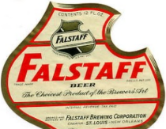

Section 4: Conflicts of Interest 4.1: Identifying Conflicts of Interest
I can't believe you had a life before me. I can't believe they let you run around free, just putting your body wherever it seemed like a good idea.
40
What is a Conflict of Interest?
Attorneys must always watch for and avoid "conflicts of interest." A conflict of interest exists whenever an attorney may have to choose between the interests of a client and some other interest. Under the fiduciary duty of loyalty, attorneys must always put the interests of their clients before any other interests, including their own. Accordingly, a conflict of interest exists whenever the interests of a client differ from the interests of another client, the attorney, or a third party with a relationship to the attorney.
Broadly speaking, there are four categories of conflicts of interest, e.g. conflicts between the interests of a client and:
1. the lawyer's own interests
2. the lawyer's duties to another client
3. the lawyer's duties to a former client
4. the lawyer's duties to a third person.
The conflict of interest rules are intended to ensure that attorneys observe the duty of loyalty, by preventing them from representing clients with competing interests.
However, the term "conflict of interest" is hard to define with any precision, because the concept of a conflict of interest is both procedural and substantive, reflecting the intersection of formal rules and normative values. Not every formal conflict of interest presents a real conflict of interest. Some conflicts are trivial, and do not create a substantial concern. Others are merely speculative, and do not require analysis.
Formally, a conflict of interests exists whenever an attorney's legal duties to a client actually or potentially conflict with the interests of the attorney, another actual or potential client, or a third party to whom the attorney has a legal duty. But substantively, perhaps not every formal conflict of interest should necessarily qualify as an actual conflict of interest. Many are trivial, and many more will never materialize. If a formal conflict does not present a substantive conflict, is it really a conflict at all?
Ultimately, the definition of a conflict of interest depends on the purpose of the conflicts rules. If the purpose of the rules is to protect clients from their attorneys, then perhaps the rules should
Liz Phair,
Jealousy,
Whip-Smart (1994).
be interpreted and applied literally, in order to ensure that unscrupulous attorneys cannot avoid regulation. But if the purpose of the rules is to govern a business relationship between clients and their attorneys, then perhaps the rules should be interpreted and applied more flexibly, in order to help parties reach a mutually agreeable outcome.
ABA Canons of Professional Ethics: Canon 6 (1908)
It is the duty of the lawyer at the time of retainer to disclose to the client all the circumstances of his relations to the parties, and any interest in or connection with the controversy, which might influence the client in the selection of counsel.
It is unprofessional to represent conflicting interests, except by express consent of all concerned given after a full disclosure of the facts. Within the meaning of this canon, a lawyer represents conflicting interests when, on behalf of one client, it is his duty to contend for that which duty to another client requires him to oppose.
The obligation to represent the client with undivided fidelity forbids also the subsequent acceptance of retainers or employment from others in matters adversely affecting any interest of the client with respect to which confidence has been reposed.
ABA Model Code of Professional Responsibility (1980)
Canon 5: A Lawyer Should Exercise Independent Professional Judgment on Behalf of a
Client
The professional judgment of a lawyer should be exercised, within the bounds of the law, solely for the benefit of his client and free of compromising influences and loyalties. Neither his personal interests, the interests of other clients, nor the desires of third persons should be permitted to dilute his loyalty to his client.
Model Rule 1.7: Conflict of Interest: Current Clients
a. Except as provided in paragraph (b), a lawyer shall not represent a client if the representation involves a concurrent conflict of interest. A concurrent conflict of interest exists if:
1. the representation of one client will be directly adverse to another client; or
2. there is a significant risk that the representation of one or more clients will be materially limited by the lawyer's responsibilities to another client, a former client or a third person or by a personal interest of the lawyer.
b. Notwithstanding the existence of a concurrent conflict of interest under paragraph (a), a lawyer may represent a client if:
1. the lawyer reasonably believes that the lawyer will be able to provide competent and diligent representation to each affected client;
2. the representation is not prohibited by law;
3. the representation does not involve the assertion of a claim by one client against another client represented by the lawyer in the same litigation or other proceeding before a tribunal; and
4. each affected client gives informed consent, confirmed in writing.
Restatement (Third) of the Law Governing Lawyers § 121: The Basic Prohibition of Conflicts of Interest
A conflict of interest is involved if there is a substantial risk that the lawyer's representation of the client would be materially and adversely affected by the lawyer's own interests or by the lawyer's duties to another current client, a former client, or a third person.
Glueck v. Jonathan Logan, Inc.,
653 F. 2d 746 (2d Cir. 1981)
Summary:
Jonathan Logan, Inc. fired Charles Glueck, who hired Phillips Nizerto represent him in a wrongful termination action. Logan filed a motion to disqualify Phillips Nizer because the firm represented the Apparel Manufacturers Association, Inc., a membership organization that includes one of Logan's divisions. The district court granted the motion, because the relationship between Phillips Nizer and Logan resembled an attorney-client relationship, and the subject matter of Glueck's action was "substantially related" to Phillips Nizer's representation of the Association. The circuit court affirmed, because representing both Glueck and the Association would create a "realistic risk" of Phillips Nizer breaching its duty of loyalty.
NEWMAN, Circuit Judge:
The issue on this appeal is whether in the circumstances of this case a law firm that represents an incorporated trade association may represent an individual client in a suit against a corporation one division of which is a member of the association. The District Court for the Southern District of New York ruled that the firm must be disqualified. We conclude that Judge Conner applied the correct standards of law and reached a result well within his discretion, and we therefore affirm.
The appellant, Charles Glueck, formerly employed as an executive of appellee Jonathan Logan, Inc., brought this suit against Logan, alleging that he was discharged in breach of his employment contract. Logan promptly moved to disqualify Glueck's law firm, Phillips, Nizer, Benjamin, Krim & Ballon. The motion was based on the following undisputed facts. Phillips Nizer represents the Apparel Manufacturers Association, Inc., a not-for-profit incorporated trade association of dress manufacturers with more than 100 members. The sole function of the Association is to negotiate multi-employer collective bargaining agreements on behalf of its members with employees represented by the International Ladies Garment Workers' Union.
One of the Association's members is R & K Originals, a division of Logan. The division's president, Manny Eagle, is executive vice-president of the Association and a member of the
Association's negotiating committee. Eagle has had occasion to meet with lawyers from Phillips Nizer and discuss labor matters with them. On these facts, Judge Conner granted appellee's motion to disqualify Phillips Nizer from representing Glueck in his suit against Logan. From that ruling, Glueck appeals.
Recognizing the serious impact of attorney disqualification on the client's right to select counsel of his choice, we have indicated that such relief should ordinarily be granted only when a violation of the Canons of the Code of Professional Responsibility poses a significant risk of trial taint. That risk is encountered when an attorney represents one client in a suit against another client, in violation of Canon 5, or might benefit a client in a lawsuit by using confidential information about an adverse party obtained through prior representation of that party, in violation of Canon 4. Mindful of our standards, the parties have joined issue on whether Logan is a client of Phillips Nizer by virtue of the firm's representation of the Association. Glueck contends that members of an incorporated trade association are not clients of the association's lawyer and emphasizes that the retainer agreement between Phillips Nizer and the Association explicitly negates the firm's representation of the Association's members. Logan responds that the members of an incorporated association are the clients of the association's lawyer and argues that Phillips Nizer's retainer agreement only assures it the right to charge separate fees for legal work done specifically for an Association member.
We share Judge Conner's view that the issue is not whether Phillips Nizer's relationship to Logan is in all respects that of attorney and client, but whether there exist sufficient aspects of an attorney-client relationship "for purposes of triggering inquiry into the potential conflict involved in Phillips Nizer's role as plaintiff's counsel in this action."
41
Having concluded that such inquiry should be made, Judge Conner then applied the strict standards that ordinarily prohibit representation of adverse interests, and determined that, in view of the relationship between the subject of Glueck's lawsuit and the nature of the services rendered by Phillips Nizer to the Association and its members, Phillips Nizer had not demonstrated "that there will be no actual or apparent conflict in loyalties or diminution in the vigor of its representation."
We reach the same conclusion, but analyze the issue in a slightly different way. We do not believe the strict standards are inevitably invoked whenever a law firm brings suit against a member of an association that the firm represents. If they were, many lawyers would be needlessly disqualified because the standards of Canon 5 impose upon counsel who seeks to avoid disqualification a burden so heavy that it will rarely be met. That burden is properly imposed when a lawyer undertakes to represent two adverse parties, both of which are his clients in the traditional sense. But when an adverse party is only a vicarious client by virtue of membership in an association, the risks against which Canon 5 guards will not inevitably arise.
A law firm that represents the American Bar Association need not decline to represent a client injured by an automobile driven by a member of the ABA. Moreover, if Canon 5 were applicable to all suits against association members, there would be a temptation to water down the strict standards of Canon 5 and find them met more easily than in cases where the adverse parties
41
We have previously held the standards of Canon 5 to be applicable even though the interests adverse to those of a law firm's client are not those of another client in the traditional sense.
are really clients of the same lawyer. In this case, Judge Conner, after finding Canon 5 applicable, applied what amounted to a "substantial relationship" test, and concluded that the subject of Glueck's lawsuit was substantially related to Phillips Nizer's representation of the Association. However, "the 'substantial relationship' test does not set a sufficiently high standard by which the necessity for disqualification under Canon 5 should be determined." We think the standards of Canon 5 should be strict. We also believe those standards should apply to suits against association members only when the risks against which Canon 5 protects are likely to arise.
This approach leads us to use the "substantial relationship" test in determining when Canon 5 should be applied to suits brought by an association's law firm against an association member. Disqualification will ordinarily be required whenever the subject matter of a suit is sufficiently related to the scope of the matters on which a firm represents an association as to create a realistic risk either that the plaintiff will not be represented with vigor or that unfair advantage will be taken of the defendant. Moreover, although our concern is with the risk of tainting a trial, once that risk appears, it is appropriate to assess the risk that prosecution of a plaintiff's lawsuit by an association's law firm will inhibit the free flow of information from the defendant to the firm that is necessary for the firm's proper representation of the association.
Though structured in a slightly different framework,
42
Judge Conner's findings fully justify disqualification under the approach we have outlined. Judge Conner relied upon the risk that the issue of whether Logan had cause to terminate Glueck might well arise in the course of collective bargaining discussions conducted by Phillips Nizer for the Association. He also noted the risk that in preparing for collective bargaining sessions, the law firm might learn of Logan's policies or past practices bearing on the subject of Glueck's termination. These risks demonstrate the requisite relationship between Glueck's lawsuit and the subject matter of Phillips Nizer's representation of the Association. Because of that relationship, the strict standards apply,
43
and we agree with Judge Conner that appellant has not sustained the heavy burden of demonstrating that, under those standards, disqualification can be avoided. The entry of an order of disqualification was well within the proper exercise of discretion by the District Court
44
The order is affirmed.
42
Judge Conner, in effect, used the "substantial relationship" test to determine whether Phillips Nizer had met its burden under Canon 5; we use the test to determine whether Canon 5 is applicable.
43
We reject the appellant's contention that the result reached by Judge Conner is foreclosed by
Board of Education
v.
Nyquist.
That decision concerned a lawyer who represented male teachers in litigation adverse to the interests of female teachers, under circumstances where the lawyer was supplied to the male teachers pursuant to a legal service program supported in part by the union dues of both the male and female teachers. A disqualification order was reversed for lack of any risk that the lawyer's loyalty to his male clients would be diminished or that he might gain unfair advantage through access to any privileged information from the female teachers.
44
We reject, as did Judge Conner, the appellant's contention that disqualification should not occur because Logan's division, R & K Originals, is a member of the Association, rather than Logan itself. The risks identified by Judge Conner are sufficient to warrant disqualification even though only Logan's division is a member of the Association. Nor do we accept the contention that it will be unduly burdensome for law firms that represent trade associations to inform themselves of the corporate identity of those members of an association that are constituent parts of a non-member corporation.
Questions:
1. Why did Phillips Nizer have a conflict of interest?
2. Why did the district court disqualify Phillips Nizer? Why did the circuit court disqualify Phillips Nizer? How did their reasoning differ, if at all?
3. The court distinguishes this case from
Board of Education v. Nyquist.
Do you find that distinction convincing?
4. If the Association kicked out Logan, would Phillips Nizer still have a conflict of interest or be disqualified?

Gutting v. Falstaff Brewing Corp.,
710 F. 2d 1309 (8th Cir. 1983)
Summary: Ferdinand Gutting was the president of Falstaff Brewing, which gave him a life insurance policy, payable unless he was discharged for proper cause. Paul Kalmanovitz bought Falstaff and fired Gutting, and when Gutting died, Falstaff refused to pay his life insurance benefits. Virginia Gutting filed a breach of contract claim, and hired attorney James S. McClellan to represent her. Falstaff filed a motion to disqualify McClellan, on the ground that he had previously represented Falstaff. McClellan withdrew, and Gutting hired Harry B. Wilson. But Wilson also withdrew after identifying a conflict of interest, and Gutting hired David G. Dempsey. In the meantime. Falstaff filed a motion for summary judgment, arguing that Gutting had admitted all of the facts alleged in its complaint by failing to timely answer its request for admissions. The district court granted the motion, but the circuit court reversed, holding that the district court should have considered the disqualification of Gutting's counsel.
LAY, Chief Judge.
Virginia M. Gutting appeals from an order of the district court entering summary judgment in favor of Falstaff Brewing Corporation and denying her motion for summary judgment. Gutting's primary argument on this appeal is based on the claim that the district court erred in denying her motion for leave to file answers out of time to Falstaff's request for admissions and in ordering the matters set forth in the request deemed admitted. Because we conclude that the district court erred by not allowing Gutting to file late answers to the request for admissions, we reverse and remand.
Virginia Gutting is the widow of Ferdinand (Ferd) J. Gutting, former member of the Board of Directors and President of Falstaff. In 1972 Falstaff established an insurance plan for certain key employees. Pursuant to this plan, in January 1973, Ferdinand Gutting entered into a written agreement with Falstaff entitled Employee's Death Benefit Agreement. The purpose of the agreement was to provide for Falstaff's payment of a death benefit to Virginia Gutting, Ferd Gutting's designated payee. Falstaff purchased three life insurance policies on Ferd Gutting's life to secure this obligation. The agreement provided that all benefits would be forfeited if (1) the life insurance policies were contested successfully by the insurance company; (2) the employee left Falstaff's employment voluntarily, subject to certain vesting provisions; or (3) the employee was discharged "for proper cause."
In early 1975, Paul Kalmanovitz purchased voting control of Falstaff and became Chairman of the Board. Subsequently, for reasons in dispute in this lawsuit, Ferd Gutting's employment with Falstaff was terminated and the Board of Directors voted to deny Ferd Gutting all benefits because his termination was for cause. Ferd Gutting died in December 1980. Falstaff has refused to pay the amounts due to Virginia Gutting pursuant to the terms of the Employee's Death Benefit Agreement and she brought suit to recover the proceeds. Throughout this litigation Falstaff has asserted as an affirmative defense that Ferd Gutting was terminated for
cause and thus forfeited all benefits due his beneficiary under the agreement. Virginia Gutting claims the termination was not for "proper cause" as that term is defined in the agreement.
Procedural History.
Virginia Gutting filed a complaint on July 8, 1981, through her attorney James S. McClellan. On September 30, 1981, Falstaff filed a motion to disqualify McClellan because he formerly had been a member of Falstaff s Board of Directors and outside general counsel to Falstaff. Falstaff asserted that McClellan had material, firsthand knowledge of events relevant to Falstaffs defense and that McClellan would likely be called as a witness. While the motion to disqualify was pending, on October 13, 1981, Falstaff filed its request for admissions, first interrogatories, and request for production of documents.
45
Thereafter, the district court held a conference at which McClellan indicated he would withdraw voluntarily. On December 4, 1981, McClellan formally withdrew.
On December 11, 1981, Harry B. Wilson entered his appearance on behalf of Gutting. On January
4,7,
and 8, 1982, Falstaff served notices of 15 depositions to begin on February 8 in Providence, Rhode Island, and to continue throughout February and early March around the country. On January 7 counsel for Falstaff, Steven P. Sanders, sent a letter to Harry Wilson concerning the failure to respond to the request for admissions and asking for the answers. Wilson and Sanders discussed the request over the telephone several days later and Sanders agreed to wait an indefinite period of time.
According to an affidavit filed by Wilson he began to prepare for the upcoming depositions and to draft responses to discovery requests on January 29, 1982. Wilson further swore that on January 30 he concluded his firm had a serious conflict of interest because some of the scheduled deponents were current clients of the firm. These clients had on-going litigation matters with Falstaff. Wilson researched the nature of the conflict, discussed it with lead counsel in the case, and called Sanders on February 6, 1982, to inform him of the conflict of interest. On February 8 Wilson appeared before the district court and requested leave to withdraw. The motion evidently was pending throughout February and the scheduled depositions for February were postponed.
45
Falstaffs request for admissions strategically concerned the major contested factual issue in the case of whether Ferd Gutting had been discharged for cause. The request stated in full:
1. Admit that the life insurance program set forth and discussed in your complaint allowed Falstaff to terminate all life insurance benefits with respect to any employee whose employment was terminated "for cause."
2. Admit that if "cause" existed for the termination by Falstaff of Ferd Gutting's employment, Falstaff had the right to terminate all life insurance benefits otherwise available to Ferd Gutting and his heirs and beneficiaries.
3. Admit that Ferd Gutting was told by Falstaff at the time of the termination of his employment by Falstaff that he was being discharged from his employment "for cause."
4. Admit that Ferd Gutting was discharged from his employment with Falstaff "for cause."
Falstaff alleges that on February 27, 1982, Wilson again telephoned Sanders to advise him that the depositions scheduled for the following week would have to be canceled. Sanders refused, in part due to a March 15 trial setting, and both parties appeared in court on March 1. Wilson sought a protective order asking the court to postpone the March 2 and 3 depositions because of his conflict of interest. The court indicated the depositions would not be delayed unless new counsel for Gutting entered an appearance. Later the same day, Gutting's third attorney, David G. Dempsey, entered his appearance and the depositions were postponed one day. The court granted Wilson leave to withdraw and continued the trial setting until June 7, 1982.
On April 9, 1982, Dempsey filed several motions on behalf of Gutting, including a motion for leave to file answers to the request for admissions out of time. On the same date, Falstaff filed a motion for summary judgment on the theory that all fact issues in the case had been admitted by Gutting's failure to make a timely response to the request. On April 21, the court denied Gutting's motion for leave to file the answers and delayed ruling on Falstaff's summary judgment motion. The case was still scheduled to proceed to trial on June 7, 1982, and Falstaff chose to proceed with 11 scheduled discovery depositions. On May 28, 1982, the district court granted Falstaff's summary judgment motion. The court ruled there was no genuine issue of material fact that the death benefits had been properly withheld under the terms of the agreement because the matter of Ferd Gutting's termination for cause had been deemed admitted.
Discussion
2. Conflicts of Interest of Gutting's Counsel.
Gutting contends that the late responses should have been allowed because Falstaff's motion to disqualify McClellan and Wilson's withdrawal due to his conflict of interest rendered her without effective representation. The conflicts of interest experienced by McClellan and Wilson disrupted their professional duties to take actions best suited to furthering Gutting's interests. Once the conflicts became apparent, each attorney became unable to exercise his independent professional judgment. Gutting seems to be arguing that she should not be penalized because of her attorney's "inability" to take actions on her behalf. We agree that her counsels' conflicts of interest should have been considered by the district court.
The rules of professional responsibility that prohibit an attorney from representing differing interests are designed to protect the client from the attorney's potential abuses. It would appear to us that the purpose of such rules would be best furthered if an attorney discovering a conflict of interest took no action that may be inimical to the client's interests. The existence of a conflict, if not actually tolling the time period for answering discovery requests, should at least be a factor when evaluating the reasons for an untimely response.
In the instant case, Falstaff first filed the motion to disqualify McClellan and then filed the request for admissions barely two weeks later. Falstaff could not expect Gutting to answer the request during the pendency of the motion to disqualify her attorney. Indeed, once McClellan
agreed to withdraw, Falstaff agreed to wait for a response until a new attorney had entered an appearance and had an opportunity to review the file. Wilson entered an appearance on December 11, 1981; his appearance was formally accepted on December 17. Sanders, counsel for Falstaff, concedes that he advised Wilson the extension of time for a response was good for a reasonable period of time. In early January 1982 Sanders and Wilson again informally agreed that the time for answering the requests could be extended a little while longer. Falstaff admits that it would have accepted the answers through the end of January and perhaps during the first few days of February. In the affidavit of Wilson, he swears that he discovered a possible conflict of interest on January 30, 1982, as he was preparing responses to the discovery requests. He notified Sanders of the conflict of interest on February 6 and requested leave to withdraw on February 8. At the time Wilson discovered the existence of the conflict, Falstaff concedes that answers to the request still would have been accepted. It was sometime after January 30 that Falstaff began to consider the matters in the request admitted.
Falstaff contends that regardless of Wilson's conflict of interest he could have responded to the request for admissions. Wilson's conflict related only to certain upcoming depositions and did not affect his ability to answer the request. We disagree. As we read the conflict-of-interest 1'rules, any actions taken by Wilson may have appeared to be inimical to Gutting's interests. Wilson could not have responded to the request as long as he was hindered by a conflict of interest in any aspect of his representation.
46
We do not mean to imply disapproval of the district court's use of discovery sanctions in appropriate cases. An attorney's conflict of interest and his or her resulting inability to act must be distinguished from the situation in which the attorney's failure to act was inexcusable. In Mrs. Gutting's case it would be inequitable to deem the requests admitted and penalize her because of her attorney's compliance with the rules of professional responsibility.
We reverse the judgment of the district court and remand for further proceedings with directions that the district court set a reasonable time period in which to allow Gutting to file answers to the request for admissions.
Questions:
1. What is the purpose of the conflict of interest rules? Who are they intended to protect? Who do they actually protect?
2. Should Gutting's attorneys have been disqualified? What if she consented to the conflict?
Further Listening:
46
We do not know why it took Wilson one week to inform Sanders of the conflict and another three weeks to withdraw formally from the case and have Mr. Dempsey enter his appearance. Falstaff complains of this time lag because it was required to cancel several depositions. Given the pending deposition schedule and trial setting, an expeditious substitution of counsel would have been appropriate. Nevertheless, our analysis of the conflict-of-interest problem remains the same.
•
Jill I. Gross
,
Professional Responsibility: Client Conflicts of Interest
,
Law to Fact: The Law School Podcast (March 19, 2019).
4.2: Resolving Conflicts of Interest
/ saw/
the future in a dream last night. Somebody's gonna get hurt, somebody's gonna get hurt. I hope it's not me, but I suspect it's going to have to be.
47
While conflicts of interest implicate the duty of loyalty, they do not necessarily preclude representation or require withdrawal from representation. Some conflicts of interest cannot be resolved. For example, an attorney cannot represent both the plaintiff and the defendant in an action, and typically cannot represent any parties with actual or potential claims against each other. But many conflicts of interest can be resolved, if the attorney can represent the client without breaching the duty of loyalty, and the client provides informed consent to representation despite the conflict.
Waiver of Conflicts of Interest
In order to resolve a conflict of interest problem, attorneys should apply the four-step process outlined in
Model Rule 1.7, comment [21
:
1. clearly identify the client or clients;
2. determine whether a conflict of interest exists;
3. decide whether the representation may be undertaken despite the existence of a conflict, i.e., whether the conflict is consentable; and
4. if so, consult with the clients affected and obtain their informed consent, confirmed in writing.
This process provides a framework for identifying, evaluating, and resolving conflicts of interest. Essentially, it requires an attorney to ask: 1) whether an attorney-client relationship exists; 2) whether the attorney's legal duties to a client conflict with the interests of the attorney, another current or former client, or a third-party to whom the lawyer owes a legal duty; 3) whether representation is legally permissible and practically possible under the circumstances; and 4) whether the client is adequately informed of the nature and potential consequences of the conflict, and has consented to representation in writing, despite the conflict. However, each of those steps requires an exercise of judgment on the part of the attorney.
Identifying Clients
A "client" is any party with whom an attorney has an attorney-client relationship of any kind. The conflict of interest rules apply to both clients and quasi-clients. As a consequence, a party may be a client for the purpose of the conflict of interest rules even if the attorney did not intend to form an attorney-client relationship. For example, a party that disclosed confidential information to an attorney in the course of seeking representation may be a client for the purpose of the conflict of interest rules, even if the party never hired the attorney. The agents or employees of a
47
The Mountain Goats,
Black Pear Tree
(2008).
client organization may be clients, if they reasonably believe the attorney has agreed to represent them personally or have provided confidential information pertaining to their own circumstances. And a subsidiary of a client organization may also be a client, if the attorney effectively represents the subsidiary as well as the parent.
Identifying Conflicts of Interest
A "conflict of interest" exists if an attorney's fiduciary duties to a client conflict with the interests of the attorney, another current or former client, or a third-party to whom the attorney owes a legal duty. In other words, if the interests of the attorney, another current or former client, or third-party could provide an incentive for the attorney not to observe those legal duties to the client, then a conflict of interest exists. If the attorney could benefit from putting another interest ahead of the client's interests, providing less than candid and impartial advice, or using confidential information provided by the client, then a conflict of interest exists, whether or not the attorney ever has or would violate the fiduciary duties of loyalty, impartiality, and confidentiality.
Notably, a conflict of interest does not require actual harm to the client, only potential harm. There is no such thing as a "potential conflict of interest." A conflict of interest exists as soon as the potential for harm is created, whether or not the harm ever materializes. The risk of harm to the client's interests creates the conflict of interest, so the question is not whether a conflict exists, but how serious a conflict it presents. In some cases, the risk of harm may be too small to create a meaningful conflict, or an attorney's legal duties may themselves prevent the conflict from arising. But the conflict still exists, it simply is not a material conflict that requires an attorney to decline or withdraw from representation.
The paradigmatic conflict of interest exists when an attorney represents directly adverse parties, or one client litigating a claim against another. Notably, a conflict of interest exists whenever clients are directly adverse in any action, even if the attorney represents neither client in that action. Of course, co-defendants and co-plaintiffs may be directly adverse, because crossclaims and third-party claims create direct adversity. And potential claims may also create direct adversity, even if they are never filed. Accordingly, attorneys should be wary whenever they represent clients on the opposite sides of any transaction. Any potential adversity may create a conflict of interest.
Of course, a conflict of interest may exist without direct adversity. If an attorney represents two clients with opposing interests, it may "materially limit" the attorney's ability to represent both clients, because it may create an incentive for the attorney to compromise those interests. If dual representation could affect the attorney's decisions, then a conflict of interest exists.
Conflicts of interest can arise unexpectedly, as a client's interests may change over time. Accordingly, a conflicts analysis can never be a "one and done" practice. Attorneys must always be vigilant to identify and resolve conflicts of interest whenever they arise.
However, a conflict of interest may or may not be material. A conflict of interest is material if it creates a substantial risk of providing an incentive for an attorney to violate a fiduciary duty to a client. But by extension, a conflict of interest is no material if it does not create such a risk. Attorneys must obtain the informed consent of their client in order to resolve a material conflict of interest. But attorneys need not obtain informed consent in order to resolve an immaterial conflict of interest, because no actual conflict exists. Of course, it can be difficult to determine whether a conflict is material, and immaterial conflicts have an unfortunate tendency to become material.
Waivable Conflicts of Interest
If a material conflict of interest exists, then the attorney must determine whether it is waivable. Some conflicts are waivable, but others are not. Specifically, a conflict is waivable only if it does not make representation prohibited or impossible under the circumstances. For example, some attorneys, typically former government employees, are prohibited by law from representing certain clients, so that is a conflict of interest that cannot be waived. Likewise, courts have uniformly held that attorneys cannot represent parties to an action with claims against each other, so that is also a conflict of interest that cannot be waived. However, many courts have held that attorneys can represent directly adverse clients, so long as the attorney does not represent both clients in the same matter, and both clients provide informed consent, so that is a conflict of interest that may be waived.
Informed Consent
If a waivable conflict of interest exists, then the attorney must obtain informed consent to the conflict from the client or clients. For example, if an attorney's interests conflict with a client's interests, then the attorney must obtain informed consent from the client. If a client's interests conflict with another client's interests, then the attorney must obtain informed consent from both clients. And if a client's interests conflict with a third party's interests, then the attorney must obtain informed consent from the client.
Sometimes, obtaining informed consent is easy. For example, a formal conflict of interest may not create a real conflict of interest, and the client may readily consent. Indeed, some clients may even see some formal conflicts of interest as advantages, rather than liabilities. One person's "conflict of interest" may be another person's "investment in the outcome."
But other times, obtaining informed consent may be difficult or impossible. A former client may well resent their former attorney representing an adversary and withhold consent. And a quasiclient may be even more likely to harbor misgivings. In those circumstances, even a relatively trivial conflict of interest may become an insuperable barrier to representation.
Rule 1.7: Conflict of Interest: Current Clients
a. Except as provided in paragraph (b), a lawyer shall not represent a client if the representation involves a concurrent conflict of interest. A concurrent conflict of interest exists if:
1. the representation of one client will be directly adverse to another client; or
2. there is a significant risk that the representation of one or more clients will be materially limited by the lawyer's responsibilities to another client, a former client or a third person or by a personal interest of the lawyer.
b. Notwithstanding the existence of a concurrent conflict of interest under paragraph (a), a lawyer may represent a client if:
1. the lawyer reasonably believes that the lawyer will be able to provide competent and diligent representation to each affected client;
2. the representation is not prohibited by law;
3. the representation does not involve the assertion of a claim by one client against another client represented by the lawyer in the same litigation or other proceeding before a tribunal; and
4. each affected client gives informed consent, confirmed in writing.
Restatement (Third) of the Law Governing Lawyers § 122: Client Consent to a Conflict of Interest
1. A lawyer may represent a client notwithstanding a conflict of interest prohibited by § 121 if each affected client or former client gives informed consent to the lawyer's representation. Informed consent requires that the client or former client have reasonably adequate information about the material risks of such representation to that client or former client.
2. Notwithstanding the informed consent of each affected client or former client, a lawyer may not represent a client if:
a. the representation is prohibited by law;
b. one client will assert a claim against the other in the same litigation; or
c. in the circumstances, it is not reasonably likely that the lawyer will be able to provide adequate representation to one or more of the clients.
Obtaining Informed Consent to a Conflict of Interest
An attorney may represent a client despite a conflict of interest only if the attorney obtains informed consent to the conflict from the client, ideally in writing. In order to obtain informed consent, the attorney must provide the client with adequate disclosure of the conflict. Specifically, the attorney must disclose any and all competing interests that could create a conflict. And the attorney must explain the nature of every conflict and how they could affect the attorney's representation of the client, including the attorney's fiduciary duties of loyalty, impartiality, and confidentiality. In addition, attorneys should, and often must, obtain informed consent to any conflicts before commencing representation, and typically cannot obtain valid informed consent when terminating representation.
Restatement (Third) of the Law Governing Lawyers § 122(c)(i): The Requirement of Informed Consent—Adequate Information
Informed consent requires that each affected client be aware of the material respects in which the representation could have adverse effects on the interests of that client. The information required depends on the nature of the conflict and the nature of the risks of the conflicted representation. The client must be aware of information reasonably adequate to make an informed decision.
Information relevant to particular kinds of conflicts is considered in several of the Sections hereafter. In a multiple-client situation, the information normally should address the interests of the lawyer and other client giving rise to the conflict; contingent, optional, and tactical considerations and alternative courses of action that would be foreclosed or made less readily available by the conflict; the effect of the representation or the process of obtaining other clients' informed consent upon confidential information of the client; any material reservations that a disinterested lawyer might reasonably harbor about the arrangement if such a lawyer were representing only the client being advised; and the consequences and effects of a future withdrawal of consent by any client, including, if relevant, the fact that the lawyer would withdraw from representing all clients. Where the conflict arises solely because a proposed representation will be adverse to an existing client in an unrelated matter, knowledge of the general nature and scope of the work being performed for each client normally suffices to enable the clients to decide whether or not to consent.
When the consent relates to a former-client conflict, it is necessary that the former client be aware that the consent will allow the former lawyer to proceed adversely to the former client. Beyond that, the former client must have adequate information about the implications (if not readily apparent) of the adverse representation, the fact that the lawyer possesses the former client's confidential information, the measures that the former lawyer might undertake to protect against unwarranted disclosures, and the right of the former client to refuse consent. The former client will often be independently represented by counsel. If so, communication with the former client ordinarily must be through successor counsel.
The lawyer is responsible for assuring that each client has the necessary information. A lawyer who does not personally inform the client assumes the risk that the client is inadequately informed and that the consent is invalid. A lawyer's failure to inform the clients might also bear on the motives and good faith of the lawyer. On the other hand, clients differ as to their sophistication and experience, and situations differ in terms of their complexity and the subtlety of the conflicts presented. The requirements of this Section are satisfied if the client already knows the necessary information or learns it from other sources. A client independently represented—for example by inside legal counsel or by other outside counsel—will need less information about the consequences of a conflict but nevertheless may have need of information adequate to reveal its scope
and severity. When several lawyers represent the same client, responsibility to make disclosure and obtain informed consent may be delegated to one or more of the lawyers who appears reasonably capable of providing adequate information.
Disclosing information about one client or prospective client to another is precluded if information necessary to be conveyed is confidential. The affected clients may consent to disclosure, but it also might be possible for the lawyer to explain the nature of undisclosed information in a manner that nonetheless provides an adequate basis for informed consent. If means of adequate disclosure are unavailable, consent to the conflict may not be obtained.
The requirement of consent generally requires an affirmative response by each client. Ambiguities in a client's purported expression of consent should be construed against the lawyer seeking the protection of the consent. In general, a lawyer may not assume consent from a client's silent acquiescence. However, consent may be inferred from active participation in a representation by a client who has reasonably adequate information about the material risks of the representation after a lawyer's request for consent. Even in the absence of consent, a tribunal applying remedies such as disqualification will apply concepts of estoppel and waiver when an objecting party has either induced reasonable reliance on the absence of objection or delayed an unreasonable period of time in making objection.
Effective client consent to one conflict is not necessarily effective with respect to other conflicts or other matters. A client's informed consent to simultaneous representation of another client in the same matter despite a conflict of interest does not constitute consent to the lawyer's later representation of the other client in a manner that would violate the former-client conflict rule.
NuStar Farms, LLC v. Zylstra
, 880 N.W.2d 478 (Iowa 2016)
Summary:
Between 2002 and 2014, attorney Larry Stoller represented Robert and Marcia Zylstra in several different matters. In 2007, Stoller and the Zylstras discussed a manure easement agreement with NuStar Farms. In 2014, Stoller began representing NuStar, which had a dispute with the Zylstras over a deed. Soon afterward, Stoller ended his representation of the Zylstras and filed an action against them for NuStar. The Zylstras retained attorney John Sandy, who filed a motion to disqualify Stoller. The trial court denied the motion, but the Iowa Supreme Court reversed, holding that Stoller had a conflict of interest and the Zylstras did not consent.
ZAGER, Justice.
In this interlocutory appeal, we are asked to decide whether an attorney should be disqualified
from representing one party in a lawsuit, either because his representation of the two parties
was concurrent or because he had previously represented the opposing party in a similar
matter. The district court concluded that the attorney need not be disqualified. For the reasons stated below, we conclude that the district court did not abuse its discretion in concluding that the prior attorney-client relationship failed the "substantial relationship" test. However, we conclude that the attorney did have a concurrent conflict of interest. Therefore, we find the district court abused its discretion in not disqualifying the attorney.
Background Facts and Proceedings.
Attorney Larry Stoller began representing Robert and Marcia Zylstra in 2002. Stoller represented them in a number of legal matters between 2002 and 2014, including financial issues, business acquisitions, and real estate transactions. Although the Zylstras were represented by Stoller on a number of occasions, they also used the services of other attorneys throughout this time period. At issue for the purposes of this case are a meeting in January 2007 and a small claims case ending in 2014.
On January 24, 2007, Robert met with Stoller to discuss estate planning and manure easement agreements. At the time of the meeting, the Zylstras were shareholders in Sibley Dairy, LLP. During this meeting, Robert showed Stoller a multipage document containing multiple manure easement agreements that the Zylstras intended to enter into with NuStar Farms, LLC. The parties disagree as to the extent of Stoller's involvement during this meeting regarding the manure easement agreements. Stoller asserts that he only briefly glanced at the easement agreements and then advised Robert that he should seek the advice of another attorney. Although Stoller acknowledges he made notations on the first page of the document, he argues that the notations do not indicate he read the entirety of the multipage manure easement agreements. Robert asserts that he asked Stoller to review the manure easement agreements and provide advice. Robert further alleges that Stoller examined the agreements during the meeting and advised him to go ahead and complete and sign them.
The record reflects that Stoller made notations on the documents. However, Stoller claims the notations were made at Robert's request to help Robert remember what to discuss with one of the attorneys that Stoller suggested Robert contact. Both parties agree that Stoller suggested Robert find an attorney with more experience in the area of manure easements. Stoller sent a follow-up email to Robert with two attorney references who he thought could assist the Zylstras with the easements. The email also confirmed that Robert asked Stoller to look at the easements and that Stoller "briefly looked at them." Further, Stoller wrote, "The changes you were talking about should be run by the other attorney and I suggest that if approved they be included in the easements. I would also think that some permit would be necessary." The record also reflects that during this conference they discussed estate planning matters. This is confirmed in the follow-up email and Stoller's office notes of the conference. Stoller billed the Zylstras for 1.20 hours and described the meeting as, "Conference with Robert on manure easement; review easements and agreement." There is nothing in the record to indicate that Stoller represented the Zylstras when they executed the manure easement agreements with NuStar or that he had any further involvement in the sale of Sibley Dairy.
Stoller continued to represent the Zylstras in a number of other legal matters between 2007 and 2014. In December 2013, Stoller began representing the Zylstras in a small claims matter. The case was submitted to the small claims court on February 10, 2014, but the court did not issue its ruling until May 30. Stoller began representing NuStar in early May in an action regarding loan covenants. Also in early May, Stoller began contacting the Zylstras on behalf of NuStar. At least part of these contacts involved the Zylstras' failure to provide NuStar with a deed to property involving ingress. Stoller acknowledges that he contacted Robert about the Zylstras' need to sign the deed. On May 13, Stoller sent the Zylstras an email that stated it was the third time he had contacted them about the deed to ingress property sold by the Zylstras to NuStar. Stoller wrote in the email,
I must now put you on formal notice that if the signed deed is not received by my office by the close of business on Wednesday, May 14, 2014, that I will need to pursue the appropriate remedies for specific performance and damages on behalf of Nustar.
Stoller also wrote in his email, "I have tried to remain neutral in those matters and advised both parties that I could represent neither."
In this same email, Stoller informed the Zylstras that he would no longer be representing them in any future matters. Robert acknowledges that he understood the May 13 email as a severance of the attorney-client relationship. Stoller emailed the Zylstras again on May 14, expressing disappointment that the Zylstras were not going to sign the deed. Stoller also reminded Robert of his prior financial situation and how Stoller had helped him in the past.
By May 15, the Zylstras had retained John Sandy to represent them in their dealings with NuStar. In Sandy's correspondence to Stoller that same day, he alerted Stoller that the Zylstras found his representation of NuStar to be a conflict of interest based on his prior legal representation and counsel provided to the Zylstras. Sandy specifically requested that Stoller cease further representation of NuStar when those interests conflicted with the Zylstras.
On June 5, Stoller sent the Zylstras a letter notifying them of the judge's ruling in the small claims case and informing them that he believed the decision was appealable. Stoller further notified the Zylstras of their rights to appeal and the deadlines associated with such an appeal. Stoller wrote he would be willing to file an appeal on their behalf and included information about his retainer and billing rate. Stoller also advised the Zylstras that if they chose to have another attorney represent them on the appeal he would release their file to that attorney.
On July 9, Stoller filed a multicount petition on behalf of NuStar against the Zylstras. The petition alleged the Zylstras agreed to sell NuStar a parcel in farmland in 2008, but they failed to tender the requisite deed. One count of the petition also alleged the Zylstras did not abide by certain terms contained in the manure easement agreements. In response, the Zylstras filed a preanswer motion to dismiss based on statute of limitations grounds. They also filed a motion seeking to disqualify Stoller as the attorney for NuStar based on a conflict of interest.
On August 8, the district court held a hearing, and the parties argued both the motion to dismiss and the motion to disqualify Stoller. On October 14, the district court denied both motions. On November 10, the Zylstras filed an application for interlocutory appeal seeking review of the district court's denial of their motion to disqualify Stoller. We granted the application for interlocutory appeal on December 5.
Analysis
The right of a party to choose his or her own attorney is important, but it must be balanced against the need to maintain "the highest ethical standards" that will preserve the public's trust in the bar and in the integrity of the court system. A court must necessarily balance these two competing interests when determining whether to disqualify an attorney. In doing so, the court "must also be vigilant to thwart any misuse of a motion to disqualify for strategic reasons." When we evaluate motions to disqualify an attorney, we use our Iowa Rules of Professional Conduct as the starting point.
Rule 32:1.7 covers concurrent conflicts of interest and states in pertinent part,
(a) Except as provided in paragraph (b), a lawyer shall not represent a client if the representation involves a concurrent conflict of interest. A concurrent conflict of interest exists if:
(1) the representation of one client will be directly adverse to another client; or
(2) there is significant risk that the representation of one or more clients will be materially limited by the lawyer's responsibilities to another client, a former client, or a third person by a personal interest of the lawyer.
The rule goes on to state that a lawyer may continue with the representation of a client if certain stipulations are met, one of which is that each client gives informed, written consent.
The Zylstras allege that Stoller's representation of NuStar was a concurrent conflict of interest with his representation of them. They argue that he began the action on behalf of NuStar in early May, while knowing that the representation would be adverse to the Zylstras because it involved a deed between the two parties. Further, Stoller began contacting the Zylstras on behalf of NuStar before the May 13 email officially terminating his attorney-client relationship with the Zylstras on the small claims case. Stoller responds that there was no concurrent conflict of interest because he did not file the action on behalf of NuStar against the Zylstras until after the May 13 email terminating the attorney-client relationship. In the alternative, the Zylstras argue that Stoller's June 5 email indicates that he was continuing to represent them in the small claims matter until the court issued its ruling. Even thereafter, Stoller advised the Zylstras there was a basis to appeal the judgment, the time for perfecting such an appeal, and his willingness to continue representing them in the appeal. Stoller contends that it was his duty to inform the Zylstras, as his former clients, of the outcome of the small claims hearing and the time limits for appeal. He further contends that, although he said he would be willing to represent the Zylstras
on the appeal, he was also recommending they find alternate representation and thus was only informing them of their options if they chose to go forward with an appeal.
Before we turn to an analysis of whether a concurrent conflict of interest exists, we must address two questions: when the attorney-client relationship between the Zylstras and Stoller ended, and when the attorney-client relationship between NuStar and Stoller began. The first question we may dispose of easily. Generally, a lawyer's representation of a client extends until the time period for motions or appeals expires in a civil action. However, both the attorney and the client may terminate the relationship prior to this natural ending. Both Stoller and the Zylstras agree that the attorney-client relationship was terminated with the May 13 email.
Further, while Stoller did offer to represent the Zylstras on the appeal, the Zylstras did not actually appeal the small claims case and did not solicit Stoller's services on any other legal matters. We find that the attorney-client relationship between Stoller and the Zylstras ended with the May 13 email.
The next question we must address is when the attorney-client relationship between Stoller and NuStar began. The attorney-client relationship is governed by general contract principles. It may be either express, such as when representation is based on a written agreement, or implied by the conduct of the parties. There are three elements that must be met to find that an attorneyclient relationship has been established:
(1) a person sought advice or assistance from an attorney, (2) the advice or assistance sought pertained to matters within the attorney's professional competence, and (3) the attorney expressly or impliedly agreed to give or actually gave the desired advice or assistance.
The relationship between Stoller and NuStar clearly meets this test. NuStar sought advice from Stoller at least beginning in early May about the action that required a deed from the Zylstras. The advice they sought from Stoller pertained to matters within his professional ability. Stoller has practiced law for a number of years and across a number of areas. Last, Stoller both agreed to give and actually gave NuStar advice and assistance. On NuStar's behalf, Stoller began contacting the Zylstras regarding the deed that NuStar was demanding. We find that the attorney-client relationship between NuStar and Stoller began, at the latest, in early May. This is also confirmed by Stoller's correspondence with the Zylstras on May 13 in which he asserts that it was the third time he had contacted them in regard to the deed. We now turn to a discussion of whether this attorney-client relationship involved a concurrent conflict of interest that violates rule 32:1.7.
There are two ways for a concurrent conflict of interest to exist under rule 32:1.7. The first is if "the representation of one client will be directly adverse to another client." The second is if "there is a significant risk that the representation will be materially limited by the lawyer's responsibilities to another client, a former client, or a third person." We may find a concurrent conflict of interest under either situation.
We have acknowledged that rule 32:1.7(a) "applies where directly adverse representation will take place, as when one current client is about to file suit against another current client." The comments to the rule expand on what a "directly adverse" action may be:
Loyalty to a current client prohibits undertaking representation directly adverse to that client without that client's informed consent. Thus, absent consent, a lawyer may not act as an advocate in one matter against a person the lawyer represents in some other matter, even when the matters are wholly unrelated.
Stoller acknowledged in a letter to the Iowa Supreme Court Attorney Disciplinary Board that he began the representation of NuStar in early May and that the Zylstras were aware of his representation of NuStar. It is unclear from the record at what point Stoller realized the action would include the deed that NuStar wanted the Zylstras to sign. However, by the time Stoller sent the May 13 email, he was already contemplating taking action against the Zylstras on behalf of NuStar. The email stated,
I must now put you on formal notice that if the signed deed is not received by my office by the close of business on Wednesday, May 14, 2014, that I will need to pursue the appropriate remedies for specific performance and damages on behalf of Nustar.
In this email, Stoller clearly demonstrates the intent to pursue a future, adverse action against the Zylstras on behalf of NuStar. Although Stoller terminated the attorney-client relationship with the Zylstras in the same email, the intent to pursue legal action unless the Zylstras complied with NuStar's request to sign the deed arose before the email was sent — which is precisely why the demand or "formal notice" language is included. We find that Stoller's representation of NuStar was a directly adverse concurrent conflict of interest. Because Stoller did not properly obtain consent from the Zylstras to represent NuStar, his actions fall squarely within the guidance of the comments that "absent consent, a lawyer may not act as an advocate in one matter against a person the lawyer represents in some other matter, even when the matters are wholly unrelated." Thus, we find Stoller should be disqualified from representing NuStar in the action against the Zylstras. Because the district court applied the law in error, we find that it abused its discretion in concluding that Stoller should not be disqualified.
Rule 32:1.9(a) — Duties to Former Clients
Stoller argues that, even though there was a concurrent conflict of interest in the past, the conflict no longer exists because he severed the attorney-client relationship, and therefore he can continue to represent NuStar in the current action against the Zylstras. Rule 32:1.9(a) concerns a lawyer's duties to former clients. In pertinent part, it provides,
A lawyer who has formerly represented a client in a matter shall not thereafter represent another person in the same or a substantially related matter in which that person's interests are materially adverse to the interests of the former client unless the former client gives informed consent, confirmed in writing.
The comments expand on what makes a matter "substantially related" for purposes of the rule.
A matter is substantially related if it involves the same transaction or legal dispute. If there is "a substantial risk that confidential factual information as would normally have been obtained in the prior representation would materially advance the client's position in the subsequent matter," then the matter is substantially related.
We consider three factors when we determine whether a substantial relationship exists:
(1) the nature and scope of the prior representation; (2) the nature of the present lawsuit; and (3) whether the client might have disclosed a confidence to his or her attorney in the prior representation which could be relevant to the present action.
Under the first factor, we must consider the scope — if any — of Stoller's representation of the Zylstras in regard to the manure easement agreements. There is no question that Stoller and Robert met to discuss the agreements and that Stoller was aware the Zylstras intended to enter into the agreements with NuStar. During the meeting, Robert showed Stoller the easement agreements. Stoller acknowledges that he looked at the first page and made some notations, though he contends the notations were made at Robert's request so Robert would know what he needed to discuss with another attorney. Stoller further claims that he did not read the entirety of the agreements. During the meeting, Stoller advised Robert to find another attorney to help him with the agreements because it was not an area of the law Stoller was familiar with. He gave Robert the names of two attorneys to contact.
Stoller sent an email to Robert following the meeting that summarized their discussion about the easement agreements. The email stated that Robert asked Stoller to look at the easements and that he "briefly looked at them." Stoller also wrote, "The changes you were talking about should be run by the other attorney and I suggest that if approved they be included in the easements. I would also think that some permit would be necessary." This reflects at least some level of advice given to Robert by Stoller. However, this is in stark contrast to our previous cases where we have found an attorney was extensively involved in prior representation.
In Doe, we found an attorney was highly involved in a client's prior representation when he had met with the clients, had telephone conversations with the clients, appeared as their attorney, and signed pleadings on their behalf. In
Marks,
we found that the attorney violated rule 32:1.9(a) when he represented a client in a foreclosure action and later represented his own wife in the sale of property to that same former client. We found that the attorney's representation of the client and his wife were substantially related because he had obtained information about the client's property during the foreclosure action. In comparison to our prior cases, we cannot say that the scope of Stoller's representation of the Zylstras regarding the manure easement agreements was in any way significant.
The second factor we consider is the nature of the present lawsuit between the Zylstras and NuStar. In the original petition that Stoller filed on behalf of NuStar, he included six counts. All of
the counts except one deal with a real estate contract between NuStar and the Zylstras. Stoller did not participate in the real estate contract on behalf of the Zylstras. Count IV alleges a breach of the manure easement agreements between NuStar and the Zylstras. Although the majority of the counts do not relate to the manure easement agreements that Stoller had knowledge of, at least one part of the current lawsuit does relate to the prior scope of Stoller's representation.
The final factor we consider is "whether the client might have disclosed a confidence to his or her attorney in the prior representation which could be relevant to the present action." The meeting between Robert and Stoller to discuss the manure easement agreements was brief.
The parties only superficially discussed the substance of the agreements and Stoller specifically suggested that Robert seek other competent agricultural law counsel to review the agreements before signing them. The email from Stoller does note that the two discussed whether permits were required or whether Robert should change anything in the agreements. However, nothing from this meeting indicates that Robert disclosed anything in confidence about the agreements to Stoller that would affect the current lawsuit between the Zylstras and NuStar.
We do not find that a substantial relationship exists sufficient to disqualify Stoller under rule 32:1.9(a). We therefore find that the district court did not abuse its discretion in holding that Stoller could not be disqualified under the substantial relationship test.
Conclusion
We find that the district court did not abuse its discretion in concluding that any prior relationship between Stoller and Zylstra in regard to the manure easement agreements failed the substantial relationship test. However, we find that Stoller did have a concurrent conflict of interest. Therefore, we conclude that the district court abused its discretion in not disqualifying Stoller from representing NuStar in the action. On remand, the district court should enter an order disqualifying Stoller from further representation of NuStar in this lawsuit.
Questions:
1. Why did the court hold that a conflict of interest prevented Stoller from representing NuStar in this action? Do you think that a substantial conflict of interest existed?
2. Why didn't the Zylstras want Stoller to represent NuStar in the action against them?
4.3: Breach of the Duty of Loyalty
Don't look so surprised. You've been telling me lies. True confessions.
48
Your depths made a pressure that punctured my works and all your fluids couldn't tolerate the force of my thirst. I love the place where we shared our tiny grace, but just because it's real don't mean it's gonna work.
49
Attorneys have a fiduciary duty of loyalty to their clients. And attorneys who breach that duty of loyalty may be liable for malpractice. Typically, attorneys breach their duty of loyalty by ignoring or concealing a conflict of interest. A conflict of interest reflects an incentive to breach the duty of loyalty. And attorneys who act on that incentive have probably committed malpractice.
The Scope of the Duty of Loyalty
While attorneys owe their clients both a duty of care and a duty of loyalty, the duties are not the same. The duty of care requires reasonable care under the circumstances, but the duty of loyalty is an absolute duty. In other words, attorneys must always be vigilant for conflicts of interest. And if a conflict arises, attorneys must either resolve the conflict or withdraw from representation.
Moguls of Aspen, Inc, v. Faegre & Benson,
956 P. 2d 618 (Colo. App. 1997)
Summary:
While representing Moguls of Aspen in a dispute with its landlord, Faegre & Benson provided inaccurate legal advice, which caused Moguls of Aspen to lose its lease and go out of business. Moguls of Aspen sued Faegre & Benson for malpractice, but the trial court refused to instruct the jury on its claim for breach of the duty of loyalty, finding that the facts did not support the claim. The court of appeals affirmed, finding that Moguls of Aspen presented evidence of negligence, but did not present evidence of a conflict of interest.
Opinion by Judge CRISWELL.
Plaintiffs, Moguls of Aspen, Inc. (MOA) and Mogul Shop, Inc. (MSI), appeal from the judgment entered upon a jury verdict in favor of defendants, Faegre & Benson, a law firm, and Christian Onsager, one of its members. We affirm.
Plaintiffs are two corporations wholly owned by Nancy Snell. MOA leased commercial space and subleased it to MSI, which operated a retail ski apparel shop on the premises.
48
The Undertones,
True Confessions
(1979).
49
The Blow,
True Affection
, Paper Television (2006).
Plaintiffs first contacted the defendant law firm as a result of a dispute between them and the lessor of the commercial space concerning the amount of rent owed. After receiving notice from the lessor that they were in default on their lease, plaintiffs' real estate attorney contacted the law firm to discuss the possibility of filing a Chapter 11 bankruptcy petition.
A meeting was held with two attorneys of the law firm on June 25, 1991. Plaintiffs brought both the written lease and the lessor's notice of default to the meeting. At trial, their evidence sought to establish that an attorney-client relationship was established at this meeting. According to plaintiffs, while the plain language of the lease stated that the lessor could terminate the lease ten days after serving the notice of default, defendants did not advise them of this fact, nor did they disclose the legal effect of taking no immediate action to preserve the lease.
Plaintiffs asserted that, after this initial meeting, defendants performed no further work on plaintiffs' behalf until August 7, 1991. At trial, plaintiff's experts testified that these acts and omissions by defendants constituted professional negligence, as well as breaches of their fiduciary duties to act with "due diligence" and "in the client's best interest."
On August 7, 1991, after the lessor had served a demand for payment or possession on them, plaintiffs again contacted one of the attorneys who had been present at the June 25, 1991, meeting. This attorney told plaintiffs that he was too busy to handle the matter, and he referred it to defendant Onsager. Onsager informed plaintiffs that the lessor could not obtain possession of the premises unless an additional three-day notice was served upon them. This advice was admittedly inaccurate.
On August 22, 1991, the lessor terminated plaintiffs' lease. As a result, plaintiffs ceased doing business.
The original complaint in this case was filed a few days before the statute of limitations expired. At that time, because MSI, the owner of the business, was subject to a Chapter 7 bankruptcy proceeding and its trustee had elected not to pursue a legal malpractice claim against defendants, MSI was not made a party to the action. Nancy Snell was an original plaintiff. However, before trial, the trial court dismissed all of Snell's individual claims, concluding that there was no evidence to support a reasonable inference that Snell, the individual, as distinguished from the two wholly-owned corporations, had an attorney-client relationship with defendants.
Nevertheless, the court allowed the complaint to be amended to add MSI as a plaintiff. It also concluded that, because the claims that Snell had attempted to state were substantially the same as the claims now asserted by MSI, the latter claims would relate back to the date that Snell filed the initial complaint. Hence, it held that MSI's claim was not time-barred.
During the course of the later trial, the court submitted the claim of professional malpractice to the jury. It refused, however, to instruct upon any separate claim based upon an alleged
violation of fiduciary duty. The jury rejected the claim submitted to it, and the court entered judgment upon that verdict.
MOA and MSI appeal from that judgment, asserting that the court erred in refusing to instruct the jurors with respect to their claim that defendants had violated certain fiduciary duties that defendants owed to them. We disagree.
The court here instructed the jurors upon the alleged professional malpractice of defendants consistent with the standard instruction. In accordance with this instruction, the jurors were required to determine whether defendants acted in a reasonably prudent manner, as measured against the acts or omissions of a reasonably careful attorney under the same or similar circumstances.
Plaintiffs tendered an instruction which set forth the elements of a claim based upon the violation of a fiduciary duty. In addition, they tendered an instruction describing the fiduciary duties that plaintiffs asserted defendants had violated. This instruction would have told the jurors that defendants owed the following duties to plaintiffs (none of the terms of which were further defined or described):
A duty to their client to employ that degree of knowledge, skill and judgment ordinarily possessed by members of the legal profession in carrying out the services for their client.
A duty to their client to act with due diligence in the affairs of their client.
A duty to their client to provide accurate information to their client regarding the status of legal matters intrusted to them.
A duty to their client of undivided loyalty and should exercise independent judgment on behalf of their client.
A duty to their client to the highest degree of fairness and good faith.
A duty to their client of full disclosure.
The trial court, however, determined that the evidence would support no claim beyond one based upon defendants' alleged negligence and lack of due diligence, the claim for which was adequately covered in the other elemental instruction. Hence, it refused to instruct the jurors as plaintiffs requested. We conclude that such refusal was proper.
Plaintiffs assert that each of the duties described in their tendered instructions was violated because: (1) plaintiffs were not advised at the initial meeting as to the procedure pursuant to which the lease could be terminated or the effect of such termination upon the effectiveness of any later bankruptcy proceedings; (2) defendants failed adequately to investigate plaintiffs' circumstances and failed to formulate a plan of action on their behalves from the initial meeting until plaintiffs contacted defendants again in August; and (3) on this latter date, the attorney who initially consulted with plaintiffs asserted that he was too busy with other matters to provide any further services and referred them to defendant Onsager.
All of these allegations, while serious, do not implicate defendants actions except in a negligence or malpractice context. There is no allegation or evidence that defendants' acts or omissions, if any, resulted from an improper motive, a conflict of interest, or any other consideration beyond carelessness and lack of attention.
Under such circumstances, other courts have concluded that a claim for breach of a fiduciary duty is duplicative of a claim for professional malpractice and that only the latter claim should be the subject of adjudication. As stated in
Calhoun v. Rane\
A fiduciary relationship exists as a matter of law between an attorney and his client.
Thus, in effect any alleged malpractice by an attorney also evidences a simultaneous breach of trust; however, that does not mean every cause of action for professional negligence also sets forth a separate and independent cause of action for breach of fiduciary duty. In the present case, we find that the client has not pleaded a cause of action for breach of fiduciary duty distinct from the alleged malpractice case still pending in the trial court. A duplicative count may be properly dismissed.
No Colorado appellate court has yet addressed this issue with respect to the alleged breach of a fiduciary duty resulting from a lawyer's malpractice. There have been several instances in which a trial court has allowed both types of claims to be passed upon by a jury. But, the question whether, under the particular factual circumstances, the claims were duplicative was not addressed. In
Bailey v. Allstate Insurance
Co., the issue presented was whether the damages awarded under each of the two claims were duplicative, not whether the claims themselves were separate.
Nevertheless, previous Colorado decisions with respect to claims asserted against members of the medical profession are consistent with the analysis adopted by other courts as to claims asserted against lawyers.
Further, each of the duties referred to in plaintiffs' tendered instructions, insofar as the evidence would implicate any of them, is stated in absolute terms, i.e., duty "to provide accurate information." Yet, where, as here, it is the attorney's lack of due diligence and negligence that is the basis for the claim, the duty is not an absolute one. Rather, as the court properly instructed the jurors, the duty is to act with that care and diligence with which a reasonably careful attorney would act under the same or similar circumstances.
We agree with plaintiffs that some duties owed by attorneys may be absolute. The duty of "undivided loyalty" may be one. However, contrary to plaintiffs' assertions, here, the evidence does not implicate such a duty; the violations of duty alleged here were grounded upon the lawyers' alleged negligence and lack of due diligence.
We recognize that circumstances may exist in which a lawyer may be guilty both of malpractice and of other violations of his or her fiduciary obligations. If a claimed fiduciary violation is separate and independent from any alleged negligence, separate claims may well be properly
asserted. This, however, is not such a case. And, the trial court properly recognized that it was not.
Questions:
1. Why did Moguls of Aspen fail to state a claim for breach of the duty of loyalty? What additional allegations would have stated a claim for breach of the duty of loyalty?
2. How does the duty of care differ from the duty of loyalty? Is it possible to negligently breach the duty of loyalty?
Breach of the Duty of Loyalty
David Welch Co. v. Erskine & Tulley,
203 Cal. App. 3d 884 (Cal. App. 1988)
Summary:
David Welch Company was a collection agency. In 1972, Erksine & Tulley and Michael Carroll began providing legal representation to Welch. Among other things, they assisted Welch in collecting debts for employee-benefit trust funds from delinquent employers. In 1980, E & T and Welch ended their attorney-client relationship. Soon afterward, E & T began submitting proposals to collect debts for Welch's clients, without Welch's consent. Welch filed an action for breach of fiduciary duty and the trial court found for Welch. The appeals court affirmed, holding that E & T's duty of loyalty to Welch required it to obtain informed consent before submitting proposals to Welch's clients.
CHANNELL, J.
Following a court trial, defendants Erskine & Tulley (E & T) and Michael Carroll appeal from a judgment entered against them and in favor of David Welch Co. (Welch). The trial court held that E & T, a law corporation, and Attorney Carroll had breached their fiduciary duty towards Welch, their former client, and had received a benefit of $350,000, which defendants were deemed to hold in constructive trust for Welch. Defendants were ordered to disgorge that benefit to Welch. Welch cross-appeals from that portion of the judgment providing that its recovery shall be only from those defendants, and only in the amount of $350,000.
This controversy arises from the fact that after E & T and Welch terminated their attorney-client relationship in December 1980, E & T gradually acquired the collection business activities formerly performed by Welch in behalf of several employee benefit trust funds. The basic issue in the trial court was whether, in doing so, the law firm or any of its attorneys breached a fiduciary duty towards their former client.
I. FACTS
Welch is a licensed collection agency which, over several years, developed a highly profitable specialty in collecting delinquent employer contributions owed to 35 or more employee-benefit trust funds. From 1972 to 1980, E & T acted as counsel for Welch, with Attorney Carroll doing
most of the work for them in the later years. Before undertaking the representation of Welch, neither E & T nor Carroll had experience in collection agency work for trust funds.
The evidence was in conflict as to how defendants acquired their knowledge for conducting this type of collection activity. Defendants presented evidence indicating that, from a legal standpoint, it was like any other collection work, and that no specialized knowledge or expertise was required. Welch presented evidence that the E & T attorneys were specially trained by the owner, David Welch, on these matters; they were entrusted with complete access to information about Welch's confidential and profitable business techniques; and they were introduced by Welch as its attorneys to the trustees of the various trust funds. All of the information so provided was intended by Welch to be confidential.
When collecting a debt, Welch had the trust fund assign legal title to it, with the trust fund retaining equitable title. If its own collection efforts proved unsuccessful, Welch had E & T file suit in Welch's name as assignee of the trust fund. Before turning a case over to its counsel, Welch would carry out its own collection efforts, investigate the financial status of the delinquent employer, and prepare a case file which included all of the background documents, suggestions for handling the matter, and a draft complaint ready for filing in court.
Because collecting for trust funds was so profitable, David Welch organized his business in a manner designed to preserve the confidentiality of its procedures. He separated the trust fund activity from his other collection activities, used only his most trusted employees, physically located the activity on a separate floor of his office, and took other steps to minimize dissemination of information and to protect against someone within his firm from breaking away and starting a competitive business.
In late 1979, the collection agency was sold, and Welch was taken over by Philip W. Coyle. In 1980, Welch stopped referring collection matters to E & T. The parties thereafter agreed to terminate their relationship, effective after December 31, 1980. At approximately the same time, notices were sent by Coyle to Welch's trust fund clients indicating that Welch soon would be increasing its fees for those clients for the first time since 1968.
In mid-1981, the Sheet Metal Workers Trust severed its relationship with Welch, and transferred its collection business to E & T. At the time, Welch viewed this as an isolated incident. During 1982 and early 1983, several more trust funds did likewise. The evidence indicates that E & T did not solicit these particular clients, but instead responded to inquiries from each trust fund requesting a proposal. On the other hand, there was no evidence that E & T disclosed to Welch, its former client, that it was submitting these proposals, nor that E & T sought to secure Welch's consent to take over these accounts. In each instance, Welch learned it had lost its account from someone other than E & T, usually in the form of a letter from the trust fund announcing as a fait accompli that their business was being transferred to E & T.
By the time Welch filed its complaint against E & T in February 1983, the law firm had obtained the collection accounts of at least 10 of Welch's former trust fund clients, with annual billings approximating $156,715.
II. DISCUSSION
A. Breach of Fiduciary Duty
Defendants' first set of contentions relates to whether substantial evidence supports the trial court's findings that they breached their fiduciary duty towards Welch. With respect to a cause of action alleging breach of a fiduciary duty, the existence of the duty is a question of law. "The relation between attorney and client is a fiduciary relation of the very highest character, and binds the attorney to most conscientious fidelity — uberrima fides."
There is no dispute that a fiduciary duty did exist in this case. The issue is whether defendants breached that duty towards Welch, which is a question of fact. As in other claims of lack of evidence, the question is "whether there is any substantial evidence contradicted or uncontradicted which will support the finding of fact."
Defendants' initial contention concerning this issue is that the trial court erred in finding a breach of fiduciary duty based on alleged violations of rules 4-101 and 5-101 of the Rules of Professional Conduct. Before trial, defendants had successfully moved for summary judgment as to the first cause of action, which had alleged that a violation of the rules, as a matter of law, provided a basis for civil liability. Nevertheless, these rules, together with statutes and general principles relating to other fiduciary relationships, all help define the duty component of the fiduciary duty which the attorney owes to his or her client.
In their argument, defendants cite rules 4-101 and 5-101 and then proceed to argue why their conduct neither fits within one of those rules nor otherwise constitutes a breach of a fiduciary duty. Defendants repeatedly suggest that the trial court concluded that their "mere acceptance of legal work from plaintiff's former clients" constituted such a breach. But more than that is required to establish a breach, and more than that was proven.
For example, the trial court found that defendants "breached their fiduciary duty owed to plaintiff by accepting employment adverse to plaintiff without plaintiff's informed and written consent relating to a matter in reference to which defendants had obtained confidential information by reason of or in the course of their employment by plaintiff."
This finding was patterned after rule 4-101, a rule which on its face applies to former as well as present clients. The primary purpose of that rule is to protect the confidential relationship which exists between attorney and client. It has been said that an attorney may not "at any time use against his former client knowledge or information acquired by virtue of the previous relationship." The actual use or misuse of confidential information is not determinative; it is the
possibility of the breach of confidence which controls. This duty to protect confidential information continues even after the formal relationship ends.
Although neither party is able to cite a case involving a fact pattern analogous to this one, rule 4-101 seems to apply literally to this case. The typical case falling within the rule arises in the context of legal representation of a client whose interests are adverse to another client or former client of the attorney. But "adverse" also connotes being "opposed to one's interest" or "unfavorable." The acquisition by an attorney of business clientele of a former client operates to the economic advantage of the attorney and unfavorably upon the former client. Concerning access to confidential information, David Welch testified as to his company's efforts to maintain the confidentiality of this portion of Welch's business, including its fees schedules, its methods of operation, and other information. Nevertheless, all of this information was shared with defendants. Finally, defendants accepted the new employment without first notifying or in any way seeking the informed consent of Welch before submitting its proposals to the various trust funds.
The trial court further found that "defendants breached their fiduciary duty owed to plaintiff by knowingly acquiring a pecuniary interest adverse to plaintiff without first obtaining plaintiffs informed written consent." This finding highlights what we consider to be a critical factor in finding a breach of duty in this case, namely, the fact that defendants, who previously had been privy to Welch's confidential information, in no way informed Welch that they were preparing proposals designed to undercut Welch's business relationships.
We agree with defendants that the various trust funds were free to send their business to any entity they chose, as absent a contract to that effect, they were under no continuing duty to continue business with Welch. Similarly, any law firm, other than E & T, was free to make proposals at the request of those trust funds in an effort to obtain their business, as E & T did in this case. But, due to the preexisting attorney-client relationship during which defendants were in a position to and did obtain confidential information about Welch's business, these defendants had a higher duty, which was to refrain from acquiring any pecuniary interest involving collection work for these trust funds unless they first notified and obtained the informed consent of Welch to submit their business proposals. As they did not do so, the trial court properly found that they had breached their fiduciary duty towards Welch.
Questions:
1. Why was it a breach of the duty of loyalty for E & T to submit proposals to Welch's clients without Welch's consent? What if Welch unreasonably refused consent?
2. Why did it matter that Welch allegedly shared confidential information with E & T? If Welch had not shared confidential information with E & T, would it still have been a breach of the duty of loyalty for E & T to submit proposals to Welch's clients without Welch's consent?
3. When E & T provided collection services to Welch's former clients, did it create an attorney-client relationship? Does it matter for the purpose of the duty of loyalty?
4. After the attorney-client relationship between E & T and Welch ended, could E & T compete with Welch for business without Welch's consent? Are there circumstances where it could and circumstances where it couldn't?
Remedies for the Breach of the Duty of Loyalty
Maxwell v. Gallagher,
709 A. 2d 100 (DC App. 1998)
Summary:
Gallagher & Co., Real Estate, Inc. was a closely-held corporation. In 1987, Maxwell & Bear provided legal advice to Gallagher and its owners in connection with the division of ownership shares in the corporation. In the transaction, 11 of the 100 shares in the corporation were transferred to Maxwell & Bear, which filed a declaratory judgment action to claim its shares. The corporation and its owners counterclaimed, seeking recission of the transfer for breach of fiduciary duty. The trial court found that the transaction created a conflict of interest that Maxwell & Bear did not resolve, causing a breach of the duty of loyalty, and ordered recission. The trial court found no actual damages, but awarded $75,000 in punitive damages to the plaintiffs. The appellate court affirmed the recission, but reversed the punitive damages award, because the trial court found no actual damages.
FARRELL, Associate Judge:
This appeal from a judgment and award of damages for breach of fiduciary duty requires us, inter alia,
to consider once again the relationship between compensatory (or actual) and punitive damages. Because the trial judge as factfinder expressly found that the appellees (counterclaimants) had not proven a basis for an award of actual damages, we hold that the judge's award of punitive damages was impermissible. We reverse that award but otherwise affirm the judgment.
I.
Plaintiff James S. Maxwell sought a declaratory judgment in Superior Court confirming the right of the law firm Maxwell & Bear to retain its ownership of eleven shares of stock in Gallagher & Co., Real Estate, Inc., of which Maxwell and Robert H. Bear had been directors and Maxwell an officer. The remaining owners of the corporation, Eugene J. Gallagher and Daniel J. O'Lone, as well as the corporation, answered and filed a counterclaim adding Bear as a counter-defendant. They sought rescission of the stock transfer to Maxwell & Bear primarily on grounds of breach of fiduciary duty by the firm in providing legal representation to the corporation and the other owners. Following a bench trial, Judge Mitchell—Rankin issued an exhaustive written order and opinion concluding that Maxwell and Bear each had furnished legal representation to the corporation and Messrs. Gallagher and O'Lone during the relevant times and had breached their resultant fiduciary duty by placing their personal interest in controlling the corporation ahead of the interests of the clients. The judge ordered rescission of the stock held by Maxwell
& Bear, awarded $1 in nominal damages to the appellees after finding no support for an award of actual damages, and ordered Maxwell and Bear to pay $75,000 in punitive damages.
The trial judge found that Maxwell & Bear undertook to represent the corporation and its principals at meetings in December 1987 and January 1988 during which the division of ownership shares in the closely-held corporation was negotiated and agreed upon, resulting in the allocation of eleven of the one hundred shares to the law firm of Maxwell & Bear. The judge further found that Maxwell undertook the representation "under circumstances where the interest between the members including Maxwell & Bear and the corporate client were not compatible, and under circumstances where the law firm fostered and exploited the divergence." In particular, the stock division, including "the equity interest solicited and obtained by the law firm was not consummated to facilitate the best interest of the corporation, but only to satisfy the demands of individual members and the law firm." Moreover, from the beginning of the attorneyclient relationship, Maxwell had never disclosed to, or discussed with, the other principals the possible conflicts of interest that relationship entailed. By engaging in this course of "double dealing" designed to insure themselves effective control of the corporation, the judge found that Maxwell and Bear breached fundamental attorney-client obligations as reflected in multiple provisions of the District of Columbia Code of Professional Responsibility.
On appeal, Maxwell and Bear primarily dispute the trial judge's finding that they undertook legal representation of the other principals in connection with the division of the stock. They concede that they represented Gallagher, O'Lone, and Pollard on other matters (indeed, they so stipulated at trial), but argue that when it came to the pivotal meetings at which the stock division was negotiated, all present knew that Maxwell and Bear "were there for their own business reasons."
Significant first is that Maxwell and Bear do not deny that they purported to represent the corporation with regard to the stock division. They contend that "there is no evidence to support any finding that the attorneys ever undertook any professional responsibility in connection with the issuance of the stock other than to the corporation." Yet in that admitted capacity, they concede that they owed a fiduciary duty, and the trial judge expressly found that they had placed their private interest in securing control of the corporation above the interests of the corporate client.
Moreover, there is ample record support for the judge's finding that the law firm purported to represent the other principals at the stock division meetings. Those meetings took place against the background of a course of dealing starting in 1984 during which Maxwell and Bear played the "dual/multiple roles" of business associates and legal counsel to Gallagher, including when jointly forming a predecessor company in 1986. As a later illustration, the judge found that Gallagher "sought and received legal advice from Mr. Maxwell as to the most appropriate time to resolve Mr. Pollard's interest in the company," an important issue because Pollard faced collateral legal (and potential criminal) liability at the time he joined the corporation. Indeed, the
December 18, 1997 meeting at which the stock division became the paramount subject was originally called by Maxwell, at Gallagher's request, to discuss a real estate commission dispute the company had had with another real estate firm, "a matter in which Maxwell & Bear served as legal counsel for Messrs. Gallagher, Pollard, and O'Lone." According to testimony by O'Lone, Maxwell expressly justified the law firm's demanded percentage ownership as payment for the ongoing representation it was providing to and on behalf of the company and its principals. In short, we find no reason to disturb the finding of a legal relationship between Maxwell & Bear and the others extending through the stock division and beyond.
Nor will we disturb the finding that appellants breached the duties imposed by that relationship by failing to disclose the business advantages they sought which "might affect the firm's legal judgment vis-a-vis Mr. Gallagher" and by acting repeatedly to effectuate their own interests at the expense of the other principals.
The relation of attorney and client is one of the highest trust and confidence, and demands the utmost good faith on the part of the attorney. This relation is not only highly confidential, but presents so many opportunities for the reaping of special benefits at the expense of the client by an attorney so disposed, that courts will closely scrutinize any transaction in which the attorney has assumed a position antagonistic to his client. In thus "scrutinizing" the relationship at hand, the trial judge found ample reason, as do we, to conclude that
the law firm acted in complete disregard of the interests of the corporate client and Mr. Gallagher. The law firm made no disclosures to any client, obtained no informed consents from any client, and sought by its disregard of its ethical and fiduciary duties to its corporate client to benefit itself.
We therefore sustain the judge's rescission of the stock transfer "as the tangible product of the breaches of fiduciary duty."
Although the trial judge ordered cancellation of the stock transfer, she also found "no record evidence of any meaningful evaluation of the stock" at the time it was divided. Nor did the appellees present at trial any evidence of the dollar value of the stock. This exemplified what the trial judge found to be a complete failure of the appellees to present proof of loss from the breach of duty for which compensatory damages could be awarded. Maxwell and Bear argue that, in the absence of such proof, it was error for the trial judge to award punitive damages. We are constrained to agree. Despite some uncertainty in our decisions over the years, the principle we derive from them is that, before punitive damages may be awarded, there must be a basis in the record for an award of actual damages, even if nominal. Since the trial judge expressly found no such basis in the record of this case, punitive damages will not lie.
A.
In her original opinion, the judge denied the counterclaim "with respect to compensatory damages, in the absence of proof of the same," but awarded $75,000 in punitive damages for the breach of fiduciary duty. The appellees then moved to amend the judgment "solely for the court to make an express finding that they are entitled to compensatory damages in at least a nominal amount." The judge modified her order by awarding appellees "nominal damages in the amount of $1.00," but she made explicit that this was not an award for actual damages because the appellees had shown no basis for such compensation. The judge distinguished between proof of "injury" and "evidence of any loss occasioned by" the injury. Referring to her original finding that "the harm caused to the corporation as a client and to Mr. Gallagher as a client by the law firm's cavalier and self-interested approach to its ethical and fiduciary duties is amply demonstrated by the facts in this case," she continued:
Although this Court does agree there is ample justification for a finding of injury as provided in the original order, it does not concur with appellees that they are entitled to compensatory damages. The reason is simple: they have failed to produce evidence of any loss occasioned by Maxwell's and Bear's conduct for which they should be compensated. Having proven only breach of fiduciary duty, and hence injury, appellees are entitled only to a nominal damage award but are not equally entitled to a corresponding compensatory damage award.
The judge thus awarded nominal damages of $1.00 as what she believed to be the required— and sufficient—predicate for punitive damages to a "plaintiff whose legal right has been technically violated but has proved no real damage." In a word, the breach of fiduciary duty without more supplied the basis for the punitive damage award.
B.
First of all, we reject the appellees' assertion that the trial judge found actual damages but was merely unable to quantify them—the $1.00 in nominal damages being a proxy for that indeterminate but actual loss. The appellees alleged only economic damages, something not inherently impossible to quantify if they had been proven. More importantly, the judge took pains to state repeatedly that the appellees had "failed to produce evidence of any loss"— hence any compensable damage—resulting from the breach of fiduciary duty. We therefore must decide whether the award of punitive damages was permissible without proof that actual damages were warranted.
We think the essence of our case law is this: A plaintiff must prove a basis for actual damages to justify the imposition of punitive damages. The amount of such damages may be nominal, stemming from the difficulty of quantifying them or from some other cause. But without proof of at least nominal actual damages, punitive damages may not be awarded.
Our most recent statement of this rule was in
Ayala v. Washington.
There we said:
Under the law of the District of Columbia, although there must be a basis for compensatory damages before punitive damages will be considered, a plaintiff need not prove anything more than nominal actual damages to justify the imposition of punitive damages.
In awarding punitive damages despite the absence of a basis for actual damages, the trial judge relied partly on the following passage from
Brown v. Coates
:
Once it has been shown that one trained and experienced holds himself out to the public as worthy to be trusted for hire to perform services for others, and those so invited do place their trust and confidence, and that trust is intentionally and consciously disregarded, and exploited for unwarranted gain, community protection, as well as that of the victim, warrants the imposition of punitive damages.
The cogency of this reasoning is indisputable but
Brown
does not bear upon the issue presented here of the necessity
vet non
of proof of actual damages before punitive damages may be awarded. We hold that, because the trial judge expressly found that appellees had proven no actual damages, punitive damages could not be awarded.
Questions:
1. Why did the court find that Maxwell & Bear violated its duty of loyalty? How could Maxwell & Bear have avoided violating its duty of loyalty?
2. Did Maxwell & Bear owe a duty of loyalty to the corporation or to the owners of the corporation? Could Maxwell & Bear represent all of the owners of the corporation?
3. Why did the court find no actual damages? Was it right?
Further Reading:
•
Lisa G. Lerman,
Lying to Clients
, 138 U. Pa. L. Rev. 659 (1990)
4.4: Current Client Conflicts of Interest
I'll never leave him down though I might mess around. It's only 'cause I need some affection. So I creep, yeah, just creepin' on. On the down low, 'cept nobody is supposed to know. So I creep yeah, 'cause he doesn't know what I do, and no attention goes to show
.
50
Attorneys have fiduciary duties of care, loyalty, impartiality, and confidentiality to both the clients they intend to represent and the quasi-clients they do not. Sometimes, it is unclear whether a conflict of interest implicates the duty of care or the duty of loyalty.
Typically, attorneys have more than one client at a time. Whenever they contemplate forming a new attorney-client relationship, they must determine whether it would create a conflict of interest with one of their existing clients. And they must always be attentive to the possibility that conflicts of interest will arise between different clients.
In case a conflict of interest exists with respect to a new client, or arises with respect to an existing client, attorneys must obtain informed consent from all of their clients affected by the conflict, or withdraw from representation.
Weil, Gotshal & Manges, LLP v. Fashion Boutique of Short Hills, Inc.,
10 A.D.3d 267 (NY
App. Div. 2004)
Summary:
Weil, Gotshal & Manges represented Fashion Boutique in an action against Fendi, but also represented Prada, which acquired Fendi. When Weil filed an action against Fashion Boutique for unpaid legal fees, Fashion Boutique counterclaimed against Weil for malpractice and breach of fiduciary duty, because it failed to investigate or introduce relevant testimony. The trial court dismissed the malpractice claims, but not the fiduciary duty claims. The appellate court reversed, reinstating the malpractice claim and dismissing the fiduciary duty claim as redundant.
This action for $2.7 million in unpaid legal fees arose out of the representation, commencing in 1993, of counterclaim plaintiff Fashion Boutique of Short Hills, Inc. and its principals by counterclaim defendant law firm and two of its partners. Fashion Boutique alleges that, while representing it against Fendi in an action in federal court, Prada, which had acquired a controlling interest in Fendi in October 1999, retained the law firm. The federal action was based on alleged disparaging remarks by Fendi, a competing Fifth Avenue boutique, and its parent Fendi, which led to the destruction of Fashion Boutique's retail business, thereby violating the Lanham Act and New York State law prohibiting product disparagement. The law firm represented Fashion Boutique through extensive pretrial discovery, a summary judgment motion resulting in the dismissal of the Lanham Act claim and a July 2000 jury trial, which resulted in the award of $35,000 in compensatory damages and $75,000 in punitive damages in favor of Fashion Boutique. Earlier, in March 2000, the Fendi defendants had made a settlement
50
TLC,
Creep,
CrazySexyCool (1994).
offer of $1.4 million, which, although recommended by the law firm, was rejected by Fashion Boutique. The law firm was granted leave to withdraw in September 2000. In December 2002, the United States Court of Appeals for the Second Circuit affirmed the dismissal of the Lanham Act claim.
The law firm thereafter commenced this action for unpaid legal fees; Fashion Boutique answered and asserted counterclaims for legal malpractice and breach of fiduciary duty, seeking $15,555,537 in damages, based on two principal allegations. It alleged that the two law firm partners "disregarded their fiduciary obligation and breached their duty of undivided loyalty to Fashion Boutique" by agreeing in late 1999 to represent Prada and thereby creating an "irresolvable conflict of interest." It also alleges that, as a result of this conflict, the law firm did not use adequately the testimony of a witness, Caroline Clarke, a former Fendi officer, who, it is claimed, could supply "critical elements" of proof relevant to the dismissed Lanham Act claim. According to Fashion Boutique, Ms. Clarke, in an October 6, 1999 e-mail, told one of the defendant law firm partners that she could testify about hundreds of incidents in which Fendi employees made disparaging remarks about Fashion Boutique and that she knew of a "continued policy of disparagement" against Fashion Boutique. In a prior February 1994 deposition, Ms. Clarke denied personal knowledge of any Fendi policy to disparage the quality of Fashion Boutique merchandise. Notwithstanding, Fashion Boutique claimed that the law firm failed to appreciate the significance of the "new evidence" contained in the e-mail and to use Ms. Clarke's testimony more effectively to reinstate the Lanham Act claim and prove the remaining claims at trial. Fashion Boutique also alleged that the law firm failed to alert the trial judge to claimed threats against Ms. Clarke at the time of trial and that, because of its divided loyalty, in the face of these threats, the law firm, in effect, abandoned her as a witness; that after the dismissal of the Lanham Act claim, it improvidently advised Fashion Boutique to agree to a stipulated judgment and take an immediate appeal; and that it failed to conduct adequate crossexamination of Fendi witnesses and to submit certain financial records to the jury on the punitive damages issue.
The law firm moved to dismiss the counterclaims, arguing that no conflict of interest exists since the product disparagement action is completely unrelated to the trademark enforcement issues in certain "gray goods" litigation in which the law firm was advising Prada. The law firm also argued that, even if a conflict of interest case had been properly pleaded, Fashion Boutique cannot establish the element of loss causation. The motion court granted the motion in part and denied it in part, dismissing the second counterclaim for legal malpractice but sustaining the first counterclaim for breach of fiduciary duty. In so ruling, the motion court rejected the probative value of Clarke's October 1999 e-mail, the focal point of Fashion Boutique's counterclaims, finding, "Nothing in the E-mail would have altered the federal courts' conclusion, upon which dismissal of the Lanham Act claim was based, that Fendi's actions did not constitute 'advertising or promotion' within the meaning of the Lanham Act." Similarly, as to Fashion Boutique's common-law product disparagement claims, the motion court found that the documentary evidence "refutes Fashion Boutique's contention that, but for the counterclaim-defendants' failure to properly utilize Clarke as a witness, Fashion Boutique would have obtained a substantially greater award of damages on its claims under New York State law." The court also
rejected the claim that "Clarke was unable to testify fully and freely at trial, because Fendi was subjecting her to an alleged campaign of threats and intimidation." The court noted that the federal trial court examined Clarke at a hearing outside the jury's presence to consider the effect of the purported threats on her testimony, at the conclusion of which the court concluded: "I have listened to a very distraught woman who has addressed subjects which are irrelevant to this lawsuit." The motion court rejected each of the criticisms of the way in which the law firm conducted the trial, finding that they constitute "simply dissatisfaction with strategic choices." Despite this finding, the court sustained the breach of fiduciary duty counterclaim, holding that even if the law firm may not have had an actual conflict of interest it might not have been "sensitive to forces that might operate upon it subtly in a manner likely to diminish the quality of its work." The same documentary evidence that refuted legal malpractice, the court held, "does not utterly refute" the allegations that the law firm's "failure to make better use of Clarke's testimony, and delay in advising the federal trial court of the purported campaign of intimidation against Clarke until after she had already given her trial testimony, substantially contributed to the failure to achieve a better result in the Fendi action." We reverse.
Fashion Boutique's theory of liability, common to both the legal malpractice and breach of fiduciary duty counterclaims, is that during the latter part of the law firm's representation of Fashion it labored under a conflict of interest that was at such an extent that it compromised the law firm's level of advocacy and contributed to a trial outcome less favorable than would otherwise have been achieved. In dismissing the legal malpractice counterclaim, the motion court reviewed a record consisting of 17 different exhibits, ranging from pleadings to transcripts of arguments to testimony, both at trial and in depositions, as well as an e-mail, on the basis of which it made factual findings in support of its decision. The testimonial portion of that submission, alone, ran to more than 700 pages. Such a review, culminating in factual findings, would be most unusual even if this motion had been converted, which it was not, to one for summary judgment. The law firm argued that the 500 pages of exhibits constituted documentary evidence. In opposing the motion, Fashion Boutique relied on the detailed factual allegations of its counterclaims and whether reasonable inferences could be drawn therefrom. A court is obliged to accept the complaint's factual allegations as true, according to plaintiff the benefit of every possible favorable inference, and determining "only whether the facts as alleged fit within any cognizable legal theory. Dismissal is warranted only if the documentary evidence submitted conclusively establishes a defense to the asserted claims as a matter of law." The motion court clearly departed from this standard. Disregarding the allegations of the counterclaims and the possible inferences to be drawn therefrom, it reviewed evidence, including deposition and trial testimony and a three-page e-mail narrative, described by its author, Ms. Clarke, as an "overview" of the areas of interest as to which she could offer testimony, and made factual findings. In considering such evidence, the court went far beyond what the Legislature intended. The submissions here are of a type that "do not meet the requirement of conclusively establishing the defense as a matter of law." For instance, the motion court disregarded the fact that Ms. Clarke's e-mail was only an overview of her testimony and viewed it as the whole of her testimony. Nor did the court take into account the many ways Ms. Clarke indicated she could testify with personal knowledge about Fendi's campaign of disparagement. On this record, we find that the legal malpractice counterclaim's allegation that but for the law firm's failure, due to
its debilitating conflict of interest, to make proper use of Ms. Clarke's testimony, the Fashion Boutique case against Fendi would have had a more favorable result, was not conclusively controverted. Thus, the legal malpractice counterclaim should be reinstated.
As to the claim for breach of fiduciary duty, we have consistently held that such a claim, premised on the same facts and seeking the identical relief sought in the legal malpractice cause of action, is redundant and should be dismissed.
We take this occasion to note that the court erred in holding that the "but for" standard of causation, applicable to a legal malpractice claim, does not apply to the claim for breach of fiduciary duty. Instead, it applied the less rigorous "substantial factor" causative standard. We have never differentiated between the standard of causation requested for a claim of legal malpractice and one for breach of fiduciary duty in the context of attorney liability. The claims are coextensive. Under New York law, to establish the elements of proximate cause and actual damages, where the injury is the value of the claim lost, the client must meet the "case within a case" requirement, demonstrating that "but for" the attorney's conduct the client would have prevailed in the underlying matter or would not have sustained any ascertainable damages. The cases relied upon by Fashion Boutique did not involve a former client's breach of fiduciary claim against his attorneys, but rather a typical commercial dispute as to the fiduciary obligation owed by a lawyer to his former partners when departing to join another firm.
Questions:
1. Why did Fashion Boutique think Weil committed malpractice? Why did Fashion Boutique think Weil breached its fiduciary duty?
2. How did the trial court analyze those claims? Why did the appellate court reverse?
3. What is the difference between a malpractice claim and a breach of fiduciary duty claim? Are they redundant? Which kind of claim did Fashion Boutique have, if either?
Prospective Informed Consent
Obtaining a client's informed consent to a conflict of interest after it arises can be difficult. After all, it may not be in the client's interest to consent to the conflict. Accordingly, many lawyers ask new clients to provide informed consent to conflicts that may arise in the course of representation.
Should clients be able to provide informed consent to potential future conflicts? When should prospective consent be permitted? Are there circumstances in which it should not be permitted? How should courts determine whether prospective consent was sufficiently informed to be effective?
Model Rule 1.7, Comment [221
Whether a lawyer may properly request a client to waive conflicts that might arise in the future is subject to the test of paragraph (b). The effectiveness of such waivers is generally determined by the extent to which the client reasonably understands the material risks that the waiver entails. The more comprehensive the explanation of the types of future representations that might arise and the actual and reasonably foreseeable adverse consequences of those representations, the greater the likelihood that the client will have the requisite understanding. Thus, if the client agrees to consent to a particular type of conflict with which the client is already familiar, then the consent ordinarily will be effective with regard to that type of conflict. If the consent is general and open-ended, then the consent ordinarily will be ineffective, because it is not reasonably likely that the client will have understood the material risks involved. On the other hand, if the client is an experienced user of the legal services involved and is reasonably informed regarding the risk that a conflict may arise, such consent is more likely to be effective, particularly if, e.g., the client is independently represented by other counsel in giving consent and the consent is limited to future conflicts unrelated to the subject of the representation. In any case, advance consent cannot be effective if the circumstances that materialize in the future are such as would make the conflict nonconsentable under paragraph (b).
Visa USA, Inc, v. First Data Corp.,
241 F. Supp. 2d 1100 (N.D. Ca. 2003)
Summary:
Heller Ehrman White & McAuliffe represented Visa. First Data asked Heller to represent it in a patent infringement action, and Heller agreed, if First Data consented to Heller's representation of Visa in any future disputes. Soon afterward, Visa sued First Data, represented by Heller. First Data filed a motion to disqualify Heller. The court denied the motion because First Data knowingly consented to the conflict and Heller protected First Data's confidentiality.
HAMILTON, District Judge.
Plaintiff Visa sued defendant First Data in April 2002 for trademark infringement, dilution, and various breach of contract claims. First Data has contracted with Visa to process financial transactions on Visa's behalf. First Data has recently launched a new business initiative, which will allow First Data to bypass Visa's regulations on the processing of certain Visa-related transactions. Visa claims these private arrangements violate its contractual and trademark rights.
Visa is represented in this matter by the law firm of Heller Ehrman White & McAuliffe's San Francisco office. In March 2001, before this lawsuit was filed, First Data was sued in an unrelated patent infringement action currently pending in the District of Delaware. First Data sought to retain Heller's Silicon Valley office as counsel in the Delaware action. After running a conflicts check, Heller informed First Data that it had a long-standing relationship with Visa. While Heller did not see any conflicts between the two parties at that time, Heller could not represent First Data in the patent infringement case unless First Data agreed to permit Heller to
represent Visa in any future disputes, "including litigation," that might arise between First Data and Visa. First Data consented to those terms, which were memorialized in an engagement letter between Heller and First Data. The relevant portion of the letter states:
Our engagement by you is also understood as entailing your consent to our representation of our other present or future clients in "transactions," including litigation in which we have not been engaged to represent you and in which you have other counsel, and in which one of our other clients would be adverse to you in matters unrelated to those that we are handling for you. In this regard, we discussed Heller's past and on-going representation of Visa in matters which are not currently adverse to First Data. Moreover, as we discussed, we are not aware of any current adversity between Visa and First Data. Given the nature of our relationship with Visa, however, we discussed the need for the firm to preserve its ability to represent Visa on matters which may arise in the future including matters adverse to First Data, provided that we would only undertake such representation of Visa under circumstances in which we do not possess confidential information of yours relating to the transaction, and we would staff such a project with one or more attorneys who are not engaged in your representation.
In such circumstances, the attorneys in the two matters would be subject to an ethical wall, screening them from communicating with each other regarding their respective engagements. We understand that you do consent to our representation of Visa and our other clients under those circumstances.
After First Data agreed to the waiver, Visa also agreed to Heller's dual representation.
A few months later, in July 2001, First Data publicly announced its intention to launch its new private arrangement plan, and in the beginning of 2002, First Data officially notified Visa. Visa then sued First Data. First Data in response threatened antitrust counterclaims against Visa, and then began settlement discussions. Almost four months after the complaint was filed, and shortly after settlement talks broke down, First Data informed Visa in August 2002 that it intended to move to disqualify Heller as counsel for Visa in this matter.
First Data claims that when it signed the waiver letter, it was not adequately informed of the possibility that its patent counsel could sue it for millions of dollars in damages and raise claims disparaging First Data and attacking the very core of its business. First Data contends that under the California Rules of Professional Conduct, Heller at a minimum was required to reaffirm First Data's prospective consent when the actual conflict between Visa and First Data arose. First Data has also indicated that it believes that Heller's patent lawyers have access to confidential information from First Data that Visa could use against First Data in this action.
Heller and Visa argue that First Data was fully informed about the situation and agreed to allow Heller to represent Visa in future litigation against First Data. Heller and Visa argue that the California Rules of Professional Conduct and other ethical rules expressly permit prospective written consent to a conflict waiver, and that no rules require Heller to obtain a second consent
to continue in their representation of Visa. Heller also indicates that it has put an ethical wall in place that adequately protects First Data's confidential information.
DISCUSSION
A. Motion to Disqualify Counsel—Legal Standards
The Northern District of California has adopted the California Rules of Professional Conduct, and attorneys practicing in this court are required to adhere to those standards, as articulated in the rules and any court decisions interpreting them. The right to disqualify counsel is within the discretion of the trial court as an exercise of its inherent powers.
Motions to disqualify counsel are strongly disfavored. Thus, such requests "should be subjected to particularly strict judicial scrutiny."
In reviewing a motion to disqualify counsel, the district court must make "a reasoned judgment and comply with the legal principles and policies appropriate to the particular matter at issue." The district court is permitted to resolve disputed factual issues in deciding a motion for disqualification and must make findings supported by substantial evidence.
B. Simultaneous Representation of Adverse Clients and Written Waivers 1. Conflict Waiver Letters
First Data claims that Heller has violated Cal. Rule of Prof. Conduct 3-310(C)(3), which states:
A member of the California State Bar shall not, without the informed written consent of each client:
(3) represent a client in a matter and at the same time in a separate matter accept as a client a person or entity whose interest in the first matter is adverse to the client in the first matter.
First Data argues that this rule automatically disqualifies Heller from representing both Visa and First Data, even though First Data's patent litigation is unrelated to this action.
When evaluating whether a law firm may concurrently represent two clients, even on unrelated matters, it is presumed that the duty of loyalty has been breached and counsel is automatically disqualified. But, as Visa and Heller note, the presumption may be rebutted and a law firm may nonetheless simultaneously represent two adverse clients if full disclosure of the situation is made to both clients and both agree in writing to waive the conflict. Here, it is undisputed that Heller and First Data executed a conflict waiver letter. Thus, Heller is not automatically disqualified from representing both Visa and First Data.
2. Prospective Waivers
First Data next argues that Heller's use of a prospective waiver, which purported to waive all future conflicts between Visa and First Data, was improper without, at minimum, a second disclosure and waiver once the situation between Visa and First Data ripened into an actual conflict. Visa and Heller argue that the prospective waiver signed by First Data was proper and fully informed, and thus no second waiver was required.
An advance waiver of potential future conflicts, such as the one executed by First Data and Heller, is permitted under California law, even if the waiver does not specifically state the exact nature of the future conflict. The only inquiry that need be made is whether the waiver was fully informed. In some circumstances, a second waiver will be warranted, but only if the attorney believes that the first waiver was insufficiently informed. There is no case law requiring a second disclosure in all circumstances for an advance waiver to be valid.
3. Fully Informed Waiver
A second waiver by First Data in a nonrelated litigation would only be required if the waiver letter insufficiently disclosed the nature of the conflict that subsequently arose between Visa and First Data. Thus, to prevail on this motion, First Data must show that it was not fully informed about the consequences of its conflicts waiver when it signed the waiver letter. To show full disclosure, Heller must demonstrate that it "communicated information reasonably sufficient to permit the client to appreciate the significance of the matter in question."
An evaluation of whether full disclosure was made and the client made an informed waiver "is obviously a fact-specific inquiry." Factors that may be examined include the breadth of the waiver, the temporal scope of the waiver (whether it waived a current conflict or whether it was intended to waive all conflicts in the future), the quality of the conflicts discussion between the attorney and the client, the specificity of the waiver, the nature of the actual conflict (whether the attorney sought to represent both clients in the same dispute or in unrelated disputes), the sophistication of the client, and the interests of justice. In evaluating all these factors, there is substantial evidence showing that Heller made a full and reasonable disclosure to First Data and First Data knowingly waived any conflicts concerning Heller's ongoing representation of Visa.
a. Heller Fully Disclosed the Conflict to First Data.
Most significantly, the waiver letter itself demonstrates that Heller fully explained to First Data the nature of the conflict waiver at issue. When First Data first approached Heller to represent it in the patent litigation, Heller explained to First Data that, even though there were no present conflicts between Visa and First Data, there was a significant risk of future adversity because Visa and First Data were major competitors in the processing side of the credit card business. Heller thus informed First Data that it would not be able to take the matter unless First Data would waive any conflicts that might arise out of Heller's ongoing work for Visa in matters up to
and including possible future litigation. This understanding was confirmed in the written waiver letter.
Our engagement by you is also understood as entailing your consent to our representation of our other present or future clients in "transactions," including litigation in which we have not been engaged to represent you and in which you have other counsel, and in which one of our other clients would be adverse to you in matters unrelated to those that we are handling for you. In this regard, we discussed Heller's past and on-going representation of Visa U.S.A. and Visa International in matters which are not currently adverse to First Data. Moreover, as we discussed, we are not aware of any current adversity between Visa and First Data. Given the nature of our relationship with Visa, however, we discussed the need for the firm to preserve its ability to represent Visa on matters which may arise in the future including matters adverse to First Data, provided that we would only undertake such representation of Visa under circumstances in which we do not possess confidential information of yours relating to the transaction.
The letter identifies the adverse client, Visa, and discloses as fully as possible the nature of any potential conflict that could arise between the two parties. The letter also clearly states that the waiver contemplates Heller's representation of Visa against First Data in matters "including litigation." First Data was given ample information concerning the conflict in question that it was asked to waive, reviewed this information, and then agreed to the waiver. First Data has failed to demonstrate that it was not fully and reasonably informed when it signed the waiver letter.
The cases where law firms have been disqualified for insufficient disclosures involve situations much more egregious than the facts presented here. For instance, in
Image
, Kodak successfully disqualified Coudert Brothers, Image's attorneys, from representing Image in that action because Coudert had also represented Kodak in unrelated corporate matters. Kodak produced evidence that Coudert had deliberately misrepresented the scope of their representation of Image to Kodak by downplaying their actual conflict. Specifically, Coudert failed to mention to Kodak's business people that they would be arguing against Kodak before the U.S. Supreme Court in a landmark antitrust case that had been litigated for six years. They also failed to disclose any of this information to Kodak's in-house counsel, and failed to obtain a written consent. After weighing these factors, the court determined that this could not constitute full disclosure and ordered Coudert disqualified.
Here, in contrast, Heller notified First Data's director of intellectual property and division general counsel of the potential for a future conflict, fully discussed the nature of that conflict, and informed First Data that Heller would be unable to represent First Data unless the conflict was waived. The facts and law do not support a finding that First Data was not given sufficient information to understand the scope of its waiver.
b. Knowing Consent
There is also substantial evidence in the record that First Data was aware of this potential conflict with Visa and Heller when it signed the waiver letter, and thus First Data knowingly waived that conflict in order to have Heller to represent it in the patent litigation. First Data in its Answer stated that it had been contemplating its new private arrangement initiative and had given preliminary notice to Visa about it "as early as 1999." In 2000, First Data had also indicated that Visa's business plans concerning private arrangements raised antitrust concerns for the payment-card industry in amicus papers and motions to intervene in the Department of Justice antitrust litigation against Visa.
First Data does not deny that it first began contemplating this arrangement in 1999 or that it foresaw antitrust concerns in 2000 over Visa's position on private arrangements. Instead, First Data argues that it did not realize that Heller would represent Visa in those matters and had assumed that Heller would, at most, represent Visa against First Data on incidental matters such as implementation and enforcement of payment processor rules. First Data admits that it is "unlikely" that such matters would result in litigation with Visa.
This is not credible. Heller informed First Data that it represented Visa in large-scale commercial litigation, and that due to the nature of the potential conflicts between the two parties, Heller would not be able to represent First Data at all without a broad prospective waiver. First Data had also submitted briefs in high-profile antitrust litigation in which Heller was representing Visa, and where First Data had threatened Visa with further antitrust claims. First Data knew that Heller was Visa's counsel on major matters that could potentially involve First Data. Given this information, First Data could not have believed that Heller would be uninvolved in any major litigation that could potentially arise between Visa and First Data, or that Visa would have restricted itself to hiring Heller solely for relatively minor regulatory disputes between the two parties.
First Data contended on reply and at the hearing that even if it did know in 2001 when it signed the waiver letter that Visa and First Data could potentially be involved in high-stakes litigation over First Data's private arrangement initiative, First Data had no duty to recognize that conflict on its own. First Data argues that it was instead Visa and Heller's duty to inform First Data of these risks, citing
State Farm.
In
State Farm
, though, the law firm in question had made no disclosure to the junior client, and then argued that because the two clients were aware of the conflict when the junior client hired the law firm, they had implicitly consented to a conflict waiver. The court found that the attorneys were still required to disclose the conflict and obtain explicit consent from the clients in that circumstance.
State Farm
requires only that the attorneys disclose conflicts to clients. Here, those requirements were met when Heller disclosed the existence of the potential Visa conflict before forming an attorney-client relationship with First Data and obtained a written conflict waiver agreement. No case law allows First Data to ignore its own additional knowledge concerning the nature of the potential conflict when deciding whether to waive.
c. First Data is a Sophisticated User of Legal Services
In determining whether First Data gave informed consent in the waiver letter, the court may also properly consider First Data's level of experience with legal services.
First Data is a Fortune 500 company with over $6 billion in annual revenues. It is a knowledgeable and sophisticated user of legal services. It has a legal department of about fifty attorneys and routinely hires top-tier national law firms such as Bingham McCutchen, Heller, and Sidley Austin to handle its complex corporate transactions and litigation matters. First Data can and should be expected to understand the full extent of what it waived when it signed Heller's explicit waiver letter.
C. Ethical Walls
It is undisputed that Heller immediately put an intra-firm ethical wall in place when Visa sued First Data, which barred contact between the Heller attorneys representing First Data and the Heller attorneys representing Visa. First Data argues that the institution of an ethical wall is insufficient to repair Heller's breach of its duty of loyalty, and that Heller has breached its duty of confidentiality to First Data by its dual representation of Visa and First Data.
Heller conceded at oral argument that if it had breached its duty of loyalty to First Data through its dual representation of Visa and First Data, an ethical wall would not be sufficient to cure the breach. But Heller did not breach its duty of loyalty to First Data by agreeing to represent Visa in this matter after receiving a valid prospective conflict waiver from First Data. Heller thus is not claiming that the ethical wall is necessary to protect Heller's duty of loyalty to First Data.
Rather, Heller instituted the ethical wall to protect Heller's duty of confidentiality to its client First Data. First Data states that it has shared information concerning its finances and its general business plan to its patent lawyers, and argues that such information is presumed imputed to all Heller attorneys. Heller can rebut that presumption by "showing that effective screening procedures were implemented to prevent the passing of information between the tainted lawyers and other members of the firm." Because First Data makes no showing in its papers beyond the presumption of shared confidentiality in support of its allegations, and because Heller has demonstrated that it immediately put an ethical wall in place as soon as Heller was retained as Visa's counsel in this action, there has been no breach of the duty of confidentiality here.
Questions:
1. Why did First Data think that Heller had a conflict of interest? Why did the court disagree?
2. Should a client be able to consent to being sued by their attorney?
3. How did Heller avoid creating a conflict of interest? How did the duty of loyalty and the duty of confidentiality create different problems?
Conflicts of Law
When courts decide whether a conflict of interest exists and how to evaluate it, they must also decide what law to apply. For state courts, the choice of law question is relatively easy. They must apply the state law governing lawyers, although they may refer to federal law and general principles in interpreting the state law.
But for federal courts, the choice of law question is more complicated. They are necessarily reviewing the actions of attorneys who are members of a state bar and subject to state rules. But they also have their own bar and may consider national rules and principles.
Accordingly, federal courts must decide whether to apply state or national law in determining whether a conflict of interest exists, and how to evaluate any conflicts of interest they find.
In re Dresser Industries, Inc.,
972 F. 2d 540 (5th Cir. 1992)
Summary:
Susman Godfrey represented Dresser Industries in several actions, but also represented the plaintiffs in the
Drill Bits
class action, and informed Dresser of a potential conflict. Dresser declined to seek new counsel, but moved to disqualify Susman Godfrey when it became a defendant in
Drill Bits.
The district court denied the motion, based on Texas law, but the circuit court reversed, based on the Model Rules.
E. GRADY JOLLY, Circuit Judge:
In this petition for a writ of mandamus, we determine whether a law firm may sue its own client, which it concurrently represents in other matters. In a word, no; and most certainly not here, where the motivation appears only to be the law firm's self-interest.
51
We therefore grant the writ, directing the district judge to disqualify counsel.
I
The material facts are undisputed. This petition arises from a consolidated class action antitrust suit brought against manufacturers of oil well drill bits.
Dresser Industries, Inc., is now a defendant in
Drill Bits,
charged — by its own lawyers — with conspiring to fix the prices of drill bits and with fraudulently concealing its conduct. Stephen D. Susman, with his firm, Susman Godfrey, is lead counsel for the plaintiffs committee. As lead counsel, Susman signed the amended complaint that levied these charges against Dresser, his firm's own client.
Susman Godfrey concurrently represents Dresser in two pending lawsuits.
CPS International, Inc. v. Dresser Industries, Inc.,
is the third suit brought by CPS International, a company that
51
"Bits
was going to be a case that was going to be active, big, protracted, the first price fixing case that's come along in Houston in a long time. I had made somewhat of a reputation in that area, and I guess it's kind of painful not to be able to play in the game anymore." Deposition of Stephen D. Susman.
claims Dresser forced it out of the compressor market in Saudi Arabia. CPS International initially sued Dresser for antitrust violations and tortious interference with a contract. The antitrust claim has been dismissed, but the tort claim is scheduled for trial. Susman Godfrey has represented Dresser throughout these actions, which commenced in 1985. During its defense of Dresser, Susman Godfrey lawyers have had relatively unfettered access to data concerning Dresser's management, organization, finances, and accounting practices. Susman Godfrey's lawyers have engaged in privileged communications with Dresser's in-house counsel and officers in choosing antitrust defenses and other litigation strategies. Susman Godfrey has also, since 1990, represented Dresser in
Cullen Center, Inc. v. W.R. Gray
Co., a case involving asbestos in a Dresser building, which is now set for trial in Texas state court.
On October 24 and November 24, 1991, Susman Godfrey lawyers wrote Dresser informing it that Stephen Susman chaired the plaintiffs' committee in
Drill Bits,
that Dresser might be made a
Drill Bits
defendant, and that, if Dresser replaced Susman Godfrey, the firm would assist in the transition to new counsel. Dresser chose not to dismiss Susman Godfrey in CPS and Cullen Center.
Dresser was joined as a defendant in
Drill Bits
on December 2, 1991. Dresser moved to disqualify Susman as plaintiffs' counsel on December 13. Both Dresser and Susman Godfrey submitted affidavits and depositions to the district court, which, after a hearing, issued a detailed opinion denying the motion.
The district court noted that Southern District local rule 4B provides that the code of professional responsibility for lawyers practicing in that district is the Code of Responsibility of the State Bar of Texas. Although the court further noted that other district courts look to other codes in deciding motions to disqualify, nevertheless, it concluded that "Dresser's motion to disqualify Susman Godfrey is governed wholly by the Texas Disciplinary Rules of Professional Conduct." The court then focused on Texas Disciplinary Rule 1.06, which provides:
(b) Except to the extent permitted in paragraph (c), a lawyer shall not represent a person if the representation of that person:
(1) involves a substantially related matter in which that person's interests are materially and directly adverse to the interests of another client of the lawyer or the lawyer's firm; or
(2) reasonably appears to be or become adversely limited by the lawyer's or law firm's responsibilities to another client or to a third person or by the lawyer's or law firm's own interests.
(c) A lawyer may represent a client in the circumstances described in (b) if:
(1) the lawyer reasonably believes the representation of each client will not be materially affected; and
(2) each affected or potentially affected client consents to such representation after full disclosure.
The district court described the
Drill Bits
complaint as a civil antitrust case, thus somewhat softening Dresser's description of it as an action for fraud or criminal conduct. The court held, "as a matter of law, that there exists no relationship, legal or factual, between the Cullen Center case and the
Drill Bits
litigation," and that no similarity between
Drill Bits
and the CPS suits was material. The court concluded that "Godfrey's representation of the plaintiffs in the Drill Bits litigation does not reasonably appear to be or become adversely limited by Susman Godfrey's responsibilities to Dresser in the CPS and Cullen Center cases," and accordingly denied the motion to disqualify. Finally, the court denied permissive interlocutory appeal.
In evaluating a motion to disqualify, we interpret the controlling ethical norms governing professional conduct as we would any other source of law. When the facts are undisputed, district courts enjoy no particular advantage over appellate courts in formulating ethical rules to govern motions to disqualify. Thus, in the event an appropriate standard for disqualification is based on a state's disciplinary rules, a court of appeals should consider the district court's interpretation of the state disciplinary rules as an interpretation of law, subject essentially to
de novo
consideration.
The district court clearly erred in holding that its local rules, and thus the Texas rules, which it adopted, are the "sole" authority governing a motion to disqualify. Motions to disqualify are substantive motions affecting the rights of the parties and are determined by applying standards developed under federal law.
The district court's authority to promulgate local rules is derived from 28 U.S.C. § 2071, which allows the courts only to adopt "rules for the conduct of their business." Thus, although the district court should determine rules for the conduct of attorneys for the purpose of identifying conduct subject to sanctions, its local rules alone cannot regulate the parties' rights to counsel of their choice.
IV
We apply specific tests to motions to disqualify counsel in circumstances governed by statute or the Constitution. When presented with a motion to disqualify counsel in a more generic civil case, however, we consider the motion governed by the ethical rules announced by the national profession in the light of the public interest and the litigants' rights. Our source for the standards of the profession has been the canons of ethics developed by the American Bar Association.
We have applied particularly the requirement of canon 5 that a lawyer exercise "independent professional judgment on behalf of the client" and the admonition of canon 9 that lawyers should "avoid even the appearance of impropriety."
Our most far-reaching application of the national standards of attorney conduct to an attorney's obligation to avoid conflicts of interest is
Woods v. Covington County Bank.
We held in
Woods that standards such as the ABA canons are useful guides but are not controlling in adjudicating such motions. The considerations we relied upon in
Woods
were whether a conflict has (1) the appearance of impropriety in general, or (2) a possibility that a specific impropriety will occur, and (3) the likelihood of public suspicion from the impropriety outweighs any social interests which will be served by the lawyer's continued participation in the case.
We applied the
Woods
standard to a conflict that arose when an attorney brought a suit against a former client in
Brennan's Inc. v. Brennan's Restaurant, Inc.
In
Brennan's
, the plaintiffs moved to have the court disqualify the attorney for the defendants because, prior to the litigation, the attorney had jointly represented both parties. We affirmed the disqualification of the attorney, holding that an attorney could not sue a former client in a matter substantially related to the representation of a former client. Similarly, in
Wilson P. Abraham Construction Corp. v. Armco Steel Corp.,
we held that the court should bar an attorney from suing the co-defendant of a former client if the co-defendants and their attorneys exchanged information.
In
Woods, Wilson Abraham,
and
Brennan's,
we applied national norms of attorney conduct to a conflict arising after the attorney's prior representation had been concluded. Now, however, we are confronted with our first case arising out of concurrent representation, in which the attorney sues a client whom he represents on another pending matter. We thus consider the problem of concurrent representation under our framework in Woods as tailored to apply to the facts arising from concurrent representation.
We turn, then, to the current national standards of legal ethics to first consider whether this dual representation amounts to impropriety. Neither the ABA Model Rules of Professional Conduct nor the Code of Professional Responsibility allows an attorney to bring a suit against a client without its consent. This position is also taken by the American Law Institute in its drafts of the Restatement of the Law Governing Lawyers.
Unquestionably, the national standards of attorney conduct forbid a lawyer from bringing a suit against a current client without the consent of both clients. Susman's conduct violates all of these standards — unless excused or justified under exceptional circumstances not present here.
Exceptional circumstances may sometimes mean that what is ordinarily a clear impropriety will not, always and inevitably, determine a conflicts case. Within the framework we announced in Woods,
Susman, for example, might have been able to continue his dual representation if he could have shown some social interest to be served by his representation that would outweigh the public perception of his impropriety.
52
Susman, however, can present no such reason. There
52
We found above that the Texas rules of discipline do not control a motion to disqualify in federal court. We are mindful, however, that the Texas rules' allowance of some concurrent representation is based, in part, on a concern that concurrent representation may be necessary either to prevent a large company, such as Dresser, from monopolizing the lawyers of an area or to assure that certain classes of unpopular
is no suggestion that other lawyers could not ably perform his offices for the plaintiffs, nor is there any basis for a suggestion of any societal or professional interest to be served. This fact suggests a rule of thumb for use in future motions for disqualification based on concurrent representation: However a lawyer's motives may be clothed, if the sole reason for suing his own client is the lawyer's self-interest, disqualification should be granted.
V
We find, therefore, that Dresser's right to the grant of its motion to disqualify counsel is clear and indisputable. We further find that the district court clearly and indisputably abused its discretion in failing to grant the motion. We have thus granted the petition and have issued the writ of mandamus, directing the United States District Court for the Southern District of Texas to enter an order disqualifying Stephen D. Susman and Susman Godfrey from continuing as counsel to the plaintiffs.
Questions:
1. Why did the circuit court think a conflict of interest existed? Why did the court think Dresser did not or could not provide consent?
2. Should the court have applied the Texas rule or the model rule?
clients receive representation. Although we do not now reach the matter, our consideration of social benefit to offset the appearance of impropriety might allow such a representation if the balance clearly and unequivocally favored allowing such representation to further the ends of justice.
We believe, moreover, that the Texas rules are drawn to allow concurrent representation as the exception and not the rule. Even if the Texas rules had applied, no special circumstances being present here, Texas rule 1.06's prohibition of representation of potentially adverse interests would have barred the representation.
4.5: Former Client Conflicts of Interest
It's harder to be friends than lovers, and you shouldn't try to mix the two. 'Cause if you do it and you're still unhappy, then you know that the problem is you.
53
Attorneys have fiduciary duties not only to their current clients, but also to their former clients. While some of an attorney's fiduciary duties apply only to current clients, other duties survive the attorney-client relationship. For example, the duty of care typically applies only to current clients, although an attorney may also have a duty of care not to negligently harm the interests of former clients. The duty of loyalty applies primarily to current clients, but also applies to former clients in certain circumstances. And the duty of confidentiality applies with equal force to both current and former clients.
Rule 1.9: Duties to Former Clients
a. A lawyer who has formerly represented a client in a matter shall not thereafter represent another person in the same or a substantially related matter in which that person's interests are materially adverse to the interests of the former client unless the former client gives informed consent, confirmed in writing.
b. A lawyer shall not knowingly represent a person in the same or a substantially related matter in which a firm with which the lawyer formerly was associated had previously represented a client
1. whose interests are materially adverse to that person; and
2. about whom the lawyer had acquired information protected by Rules 1.6 and 1.9(c) that is material to the matter; unless the former client gives informed consent, confirmed in writing.
c. A lawyer who has formerly represented a client in a matter or whose present or former firm has formerly represented a client in a matter shall not thereafter:
1. use information relating to the representation to the disadvantage of the former client except as these Rules would permit or require with respect to a client, or when the information has become generally known; or
2. reveal information relating to the representation except as these Rules would permit or require with respect to a client.
Rule 1.9 Duties To Former Clients, Comment [21
The scope of a "matter" for purposes of this Rule depends on the facts of a particular situation or transaction. The lawyer's involvement in a matter can also be a question of degree. When a lawyer has been directly involved in a specific transaction, subsequent representation of other clients with materially adverse interests in that transaction clearly is prohibited. On the other hand, a lawyer who recurrently handled a type of problem for a former client is not precluded from later representing another client in a factually distinct problem of that type even though the
53
Liz Phair,
Divorce Song,
Exile in Guyville (1993).
subsequent representation involves a position adverse to the prior client. Similar considerations can apply to the reassignment of military lawyers between defense and prosecution functions within the same military jurisdictions. The underlying question is whether the lawyer was so involved in the matter that the subsequent representation can be justly regarded as a changing of sides in the matter in question.
Rule 1.9 Duties To Former Clients, Comment f31
Matters are "substantially related" for purposes of this Rule if they involve the same transaction or legal dispute or if there otherwise is a substantial risk that confidential factual information as would normally have been obtained in the prior representation would materially advance the client's position in the subsequent matter. For example, a lawyer who has represented a businessperson and learned extensive private financial information about that person may not then represent that person's spouse in seeking a divorce. Similarly, a lawyer who has previously represented a client in securing environmental permits to build a shopping center would be precluded from representing neighbors seeking to oppose rezoning of the property on the basis of environmental considerations; however, the lawyer would not be precluded, on the grounds of substantial relationship, from defending a tenant of the completed shopping center in resisting eviction for nonpayment of rent. Information that has been disclosed to the public or to other parties adverse to the former client ordinarily will not be disqualifying. Information acquired in a prior representation may have been rendered obsolete by the passage of time, a circumstance that may be relevant in determining whether two representations are substantially related. In the case of an organizational client, general knowledge of the client's policies and practices ordinarily will not preclude a subsequent representation; on the other hand, knowledge of specific facts gained in a prior representation that are relevant to the matter in question ordinarily will preclude such a representation. A former client is not required to reveal the confidential information learned by the lawyer in order to establish a substantial risk that the lawyer has confidential information to use in the subsequent matter. A conclusion about the possession of such information may be based on the nature of the services the lawyer provided the former client and information that would in ordinary practice be learned by a lawyer providing such services.
Wilson P. Abraham Const, v. Armco Steel Corp.,
559 F. 2d 250 (5th Cir. 1977)
Summary:
Stephen D. Susman represented Whitlow Steel in a Texas federal antitrust conspiracy action. Armco, Ceco, and Laclede were Whitlow's co-defendants in that action, and were also the defendants in a Louisiana federal antitrust conspiracy action. Ultimately, they pleaded to all of the charges. William E. Wright filed a civil action against Whitlow, Armco, Ceco, and Laclede in Texas, on behalf of Wilson P. Abraham Construction. And then Wright filed an action against Armco, Ceco, and Laclede in Louisiana, and hired Susman as co-counsel. Defendant's in the Louisiana action filed a motion to disqualify Susman because he represented Whitlow in the antitrust conspiracy action. The district court denied the motion, and the circuit court vacated and remanded for the district court to determine whether Susman received confidential information.
This is an appeal from an order of the district court denying the defendants' motion to disqualify counsel for plaintiff. Though the appeal is not from a final judgment in the traditional sense, we take jurisdiction of it as a collateral matter severable from the underlying suit, and too important to be denied review at this time.
This dispute centers around exactly what relationship cocounsel for the plaintiff, a Mr. Stephen D. Susman, had with the various defendants in this suit in a prior legal matter. The factual background which leads up to this current dispute is somewhat detailed and complicated. It begins in 1972 when Mr. Susman was associated with the firm of Fulbright and Jaworski in Houston, Texas. At that time, he undertook to represent Whitlow Steel Company, Inc., an independent rebar fabricator in Houston. This representation was in connection with a Federal Grand Jury investigation of the rebar steel industry in Texas. In August 1973, charges of antitrust violations were levied against Whitlow, Armco Steel Corp., The Ceco Corp., and Laclede Steel Company. Armco, Ceco, and Laclede are the defendants in the present action before this court. As counsel for Whitlow, Mr. Susman met on more than one occasion with the representatives of Armco, Ceco, and Laclede. At these meetings some efforts allegedly were made to develop a cooperative defense. Exactly what information was exchanged, and the importance of that information, is hotly disputed. Mr. Susman contends that the meetings were disorganized and nothing of substance was ever discussed. The defendants contend that documents were in fact discussed and disseminated, grand jury witness lists were prepared, and reports were given as to exactly what testimony was being presented before the grand jury by the various witnesses. The gist of the defendants' argument is that Mr. Susman was privy to a substantial amount of confidential information. Mr. Susman flatly denies this.
At the same time of the grand jury investigation of the Texas steel industry, a separate grand jury investigation of the Louisiana steel industry was underway. In April 1974, four mills (including Armco, Ceco, and Laclede), an independent fabricator, and five individuals were indicted for "bid rigging." All defendants except one pled nolo contendere to the Louisiana indictment. After Armco, Ceco, and Laclede were sentenced in Louisiana, they filed motions to dismiss the Texas indictment. They argued that because of the close relationship of the Texas case to the Louisiana case, the double jeopardy clause prevented further prosecution. The Texas district court refused to rule on the defendants' motion at that time saying that the motion presented such a close factual question that it could not be ruled on until the court heard all the evidence at trial. This ruling prompted the defendants to enter pleas in order to avoid trial.
The final fact which needs to be brought out to fully understand the controversy before this Court is that some time after the Texas grand jury investigation, a civil suit was filed in Texas against Whitlow and the defendants in this suit. The counsel for the plaintiff in that suit was a Mr. William E. Wright. That civil suit is still pending, but at the time it was filed Mr. Susman was still counsel for Whitlow. Mr. Susman, however, denies that anything of substance was done in connection with the defense of that case where he represented Whitlow.
We are now in a position to set forth exactly what the present controversy involves. The plaintiff in the present suit, Wilson P. Abraham Construction Corporation, has filed a civil suit in Louisiana based primarily upon some facts which led to the Louisiana indictments. Counsel for the plaintiff in this suit is William E. Wright, the same person who had been counsel for another party in the Texas civil suit in which Mr. Susman represented Whitlow Steel Company. The defendants allege that the complaint in this case is virtually identical to the Texas complaint in which they were also party defendants. In any event, Mr. Wright has sought to engage Mr. Susman as co-counsel in this case. The defendants are challenging this alleging basically that Mr. Susman has a conflict of interest because of his previous relationship with them when he represented Whitlow Steel Company.
The law in this Circuit is fairly straightforward. This Court has recently reaffirmed with regards to attorney disqualification that a former client seeking to disqualify an attorney who appears on behalf of his adversary, need only to show that the matters embraced within the pending suit are substantially related to the matters or cause of action wherein the attorney previously represented him. This rule rests upon the presumption that confidences potentially damaging to the client have been disclosed to the attorney during the former period of representation. The Court may not even inquire as to whether such disclosures were in fact made or whether the attorney in fact is likely to use the damaging disclosures to the detriment of his former client.
The inquiry is limited solely to whether the matters of the present suit are substantially related to matters of the prior representation, and this is because this Court recognizes that in order to aid the frank exchange between attorney and client, it is necessary to preclude even a possibility that information given in confidence by a former client will ever be used without that client's consent. The law in this Circuit is, of course, little more than a reinforcement of the Code of Professional Responsibility, Ethical Considerations, and Disciplinary Rules, promulgated by the American Bar Association and adopted by the Supreme Court of Louisiana effective July 1,
1970
.
The case before us, however, presents somewhat of a twist to the usual attorney-client controversy. It is not a former client of Mr. Susman who seeks to disqualify him, but rather codefendants of a former client. The defendants here contend that in a case alleging conspiracy, such as the case at bar, the defendants have a right to consult together about the case, and that all information derived by any of the counsel from such consultation is necessarily privileged.
The defendants persuasively argue that in a joint defense of a conspiracy charge, the counsel of each defendant is, in effect, the counsel of all for the purposes of invoking the attorney-client privilege in order to shield mutually shared confidences. We agree, and hold that when information is exchanged between various co-defendants and their attorneys that this exchange is not made for the purpose of allowing unlimited publication and use, but rather, the exchange is made for the limited purpose of assisting in their common cause. In such a situation, an attorney who is the recipient of such information breaches his fiduciary duty if he later, in his representation of another client, is able to use this information to the detriment of one of the codefendants. Just as an attorney would not be allowed to proceed against his former client in a cause of action substantially related to the matters in which he previously represented that client, an attorney should also not be allowed to proceed against a co-defendant of a former
Ill
client wherein the subject matter of the present controversy is substantially related to the matters in which the attorney was previously involved, and wherein confidential exchanges of information took place between the various co-defendants in preparation of a joint defense.
Having stated the bare facts of this rather complicated dispute, and having set forth the law, we unfortunately are unable to presently resolve the controversy. Exactly what information was exchanged between Mr. Susman when he represented Whitlow Steel Company and worked with counsel for the various defendants is greatly contested. Here there is no presumption that confidential information was exchanged as there was no direct attorney-client relationship. Mr. Susman should not be disqualified unless the trial court should determine that Mr. Susman was actually privy to confidential information. The parties also have a completely different version as to the similarity of the Texas grand jury investigation and the Louisiana investigation, and whether or not these investigations are substantially related to the present case.
Under these circumstances it is impossible for us to resolve this matter without some specific factual findings by the trial judge as to the content of the information which was exchanged and whether or not the present controversy is substantially related to the prior one. Nowhere in our search of the record were we able to find any findings made by the trial judge before he denied the defendants' motion to disqualify Mr. Susman. Consequently, we set aside the district court order denying the defendants' motion for disqualification and remand for the entry of formal findings of fact and conclusions of law dealing with these issues.
Doe v. A Corporation,
709 F. 2d 1043 (5th Cir. 1983)
Summary:
Attorney John Doe was in-house counsel to A Corporation. Among other things, Doe advised A on its employee benefits. In 1980, Doe quit and filed an ERISA class action against A, alleging multiple claims, and seeking to represent a class of plaintiffs with similar claims. A filed a motion to dismiss Doe's action, and Doe withdrew as class counsel. The district court granted summary judgment to A, because Doe had received confidential information about A. The circuit court held that Doe could not represent the class or serve as class representative, because it would violate his duty of confidentiality to A. But it held that Doe could pursue his own claim against A.
ALVIN B. RUBIN, Circuit Judge:
A lawyer employed as house counsel for a corporation rendered legal advice concerning employee benefits to the corporation and to the administrators of its benefit plan. After he resigned from employment with the corporation, he sued for benefits allegedly due him under the corporation's pension and life insurance plans. He also sought to represent a class of other employees allegedly entitled to those benefits. We affirm the district court's judgment holding that he is barred by his ethical obligations as a lawyer from prosecuting such litigation as the class representative of other employees. However, we hold that he may prosecute an action in his own behalf and reverse that part of the judgment dismissing his personal claims.
I.
The plaintiff, who is identified as John Doe,
54
was employed in the legal department of A Corporation from 1975 to 1980. In his professional capacity as a lawyer, he consulted with and advised both A Corporation and the administrators of its Benefit Plan concerning legal questions about employee benefits, including those arising in the course of the administration of the Benefit Plan and those involving A Corporation's group life insurance policy and other benefits. He made daily decisions concerning the rights of individual employees and the acceptability of their beneficiary designations, gave the plan administrators legal advice, and worked with other lawyers in drafting plan provisions. These duties continued until Doe was transferred to A Corporation's litigation section in April 1979. He resigned in March 1980.
Eleven months later Doe filed suit against A Corporation and X Insurance Company, asserting a claim arising under the Employee Retirement Income Security Act of 1974, as well as pendent claims arising under state law. Doe alleged that X Insurance Company had issued a group policy insuring the lives of A Corporation's employees. He alleged that premiums were paid on a contributory basis, partly by A Corporation and partly by its employees. As a result of its favorable experience, Doe claimed, X Insurance Company had paid dividends to A Corporation, which A Corporation retained without disclosing their receipt to its employees or to "the appropriate federal and state agencies." Doe also contended that he was improperly denied conversion of his policy to a "comparable term life" policy upon termination of his employment and was offered only the right to convert to whole life insurance. Doe conceded that, as part of his legal duties for A Corporation, he had advised the corporation whether it had a duty to disclose its receipt of dividends to plan participants.
In a separate suit against A Corporation and its Benefit Plan, Doe contended that his pension benefits should have been vested when he resigned. This claim was based on a provision in the plan, required by ERISA, vesting plan benefits in an employee who has been employed for five years. Doe had completed four years and 1600 hours of employment and argued that this was legally sufficient for vesting under the plan and the applicable federal statute.
Doe signed the pleadings in each suit as co-counsel. In each he sought, in addition to prosecuting his own claim, to appear as representative of a class of employees having like claims. In each he sought broad relief for the members of the class, including equitable relief and damages, a "special award" for himself of one-third of any recovery, and an attorney's fee for himself and his co-counsel based on a percentage of the class recovery.
54
To prevent identification of the company and the possible disclosure of confidential information concerning its affairs, the district court granted the defendant corporation's motion to seal the record; require the suit to be prosecuted without revealing the name of either the lawyer or the corporation; and enjoin Doe and his co-counsel from pursuing any actions arising out of the facts on which his suits were based, communicating with other persons to induce them to bring a similar action, and disclosing or using any information Doe gained during his employment by the corporation.
A Corporation filed a motion to dismiss, to enjoin Doe and his co-counsel from prosecuting the suit, and to seal the record on the ground that Doe was barred from initiating a lawsuit because its prosecution would result in his violating the attorney-client privilege and in his disclosing confidential information. Benefit Plan, represented by the same counsel as A Corporation, joined in the motion. Doe withdrew as co-counsel for the class but continued to assert his right to appear both as an individual plaintiff and as a representative of the plaintiff class.
The district court treated the motion as one for summary judgment. It granted the motion, holding that Doe was disqualified to sue either A Corporation or Benefit Plan because they were his former clients. Relying on an irrebuttable presumption that the substantial relationship between Doe's duties for A Corporation and the issues in the suit would lead Doe to use his former clients' confidential information to their detriment in prosecuting the action, the court dismissed both suits with prejudice to Doe but without prejudice to a suit by any present or future employee of A Corporation.
A client is usually entitled to counsel of his choice. But the lawyer may be forbidden by ethical strictures to accept tendered employment. Because Doe has now withdrawn as counsel, we must go beyond the question whether he would be barred from acting as a lawyer for others whose interests conflict with those of his former client and consider how those ethical standards constrain his conduct in representing others as class representative, albeit not lawyer, and in asserting his own claims.
The attorney-client privilege is evidentiary. A client may invoke it to prevent his lawyer from revealing communications made in confidence to the lawyer while acting in the capacity of professional legal adviser for the purpose of obtaining legal advice. However, during the course of representing a client, a lawyer may receive information that is not shielded by the privilege but is considered confidential by the client. He may, for example, receive information from some source other than the client or information imparted for a purpose other than obtaining legal advice.
Some of the information Doe acquired about A Corporation's affairs was protected by the attorney-client privilege. However, he apparently gained other information that was not privileged. For example, he apparently saw letters and other documents that originated with X Insurance Company and received and answered questions from other A Corporation employees about their rights.
The Code of Professional Responsibility seeks to safeguard both the attorney-client privilege and other confidential information by restricting a lawyer's ability to accept employment that would threaten disclosure of either. Canon 4 deals directly with the matter: "A Lawyer Should Preserve the Confidences and Secrets of a Client." But other principles are also applicable, for Canon 9 states, "A Lawyer Should Avoid Even the Appearance of Professional Impropriety."
These provisions protect not only against disclosure of privileged communications but also against the revelation of confidential information that is not privileged.
Ethical Consideration 4-4 states: "The attorney-client privilege is more limited than the ethical obligation of a lawyer to guard the confidences and secrets of his client. This ethical precept, unlike the evidentiary privilege, exists without regard to the nature or source of information or the fact that others share the knowledge." The ethical duty extends to shielding the confidentiality of all information acquired in the course of representing a client, preventing the use of any such knowledge to the client's disadvantage. "The use of the word 'information' in these Ethical Considerations as opposed to 'confidence' or 'secret' is particularly revealing of the drafters' intent to protect all knowledge acquired from a client without regard to whether someone else may be privy to it."
Adherence to Canon 4 requires that a lawyer be disqualified from representing a party to litigation if the adversary party can show that matters in the pending suit are substantially related to matters in which the attorney previously represented the adversary. A substantial relationship between issues in a lawsuit and a lawyer's earlier work for an adversary may also serve as the basis for disqualification under Canon 9.
If a lawyer seeks to act adversely to his former client in a matter that might involve disclosure of information acquired during the prior employment, the former client need not prove that the lawyer has used or is likely to use such information in order to disqualify the lawyer representing the party suing him. There is a conclusive and irrebuttable presumption that permitting the lawyer who has switched loyalties to represent the adversary of a former client in substantially related litigation will lead to disclosure and misuse of confidential information obtained during the previous representation.
The applicability of Canon 9 turns on whether the moving party has shown that there is a reasonable possibility of the occurrence of some specifically identifiable improper conduct and whether the likelihood of public suspicion outweighs the social interest in the lawyer's continued participation in the case.
If Doe were still attempting to represent the class as its lawyer, he would have a patent conflict of interest.
It must be remembered that the attorney in such situations as this does not have the shelter enjoyed by a defendant whose adversary must meet a burden of proof. Where conflict of interest or abuse of professional confidence is asserted, the right of an attorney freely to practice his profession must, in the public interest, give way in cases of doubt.
The standard of ethical conduct not only disqualifies Doe from representing a class as lawyer but also bars him from disclosing information he received from A Corporation to some other lawyer. A lawyer is not merely a panderer who is to do for a client anything that the client would
like to do himself had he but the lawyer's knowledge. As a member of a profession that enjoys the exclusive license to engage in the practice of law, he is required to deny requests that would violate the ethical tenets of his profession even at the sacrifice of self-interest.
The responsibilities of a class representative are not identical to those of the lawyer for the class. The class representative need not be a member of the bar and is not subject to the profession's ethical constraints. But a representative owes duties to the class that require him to exert the utmost diligence on behalf of all of its members. To allow Doe to act as class representative would create a tension between his obligation as representative to do all he can to vindicate the rights of the class members and his personal ethical duty to protect A Corporation's secrets. A lawyer may not, simply by assuming a new identity, escape the strictures that would govern his conduct were he representing the class as counsel. Doe contends that he must be permitted to represent the class because he has yet another identity as a fiduciary for Benefit Plan and his fellow employees of A Corporation. Although the attorneyclient privilege may be inapplicable when either the lawyer or the client stands in a fiduciary relationship to the party seeking disclosure, Doe simply was not such a fiduciary. He was a lawyer for and representative of A's corporate interest.
If there are meritorious causes of action against A Corporation, someone other than Doe can and must file the suit as class representative just as someone other than he must act as class counsel. Obviously, Doe may not divulge information that would enable another to volunteer as class representative. If no other class member ever learns of the claim, it may go forever unvindicated. The lawyer's duty to his client creates the possibility that his silence will permit valid claims to lie unasserted.
The assertion of ethical barriers to Doe's attempt to vindicate his personal claims creates a conflict with another fundamental policy: the availability of a legal forum for the adjudication of rights. The Supreme Court has recognized that, in some circumstances, access to courts is protected by the due process clause. While the principle does not give any broad "right" of access to federal court, the courtroom door should not lightly be barred to a person who has a tenable legal claim.
The conflict between protection of the client's need for confidentiality and the lawyer's opportunity to assert claims against that client cannot be resolved on the basis that one enjoys universal primacy over the other. The Code makes confidentiality the general principle but recognizes exceptions to the prohibition against divulging even a client's secrets. Thus, a lawyer may reveal confidential information and secrets when it is necessary for him to do so to prevent the client from committing a crime, to collect a fee, or to defend himself against an accusation of wrongful conduct. The rationale for the last of these exceptions is: "It would be a manifest injustice to allow the client to take advantage of the rule of exclusion as to professional confidence to the prejudice of his attorney, or that it should be carried to the extent of depriving the attorney of the means of obtaining or defending his own rights."
In none of the cases relied upon by A Corporation has a lawyer been prohibited from asserting a personal cause of action. In
Richardson v. Hamilton International Corp.,
the plaintiff was an attorney who held stock in the defendant corporation. He had represented the corporation in his private practice before filing the lawsuit. He filed a shareholder's derivative action as a class action. The court disqualified him from appearing as a lawyer in the action and prohibited him from maintaining the suit while recognizing that another shareholder could maintain the action. Because a derivative suit is brought on behalf of the corporation, not the suing individual, the lawyer was not seeking to assert a cause of action to vindicate his personal rights.
Meyerhofer v. Empire Fire & Marine Insurance Co.
contains language arguably to the contrary. The court affirmed a district court decision "to the extent that the orders appealed from prohibit the attorney from acting as a party or as an attorney for a party." Yet the court had earlier in its opinion stated: "The attorney never sought to 'prosecute litigation,' either as a party or as counsel for a plaintiff party."
The distinction between what is forbidden to the lawyer appearing as an attorney-at-law and what is permitted an individual who is a lawyer but asserts only his personal rights was drawn in Hull v. Celanese.
The court affirmed the disqualification of a law firm seeking to represent a potential intervenor in a sex discrimination suit. The intervenor was herself a lawyer and an employee of the defendant; she had worked on the defense of the sex discrimination suit in which she sought to intervene. The court made clear that: "This decision should not be read to imply that the lawyer cannot pursue her claim of employment discrimination based on sex."
In an attempt to demonstrate that Doe has been guilty of unethical conduct that should be added to the balance against him, A Corporation has brought to our attention material of record indicating impropriety. Before filing suit, Doe threatened A Corporation with litigation on behalf of a purported class if it did not meet demands that included the payment to him of a "contingent attorney fee" of 10% of a fund he described as "millions of dollars." From his actions thereafter, something other than a disinterested effort to vindicate the rights of a group of wronged employees might be inferred. When he filed suit, he did not seek only redress for his own claims and for those members of the classes he wished to represent: in the suit involving the group insurance, he demanded payment to himself, personally, of a "special award" of one-third of the "class" recovery, which he asserted to be in the "millions," as well as treble damages, and he sought "at least $300,000" as personal recompense in the suit against the Benefit Plan. In addition, he signed the complaints as co-counsel, and sought to be awarded an attorneys' fee in both actions, the fee in the group insurance suit to be based on a "percentage" of the "class" recovery. If, indeed, it develops after the facts are fully explored that Doe attempted either to blackmail or to mulct the corporation, we do not condone that conduct. If he has violated the Code of Professional Responsibility, disciplinary charges should be brought against him. The district court did not, however, dismiss Doe's personal claim because of his misconduct. The district judge granted summary judgment on the basis that Doe's prior representation of A Corporation was a per se bar. A lawyer, however, does not forfeit his rights simply because to
prove them he must utilize confidential information. Nor does the client gain the right to cheat the lawyer by imparting confidences to him.
The sole interest A Corporation can assert, other than defeating Doe's claim, is preservation of confidentiality for the secrets Doe learned while in its employment. The corporation's interest in confidentiality, however, can be at least partially protected by anonymity. There is no social interest in allowing the corporation to conceal wrongdoing, if in fact any has occurred. Nor is there any social interest in allowing it to deny Doe pension rights or insurance benefits if they are legally due him. But that would be the effect of our refusing to allow Doe to prosecute his individual lawsuit.
IV.
Doe, in turn, seeks to disqualify counsel for the defendants on the basis that they represent both A Corporation and the Benefit Plan, whose interests are allegedly conflicting. He relies on Disciplinary Rule 5-105(B), which provides: "A lawyer shall not continue multiple employment if the exercise of his independent professional judgment in behalf of a client will be or is likely to be adversely affected by his representation of another client, or if it would be likely to involve him in representing differing interests, except to the extent permitted under DR 5-105(C)."
Counsel representing both A Corporation and Benefit Plan assert that they have made a full disclosure to their respective clients and that both have consented to the joint representation, waiving any possible claim of conflict of interest which may arise. A potential or even real conflict of interest may, of course, be waived, even in criminal cases. At the moment, A Corporation and Benefit Plan share an important common interest in seeking to prevent misuse of their confidences by their former lawyer and employee. While their interests may at some time diverge, it is for them, once fully informed, to determine whether their lawyer can be faithful to both of their interests.
Accordingly, we AFFIRM as much of the judgment as dismisses the class action claims in both suits without prejudice, places the case records under seal, and enjoins Doe and co-counsel from communicating with other persons to induce them to file suit and from disclosing any confidential information Doe gained during his employment by A Corporation. We REVERSE the judgment insofar as it dismisses Doe's personal claim with prejudice and REMAND for further proceedings consistent with this opinion. Each party shall bear its own costs.
Brennan's, Inc, v. Brennan's Restaurants, Inc.,
590
F.
2d 168 (5th Cir. 1979)
Summary: The Brennan family owned Brennan's, Inc. in New Orleans and Brennan's Restaurants, Inc., which operated other restaurants. Edward F. Wegmann was general counsel for all of the family businesses, and helped them register trademarks. After a dispute, the family divided the enterprise, but did not determine rights to the trademarks. Brennan's Restaurants filed a trademark infringement action against Brennan's, which hired Wegmann to represent it. Wegmann hired Arnold Sprung, a trademark specialist, as co-counsel. Brennan's Restaurants filed a motion to disqualify Wegmann and Sprung,
which the district court grant. The circuit court affirmed the disqualification of Wegmann, based on the appearance of impropriety, but vacated and remanded the disqualification of Sprung, to determine whether he actually learned any confidential information from Wegmann.
TJOFLAT, Circuit Judge:
This is an action for trademark infringement and unfair competition. This appeal, however, concerns the disqualification of attorneys. The district court barred the appellants' attorneys from further representing them on grounds of conflict of interest. The correctness of this order is the only issue before us.
I
The underlying dispute in this case arises out of the business affairs of the Brennan family of New Orleans, Louisiana, who have been in the restaurant business for many years. All of the corporate parties are owned and closely held by various members of the Brennan family. Appellee Brennan's, Inc., the plaintiff below, owns and operates Brennan's restaurant at 417 Royal Street in New Orleans. The corporate appellants own and operate other restaurants in Louisiana, Texas, and Georgia. There has been no trial as yet, but a review of the facts leading to the present suit, as disclosed by the pleadings and affidavits, is necessary to a decision of this appeal. For convenience, the parties will be referred to in the capacities in which they appear in the court below.
Prior to 1974, all the members of the Brennan family were stockholders and directors of plaintiff, and some of them were stockholders and directors of the corporate defendants. All the corporations were independent legal entities in the sense that none held any of the stock of another, but they were all owned by members of the Brennan family and had interlocking boards of directors. In 1971, Edward F. Wegmann became general counsel for the family businesses, and his retainer was paid pro rata by all the corporations. Fie continued this joint representation until November 1973.
As part of his services, Mr. Wegmann, in close cooperation with trademark counsel in Washington, D.C., prosecuted applications for the federal registration of three service marks: "Brennan's," "Breakfast at Brennan's," and a distinctive rooster design. A registration for the rooster design was issued in February 1972, but the applications for the other two marks were initially denied on the ground that they were primarily a surname. On the advice of Washington trademark counsel, Mr. Wegmann collected data supporting a demonstration that the marks had acquired a secondary meaning, and the applications were amended to include this material. Registrations were subsequently issued in plaintiff's name in March 1973. These registered service marks are the subject of this lawsuit.
Later in 1973 a dispute developed within the Brennan family over the operation and management of the family businesses. This dispute was resolved in November 1974 by dividing
the corporations' stock between the two opposing family groups. Plaintiff became 100% owned by one group and the corporate defendants became 100% owned by the second group, composed of the individual defendants. Mr. Wegmann elected to continue to represent defendants and severed his connections with plaintiff and its shareholders.
At no time during the negotiations which culminated in the November 1974 settlement was there any discussion of who would have the right to use the registered service marks. Both sides claimed ownership of the marks and continued to use them after the settlement. Attempts to negotiate a license or concurrent registration were unsuccessful. Plaintiff filed this suit for trademark infringement and unfair competition on May 21,1976. In their answer and counterclaim defendants alleged that the marks were registered in plaintiffs name for convenience only, and, "in truth and actuality, the applications were filed and the registrations issued for the benefit and ownership of all of the Brennan family restaurants, including the corporate defendants." Defendants also alleged that the marks and registrations are invalid.
Upon the filing of this suit, Mr. Wegmann, on behalf of the defendants, retained the services of Arnold Sprung, a New York patent and trademark attorney, to assist him in the defense of the case. On October 22, 1976, plaintiff moved for the disqualification of both attorneys: Mr. Wegmann on the ground that his present representation was at odds with the interests of plaintiff, his former client, and Mr. Sprung by imputation of Mr. Wegmann's conflict. After a hearing, the district court granted the motion. It found that the subject matter of the present suit is substantially related to matters in which Mr. Wegmann formerly represented plaintiff, and to allow him now to represent an interest adverse to his former client creates the appearance of impropriety. It also found that "the close working relationship which has been shown to exist between Mr. Wegmann and Mr. Sprung creates a significant likelihood that Mr. Sprung would have had access to or been informed of confidential disclosures made to Mr. Wegmann by his former client."
We first consider the disqualification of Mr. Wegmann.
Defendants argue that the district court failed to consider that in his prior representation of plaintiff, Mr. Wegmann also represented defendants. This fact of joint representation is crucial, they assert, since no confidences can arise as between joint clients. Hence, the argument goes, Mr. Wegmann violates no ethical duty in his present representation.
We have not addressed this precise question before. In
Wilson P. Abraham Construction Corp. v. Armco Steel Corp.,
we reaffirmed the standard that "a former client seeking to disqualify an attorney who appears on behalf of his adversary, need only to show that the matters embraced within the pending suit are substantially related to the matters or cause of action wherein the attorney previously represented him," but we acknowledged that "this rule rests upon the presumption that confidences potentially damaging to the client have been disclosed to the attorney during the former period of representation." Defendants contend that this presumption
cannot apply in this case. This argument, in our view, interprets too narrowly an attorney's duty to "preserve the confidences and secrets of a client." The fundamental flaw in defendants' position is a confusion of the attorney-client evidentiary privilege with the ethical duty to preserve a client's confidences. Assuming the prior representation was joint, defendants are quite correct that neither of the parties to this suit can assert the attorney-client privilege against the other as to matters comprehended by that joint representation. But the ethical duty is broader than the evidentiary privilege: "This ethical precept, unlike the evidentiary privilege, exists without regard to the nature or source of information or the fact that others share the knowledge." "A lawyer should not use information acquired in the course of the representation of a client to the disadvantage of the client." The use of the word "information" in these Ethical Considerations as opposed to "confidence" or "secret" is particularly revealing of the drafters' intent to protect all knowledge acquired from a client, since the latter two are defined terms. Information so acquired is sheltered from use by the attorney against his client by virtue of the existence of the attorney-client relationship. This is true without regard to whether someone else may be privy to it. The obligation of an attorney not to misuse information acquired in the course of representation serves to vindicate the trust and reliance that clients place in their attorneys. A client would feel wronged if an opponent prevailed against him with the aid of an attorney who formerly represented the client in the same matter. As the court recognized in
E.F. Hutton & Co. v. Brown
, this would undermine public confidence in the legal system as a means for adjudicating disputes. We recognize that this concern implicates the principle embodied in Canon 9 that attorneys "should avoid even the appearance of professional impropriety." We have said that under this canon there must be a showing of a reasonable possibility that some specifically identifiable impropriety in fact occurred and that the likelihood of public suspicion must be weighed against the interest in retaining counsel of one's choice. The conflict of interest is readily apparent here, however, and we think that the balance weighs in favor of disqualification. The need to safeguard the attorney-client relationship is not diminished by the fact that the prior representation was joint with the attorney's present client. Since the district court's findings of prior representation and substantial relationship are not disputed, we affirm the disqualification of Mr. Wegmann.
Whether Mr. Sprung should be disqualified presents a more difficult case. He has never had an attorney-client relationship with plaintiff; the district court disqualified him by imputation of Mr. Wegmann's conflict. Up to this point we have accepted, for the sake of argument, defendants' assertion that they were formerly joint clients with plaintiff of Mr. Wegmann. There is no dispute that plaintiff and defendants were previously represented by Mr. Wegmann simultaneously, but plaintiff maintains that, at least with respect to the registration of the service marks, Mr. Wegmann was representing plaintiff alone. The district court made no findings on the issue. Because we think that the disqualification of Mr. Sprung may turn on this fact and others not found by the court below, we vacate that part of the court's order relating to Mr. Sprung and remand the cause for further proceedings. For the guidance of the court on remand, we set forth our view of the applicable ethical standards.
If the court finds that Mr. Wegmann previously represented plaintiff and defendants jointly, we can see no reason why Mr. Sprung should be disqualified. As between joint clients there can be no "confidences" or "secrets" unless one client manifests a contrary intent. Thus, Mr. Sprung could not have learned anything from Mr. Wegmann that defendants did not already know or have a right to know. Plaintiff argues that this permits the defendants indirectly to gain the benefit of Mr. Wegmann's services when they could not do so directly. If the representation was joint, however, defendants possess no information as to which plaintiff could have had any expectation of privacy in relation to the defendants. The only remaining ground for disqualification then would be an appearance of impropriety. In Part II of this opinion, we decided there is such an appearance when an attorney represents an interest adverse to that of a former client in a matter substantially related to the subject of the prior representation. Mr. Sprung has never been plaintiff's counsel, however; he is only the cocounsel of one who was. We are enjoined not to give Canon 9 an overly broad application and to maintain "a reasonable balance between the need to ensure ethical conduct on the part of lawyers and other social interests, which include the litigant's right to freely chosen counsel." In the case of Mr. Sprung, we think the balance weighs against disqualification. Assuming that Mr. Wegmann's prior retainer was joint, plaintiff has suffered no actual prejudice from communications between Mr. Wegmann and Mr. Sprung. There is a possibility that Mr. Sprung has obtained informally information that he would otherwise have had to seek through discovery. The Second Circuit has indicated that circumvention of the discovery rules is grounds for automatic disqualification. This seems to us an overly rigid approach. In a disqualification case, it is well to remember that "in deciding questions of professional ethics men of good will often differ in their conclusions."
As the Second Circuit itself has said:
When dealing with ethical principles, we cannot paint with broad strokes. The lines are fine and must be so marked. Guideposts can be established when virgin ground is being explored, and the conclusion in a particular case can be reached only after painstaking analysis of the facts and precise application of precedent.
Under the peculiar facts of this case, we do not think there would be such an appearance of impropriety in Mr. Sprung's continued representation of defendants as to warrant his disqualification.
If the district court finds that Mr. Wegmann did not previously represent these parties jointly, it does not necessarily follow that Mr. Sprung should be disqualified. The courts have abjured a per se approach to the disqualification of cocounsel of disqualified counsel. In the absence of an attorney-client relationship between Mr. Sprung and plaintiff, a presumption of disclosure of confidences is inappropriate. Mr. Sprung should not be disqualified unless he has learned from Mr. Wegmann information the plaintiff had intended not be disclosed to the defendants.
Marcum v. Scorsone
, 457 S.W.3d 710 (Ky. 2015)
Summary: Appellants Marcum, Conway, Foster Northrop, and Cheney sought a writ of prohibition in the Court of Appeals to bar enforcement of an order disqualifying their
lawyers, the firm Miller, Griffin & Marks, PSC (MGM), in a shareholder-derivative suit brought by Paul R. Plante, Jr., where the order was granted based on a finding of an "appearance of impropriety." The court held that MGM's representation of two shareholders and officers of the company while advising the company's board of directors did not create an actual conflict of interest. Moreover, the mere appearance of any resulting impropriety was not sufficient to merit MGM's disqualification.
OPINION OF THE COURT BY Justice, NOBLE.
Appellants, Frank D. Marcum, James D. Conway, Foster Northrop, and Mark Cheney, sought a writ of prohibition in the Court of Appeals to bar enforcement of an order disqualifying their lawyers, the firm Miller, Griffin, & Marks, PSC (MGM), in a shareholder-derivative suit brought by the Real Party in Interest, Paul R. Plante, Jr., where the order was granted based on a finding of an "appearance of impropriety." The Court of Appeals denied the writ, concluding that one of the prerequisites for a writ, specifically a showing of irreparable harm, had not been made. This Court concludes that the Appellants have adequately shown the prerequisites for the availability of a writ and that the trial court applied an incorrect legal standard ("an appearance of impropriety") in disqualifying the firm. Moreover, disqualification was improper under the correct standard (a showing of actual conflict), at least based on the current record and findings of the trial court. Thus, this Court reverses and remands for entry of the requested writ.
I. Background
The shareholder-derivative suit underlying this writ action gives an excellent corporate representation of the infamous "Gordian knot." The Real Party in Interest (Plante) and the Appellants (Marcum, Conway, Northrop and Cheney), along with Bill Seanor, began their journey as the shareholders of Arthrodynamic Technologies Animal Health Division, Inc. (ADT), a Kentucky corporation that sells veterinary products. Originally, Marcum and Conway each owned 37.5% of the shares; Cheney owned 10%; and Northrop, Plante, and Seanor each owned 5%. All six shareholders were originally on the board of directors. Over time, disputes among the shareholders led to changes in the officers and membership of the corporate board.
In late 2010, Plante and Seanor seized control of the board, apparently having convinced a majority of the directors that Marcum and Conway had acted improperly, and caused Marcum and Conway to be removed from the board. Plante and Seanor were installed as the secretary and president respectively. In February 2011, Conway and Marcum, holding a total of 75% of the shares of ADT, returned to the board, though Plante and Seanor remained in their role as officers.
In March 2011, a majority of the board caused the corporation to file a lawsuit against Marcum and Conway in Fayette Circuit Court alleging breach of fiduciary duties, misappropriation of corporate funds, and other claims. The suit was later transferred to Woodford Circuit Court.
Miller, Griffin and Marks (MGM) represented Marcum and Conway individually in that action through the services of Thomas Miller.
On August 29, 2011, Bioniche Animal Health USA, Inc., which had been ADT's manufacturer, filed suit against ADT in federal court over a contract dispute. ADT was defended in the litigation by Stites Harbison PLLC, a Kentucky law firm, and Sutherland Asbill & Brennan LLP, a firm headquartered in Atlanta.
In October and November 2011, there was some shaking up of the board's membership related to Marcum's claimed purchase of shares owned by Northrop, Cheney, and Conway. Northrop tendered his resignation from the board, which was accepted at an October board meeting. In October, Cheney also executed a resignation letter, addressed to Seanor as president, but the letter was never delivered and was instead held by Marcum's counsel. Upon acceptance of Northrop's resignation, Bob Watson was named to the board in his stead. On October 31, 2011, a board meeting was held at which Seanor was removed as president and replaced by Marcum, Cheney was made vice-president, Seanor was made secretary, and Watson was made Treasurer.
At the board meetings in October and November 2011, MGM attorneys were present, recorded minutes, and participated in discussions with the board members. Before the November meeting, Marcum, acting as president, sent letters to the litigation firms asking that they take no further action in the Bioniche litigation. At the November 2011 meeting, MGM advised the directors to settle with Bioniche. Plante was a director at the time, and he objected to the settlement. Three of the four Appellants (Marcum, Cheney, and Conway) were also on the board at that time, however, and they, along with Watson, voted in favor of settling. Though the record does not disclose the exact timing, it appears that the lawsuit by ADT against Marcum and Conway was also discussed at these meetings, and it was dismissed soon after.
That, however, means that the suit by ADT against Marcum and Conway overlapped with the Bioniche litigation against ADT. Both were ongoing actions as of the October and November 2011 board meetings. As a result, MGM represented the two individuals, Marcum and Conway, in an action brought by ADT, at the board's behest, at the same time that the firm was advising the board in some capacity about the Bioniche suit.
On January 3, 2012, the underlying shareholder derivative action was filed by Plante and Seanor (who has since settled his claim) in Fayette Circuit Court. The original complaint named only two of ADT's directors, Marcum and Conway, as defendants. On April 18, 2012, Northrop came back on the board, replacing Watson. After some discovery, the complaint was amended to also name Cheney and Northrop as defendants. The suit alleges, among other things, that the Appellants had violated various provisions of ADT's shareholder agreement with respect to sales of stock. MGM was retained to represent Appellants as they defended against this claim. Another law firm, Stoll Keenon Ogden, represents ADT, which was included in the suit as a nominal party on whose behalf Plante has brought the suit.
On June 18, 2012, Plante moved to disqualify MGM as the counsel for the Appellants, alleging that because MGM had represented the board, including Plante, in giving advice on the Bioniche litigation, and because MGM had represented Marcum and Conway individually in ADT's suit against them in Woodford County, MGM's participation in the underlying shareholder action created a conflict of interest or at least an appearance of impropriety sufficient to require MGM's disqualification. In other words, because MGM represented Marcum and Conway against ADT (of which Plante was a board member) in the Woodford County suit, and then represented the board in the Bioniche suit (by advising the board), MGM effectively acted as counsel both against the board and for the board. By extension, Plante, as a shareholder, argued that MGM had taken a position against him and represented him at the same time.
In January 2013, Marcum, Conway, Cheney, and Northrop met, acting as a quorum of the board. They adopted a resolution stating that there was no conflict of interest in MGM's representation of them "with respect to ADT," and purporting to waive any conflict that might exist.
Briefing and arguments regarding this motion and other matters occurred for some period of time. (The exact scope of these proceedings is not clear because a writ action does not contain the entire record of an underlying lawsuit.) Eventually, however, the motion was submitted for decision, and the trial court ruled in Plante's favor, granting his motion to disqualify MGM from representing the Appellants. The court specifically found that "during the course of MGM's representation of Conway and Marcum in the lawsuit filed against them by ADT, MGM also provided legal advice to the board of directors of ADT in a separate lawsuit with Bioniche."
But then the trial court specifically found, in the next two sentences, that it was making "no finding
on whether Miller and MGM provided legal advice in their capacity as representative of Conway and Marcum or with the intent to represent ADT in settlement negotiations with Bioniche," and "no
finding
as to any actual impropriety on the part of Miller and MGM." (Emphasis added.) The court then said that it was difficult to see how Plante, as a part owner of the corporation ADT, could perceive that he got "utmost advocacy" when MGM represented "both the corporation in advising about Bioniche and individuals adverse to the corporation in the suit against Conway and Marcum." The court then concluded that disqualification of MGM was required based on "the appearance of impropriety" under
Lovell v. Winchester.
The Appellants filed a writ action at the Court of Appeals. The court denied the writ because they had not shown irreparable injury, one of the usual prerequisites for issuance of such a writ.
The case is appealed to this Court as a matter of right.
II. Analysis
In disqualifying MGM, the trial judge, to his credit, was simply following precedent, namely, Lovell v. Winchester.
He justified the disqualification because he saw an appearance of impropriety. He was bound by this Court's decision to apply that standard.
But this Court is not so bound, except by the force of stare decisis. And this Court has concluded that disqualification based on an appearance of impropriety is inappropriate under the existing Rules of Professional Conduct. It is telling that the appearance-of-impropriety standard does not appear in those rules, except in commentary condemning its use and noting that it has been deleted from the rules. Although this Court has previously upheld the use of that standard in deciding lawyer disqualification questions, the standard must now be rejected. Disqualification under that standard is "little more than a question of subjective judgment by the former client." In essence, all the former client has to do is claim discomfort with the subsequent representation to create the appearance that something untoward is going on and thus that there is an appearance of impropriety. Moreover, "since 'impropriety' is undefined, the term 'appearance of impropriety' is question-begging." Even if impropriety is the same as an actual conflict, there should be something more substantive than just a possible conflict before disqualification takes place.
The simple fact is that disqualification is easier to achieve under the appearance-of-impropriety standard. While that is appropriate for judicial recusal questions, because there is a heightened concern about public confidence in the judiciary, that concern is less pressing when dealing with the private lawyer-client relationship. If anything, use of such a low standard in that context creates a "greater likelihood of public suspicion of both the bar and the judiciary" and "would ultimately be self-defeating," because it creates the impression that courts are ruling based on appearances rather than facts. Before a lawyer is disqualified based on a relationship with a former client or existing clients, the complaining party should be required to show an actual conflict, not just a vague and possibly deceiving appearance of impropriety. And that conflict should be established with facts, not just vague assertions of discomfort with the representation.
There is no doubt that personal choice of representation is based on a litigant's belief in the competency of chosen counsel, and the confidence placed in counsel. Even though all practicing lawyers are presumed to be competent, common sense dictates that not all lawyers share the same degree of competence. Otherwise, clients would not care who their lawyers were, and there would be little competition among lawyers for business. A litigant has the reasonable expectation that he will have the best representation he can and is willing to afford, and taking his chosen counsel away based on an "appearance" alone creates the belief that the court is arbitrary or capricious. That undermines faith in the judicial process, which, in turn, clearly affects the orderly administration of justice negatively in general and, in that specific case, irreparably. On the other hand, specific findings of an actual conflict refute arbitrariness, and promote faith in the fairness of the proceeding.
Lovell
applied a standard that is no longer a part of the Rules of Professional Conduct and is simply inadequate to preserve the interests involved when a conflict of interest is alleged. To the extent that Lovell and other cases have approved the appearance-of-impropriety standard, they are overruled. Instead, in deciding disqualification questions, trial courts should apply the standard that is currently in the Rules of Professional Conduct, which at this time requires a showing of an actual conflict of interest.
To resolve that question, the trial court must hold an evidentiary hearing. And before disqualifying counsel, the court must find that an actual conflict exists, and state on the record what that conflict is. To the extent that the trial judge did not do this, consideration of a specialcases writ is appropriate in this case. Thus, a writ is available as a remedy.
Moreover, this Court concludes that the writ should issue. In many ways, the trial court in this case complied with what we require today for disqualification of counsel. The trial court ordered briefing on the disqualification issue, and conducted multiple hearings. The court heard evidence and did not rely merely on allegations in motions and pleadings. And, as noted above, the trial court applied the standard previously approved by this Court.
But, also as noted above, that standard is no longer appropriate under the Rules of Professional Conduct. A mere appearance of impropriety, as found by the trial court in this case, cannot support disqualification of counsel. Such an extreme remedy must be based on an actual conflict of interest. And the trial court's order specifically stated it was not finding an actual impropriety, that is, an actual conflict.
Although the Court's order stated that MGM had represented ADT at the same time that it represented individuals adverse to ADT, that does not, by itself, support disqualification in the shareholder-derivative suit. First, it is not entirely clear that MGM actually represented the corporation when providing advice on whether to settle the Bioniche litigation. In fact, the trial court's order specifically states that it "makes no findings on whether Miller and MGM provided legal advice in their capacity as representatives of Conway and Marcum or with the intent to represent ADT in settlement negotiations with Bioniche." And ADT, as a corporate entity, had been represented by other counsel in that litigation. Although Plante has argued that MGM represented the corporation, whether that was actually the case is less than clear. Thus, the concern that MGM may have been both for and against ADT at the same time may be unfounded. At the very least, there are insufficient findings in the trial court's order to show an actual conflict.
Second, even if there was an actual conflict when MGM advised the board about the Bioniche litigation, while also representing Marcum and Conway against ADT, that conflict only extended to the Bioniche litigation. Once that case settled, and the Marcum-Conway case was dismissed, there was no longer a conflict stemming from the simultaneous representation—and certainly not one that extends to the derivative suit underlying this action.
For that reason, this Court concludes the trial court's disqualification order was improper under the standard articulated today. A writ of prohibition barring its enforcement is the appropriate remedy.
This is not to say, however, that Plante cannot show a sufficient conflict to have MGM disqualified once this case returns to the trial court. It is possible that by advising the board, of which Plante was a member, about the Bioniche litigation, MGM was representing Plante. Since
the allegedly improper resolution of the Bioniche litigation is part of the underlying derivative suit, among other things, it is possible that MGM may have an actual conflict under Rule of Professional Conduct 1.9, which governs duties to former clients. There has also been some suggestion that MGM now represents the entire board, including Plante, in the derivative action, although only the Appellants appear to have been named as defendants. If MGM is representing the entire board, that could give rise to a conflict with an existing client under Rule 1.7.
But the focus in the trial court appears not to have been these possible conflicts, but the conflict that previously existed in the Bioniche litigation itself. Regardless, the trial court's order does not have findings sufficient to show such a conflict based on duties to former clients, and this Court cannot make such findings, especially based on the limited record in a writ action. If the issue is raised again in the trial court, it will be necessary to establish exactly who represents and has represented whom, and when the representation occurred before the conflict issues can be resolved. It will also be necessary to establish the precise relationship of the parties to each other and in what capacities they have sued or been sued.
III. Conclusion
The Court concludes that review of the disqualification order in this case is available through the special-cases exception for writs. Further, this Court concludes the trial court applied a disqualification standard that is no longer appropriate under the Rules of Professional Conduct, and that the trial court's factual findings are insufficient to allow disqualification under the proper standard of a showing of actual conflict. For those reasons, a writ of prohibition barring enforcement of the trial court's order is appropriate at this time, even though the issue of disqualification may be revisited in the trial court. The Court of Appeals' decision to deny the writ is therefore reversed, and this matter is remanded to that court to issue the writ.
4.6: Associational Conflicts of Interest
When attorneys are associated with each other in a partnership, firm, or similar organization, a conflict of interest affecting one of the associated attorneys may be imputed to the other attorneys who are members of the association. For example, associated attorneys typically may not represent clients with adverse interests, just like individual attorneys may not represent clients with adverse interests. Associated attorneys may not represent new clients whose interests are adverse to the interests of a client of an associated attorney. And if the clients of an associated attorney develop adverse interests, the attorneys may be required to withdraw from representation.
Of course, conflicts of interest do not necessarily preclude representation. The clients of associated attorneys may provide informed consent to representation despite the conflict, just like the clients of individual attorneys.
Often, the clients of associated attorneys have conflicts of interest relating to the duty of confidentiality. If the conflict in question can be resolved by informed consent, associated attorneys often can avoid violating the duty of confidentiality by adopting screening procedures that prevent attorneys representing one client from accessing confidential information provided by the other client.
Rule 1.10: Imputation of Conflicts of Interest: General Rule
a. While lawyers are associated in a firm, none of them shall knowingly represent a client when any one of them practicing alone would be prohibited from doing so by Rules 1.7 or 1.9, unless
1. the prohibition is based on a personal interest of the disqualified lawyer and does not present a significant risk of materially limiting the representation of the client by the remaining lawyers in the firm; or
2. the prohibition is based upon Rule 1.9(a) or (b) and arises out of the disqualified lawyer's association with a prior firm, and
i. the disqualified lawyer is timely screened from any participation in the matter and is apportioned no part of the fee therefrom;
ii. written notice is promptly given to any affected former client to enable the former client to ascertain compliance with the provisions of this Rule, which shall include a description of the screening procedures employed; a statement of the firm's and of the screened lawyer's compliance with these Rules; a statement that review may be available before a tribunal; and an agreement by the firm to respond promptly to any written inquiries or objections by the former client about the screening procedures; and
iii. certifications of compliance with these Rules and with the screening procedures are provided to the former client by the screened lawyer and by a partner of the firm, at reasonable intervals upon the former client's written request and upon termination of the screening procedures.
b. When a lawyer has terminated an association with a firm, the firm is not prohibited from thereafter representing a person with interests materially adverse to those of a client represented by the formerly associated lawyer and not currently represented by the firm, unless:
1. the matter is the same or substantially related to that in which the formerly associated lawyer represented the client; and
2. any lawyer remaining in the firm has information protected by Rules 1.6 and 1.9(c) that is material to the matter.
c. A disqualification prescribed by this rule may be waived by the affected client under the conditions stated in Rule 1.7.
d. The disqualification of lawyers associated in a firm with former or current government lawyers is governed by Rule 1.11.
Rule 1.10 Imputation of Conflicts of Interest: General Rule, Comment [11
For purposes of the Rules of Professional Conduct, the term "firm" denotes lawyers in a law partnership, professional corporation, sole proprietorship or other association authorized to practice law; or lawyers employed in a legal services organization or the legal department of a corporation or other organization.
Rule 1.10 Imputation of Conflicts of Interest: General Rule, Comment [21
The rule of imputed disqualification stated in paragraph (a) gives effect to the principle of loyalty to the client as it applies to lawyers who practice in a law firm. Such situations can be considered from the premise that a firm of lawyers is essentially one lawyer for purposes of the rules governing loyalty to the client, or from the premise that each lawyer is vicariously bound by the obligation of loyalty owed by each lawyer with whom the lawyer is associated. Paragraph (a)(1) operates only among the lawyers currently associated in a firm.
Restatement (Third) of the Law Governing Lawyers §
123 (2000):
Imputation of a Conflict of Interest to an Affiliated Lawyer
Unless all affected clients consent to the representation under the limitations and conditions provided in § 122 or unless imputation hereunder is removed as provided in § 124, the restrictions upon a lawyer imposed by §§ 125- 135 also restrict other affiliated lawyers who:
1. are associated with that lawyer in rendering legal services to others through a law partnership, professional corporation, sole proprietorship, or similar association;
2. are employed with that lawyer by an organization to render legal services either to that organization or to others to advance the interests or objectives of the organization; or
3. share office facilities without reasonably adequate measures to protect confidential client information so that it will not be available to other lawyers in the shared office.
Restatement (Third) of the Law Governing Lawyers § 124 (2000): Removing Imputation
1. Imputation specified in § 123 does not restrict an affiliated lawyer when the affiliation between the affiliated lawyer and the personally prohibited lawyer that required the imputation has been terminated, and no material confidential information of the client, relevant to the matter, has been communicated by the personally prohibited lawyer to the affiliated lawyer or that lawyer's firm.
2. Imputation specified in § 123 does not restrict an affiliated lawyer with respect to a former-client conflict under § 132, when there is no substantial risk that confidential information of the former client will be used with material adverse effect on the former client because:
a. any confidential client information communicated to the personally prohibited lawyer is unlikely to be significant in the subsequent matter;
b. the personally prohibited lawyer is subject to screening measures adequate to eliminate participation by that lawyer in the representation; and
c. timely and adequate notice of the screening has been provided to all affected clients.
3. Imputation specified in § 123 does not restrict a lawyer affiliated with a former government lawyer with respect to a conflict under § 133 if:
a. the personally prohibited lawyer is subject to screening measures adequate to eliminate involvement by that lawyer in the representation; and
b. timely and adequate notice of the screening has been provided to the appropriate government agency and to affected clients.
Cinema 5, Ltd, v. Cinerama, Inc.,
528
F.
2d 1384 (2d Cir. 1976)
Summary: Attorney Manly Fleischmann was a partner in Jaeckle, Fleischmann and Mugel of Buffalo and in Webster, Sheffield, Fleischmann, Hitchcock and Brookfield of New York City. Cinerama distributed movies and operated movie theaters. Cinerama hired Fleischmann and Jaeckle to defend it in an antitrust action in upstate New York. Then, Cinema 5 hired Webster to represent it in an antitrust action in New York City. Cinerama filed a motion to disqualify Webster because Fleischmann was a partner. Fleischmann responded that the actions were not substantially related. The district court granted the motion, and the circuit court affirmed.
Before MOORE, FEINBERG and VAN GRAAFEILAND, Circuit Judges.
VAN GRAAFEILAND, Circuit Judge:
This appeal from an order granting defendants' motion to disqualify plaintiffs counsel presents a somewhat unusual set of facts. Counsel has been disqualified from further representation of plaintiff because a partner in this New York City law firm is also a partner in a Buffalo firm which is presently representing the defendant Cinerama, Inc. in other litigation of a somewhat similar nature. Although we agree with the district court that there was no actual wrongdoing and intend no criticism of the lawyers involved, we find no abuse of the district court's discretion, and so affirm.
There is little or no dispute as to the facts, most of them having been stipulated. Attorney Manly Fleischmann is a partner in Jaeckle, Fleischmann and Mugel of Buffalo and in Webster, Sheffield, Fleischmann, Hitchcock and Brookfield of New York City. He divides his time between the two offices. Cinerama is a distributor of motion pictures and the operator of several large theater chains. In January 1972 the Jaeckle firm was retained to represent Cinerama and several other defendants in an action brought in the United States District Court for the Western District of New York. Plaintiffs in that suit are local upstate theater operators who allege antitrust violations resulting from discriminatory and monopolistic licensing and distribution of motion pictures in the Rochester area. A similar action involving allegedly illegal distribution in the Buffalo area was commenced in March 1974, and the Jaeckle office represents the interests of Cinerama in this action also. Both suits are presently pending in the Western District.
The instant action, brought in the Southern District of New York in August 1974, alleges a conspiracy among the defendants to acquire control of plaintiff corporation through stock acquisitions, with the intention of creating a monopoly and restraining competition in New York City's first-run motion picture theater market. Judge Brieant found that there was sufficient relationship between the two law firms and the two controversies to inhibit future confidential communications between Cinerama and its attorneys and that disqualification was required to avoid even the appearance of professional impropriety.
Appellant's counsel strongly dispute these findings. They say that they should not be disqualified unless the relationship between the controversies is substantial, and they contend there is nothing substantial in the relationship between an upstate New York conspiracy to deprive local theater operators of access to films and an attempted corporate take-over in New York City.
The "substantial relationship" test is indeed the one that we have customarily applied in determining whether a lawyer may accept employment against a former client. However, in this case, suit is not against a former client, but an existing one. One firm in which attorney Fleischmann is a partner is suing an actively represented client of another firm in which attorney Fleischmann is a partner. The propriety of this conduct must be measured not so much against the similarities in litigation, as against the duty of undivided loyalty which an attorney owes to each of his clients.
A lawyer's duty to his client is that of a fiduciary or trustee. When Cinerama retained Mr. Fleischmann as its attorney in the Western District litigation, it was entitled to feel that at least until that litigation was at an end, it had his undivided loyalty as its advocate and champion, and could rely upon his "undivided allegiance and faithful, devoted service." Because "no man can serve two masters," Matthew 6:24, it had the right to expect also that he would "accept no retainer to do anything that might be adverse to his client's interests." Needless to say, when Mr. Fleischmann and his New York City partners undertook to represent Cinema 5, Ltd., they owed it the same fiduciary duty of undivided loyalty and allegiance.
Ethical Considerations 5-1 and 5-14 of the American Bar Association's Code of Professional Responsibility provide that the professional judgment of a lawyer must be exercised solely for the benefit of his client, free of compromising influences and loyalties, and this precludes his acceptance of employment that will adversely affect his judgment or dilute his loyalty. The Code has been adopted by the New York State Bar Association, and its canons are recognized by both Federal and State Courts as appropriate guidelines for the professional conduct of New York lawyers.
Under the Code, the lawyer who would sue his own client, asserting in justification the lack of "substantial relationship" between the litigation and the work he has undertaken to perform for that client, is leaning on a slender reed indeed. Putting it as mildly as we can, we think it would be questionable conduct for an attorney to participate in any lawsuit against his own client without the knowledge and consent of all concerned. This appears to be the opinion of the foremost writers in the field, and it is the holding of the New York courts. In
Matter of Kelly,
New York's highest court said that "with rare and conditional exceptions, the lawyer may not place himself in a position where a conflicting interest may, even inadvertently, affect, or give the appearance of affecting, the obligations of the professional relationship." Nor is New York alone in this view. In
Grievance Committee v. Rottner,
Connecticut's highest court held that the maintenance of public confidence in the bar requires an attorney to decline employment adverse to his client, even though the nature of such employment is wholly unrelated to that of his existing representation.
Whether such adverse representation, without more, requires disqualification in every case, is a matter we need not now decide. We do hold, however, that the "substantial relationship" test does not set a sufficiently high standard by which the necessity for disqualification should be determined. That test may properly be applied only where the representation of a former client has been terminated and the parameters of such relationship have been fixed. Where the relationship is a continuing one, adverse representation is prima facie improper, and the attorney must be prepared to show, at the very least, that there will be no actual or apparent conflict in loyalties or diminution in the vigor of his representation. We think that appellants have failed to meet this heavy burden and that, so long as Mr. Fleischmann and his Buffalo partners continue to represent Cinerama, he and his New York City partners should not represent Cinema 5, Ltd. in this litigation.
Because he is a partner in the Jaeckle firm, Mr. Fleischmann owes the duty of undivided loyalty to that firm's client, Cinerama. Because he is a partner in the Webster firm, he owes the same duty to Cinema 5, Ltd. It can hardly be disputed that there is at least the appearance of impropriety where half his time is spent with partners who are defending Cinerama in multimillion dollar litigation, while the other half is spent with partners who are suing Cinerama in a lawsuit of equal substance.
55
Mr. Fleischmann's personal participation in the Buffalo litigation was minimal, and we are confident that he would make every effort to disassociate himself from both lawsuits and would not divulge any information that came to him concerning either. However, we cannot impart this same confidence to the public by court order.
Because "an attorney must avoid not only the fact, but even the appearance, of representing conflicting interests," this requires his disqualification. Moreover, because of the peculiarly close relationship existing among legal partners, if Mr. Fleischmann is disqualified, his partners at the Webster firm are disqualified as well.
Nothing that we have heretofore said is intended as criticism of the character and professional integrity of Mr. Fleischmann and his partners. We are convinced that the dual representation came about inadvertently and unknowingly, and we are in complete accord with Judge Brieant's finding that there has been no actual wrongdoing. Furthermore, the record shows that after learning of the conflict which had developed, the Jaeckle firm, through Mr. Fleischmann, offered to withdraw its representation of Cinerama in the Western District actions. However, that offer was not accepted, and Mr. Fleischmann continued, albeit reluctantly, to have one foot in each camp.
Under the circumstances, Judge Brieant's order of disqualification cannot be construed as an abuse of his discretion. We therefore affirm.
Questions:
1. Why did the court grant Cinerama's motion to disqualify Fleischmann? Did it identify a conflict of interest? Was Fleischmann working on the action against Cinerama?
2. Why did Cinerama file a motion to disqualify Webster? Should Cinema 5's preferences matter under the circumstances?
Borden v. Borden
, 277 A. 2d 89 (D.C. App. 1971)
Summary:
Helen Borden filed a complaint to divorce her husband, George, on the ground of adultery. Helen was represented by an attorney from the Neighborhood Legal Services Program (NLSP). Helen's attorney moved for assignment of counsel to represent George. The trial court ordered attorney David S. Raycroft, who works for NLSP, to represent George. Both attorneys from NLSP filed a motion to set aside the trial court's order since both attorneys were employed by NLSP and the order created a conflict of interest under the Code of Professional Responsibility. The trial court denied the motion because no economic conflict existed. The appellate court reversed, because the NLSP functions as a firm and there is an inherent conflict of interest that public policy concerns do not override.
KERN, Associate Judge:
The issue presented by this appeal is whether it was error for the trial judge sitting in the Domestic Relations Branch of the District of Columbia Court of General Sessions to refuse to vacate his order assigning an attorney employed by the Neighborhood Legal Services Program (NLSP) to represent the defendant in this action, when the plaintiff was already represented by an NLSP lawyer.
On September 22, 1969, appellant Helen Borden filled a complaint seeking a divorce from appellee George Borden on the ground of adultery. On April 2, 1970, appellant, represented by an attorney from NLSP and proceeding in forma pauperis, moved for assignment of counsel to represent appellee. The trial court ordered David S. Raycroft, an attorney employed by the NLSP, to enter an appearance on behalf of and represent appellee. On June 8, 1970, appellant's attorney, joined by appellee's attorney, filed a motion to set aside the trial court's order of appointment of counsel on the ground that since both attorneys in the case were employed by the NLSP the order created a conflict of interest under the Code of Professional Responsibility, and the divorce ultimately obtained could be invalid due to alleged collusion.
On June 9, 1970, the trial judge denied the motion to set aside his appointment of counsel, relying specifically on his order in another case,
McGee v. McGee
, which stated, inter alia:
Since, therefore, no economic conflict exists, no corporate interests is in any way involved and no legal partnership as such has been disclosed it would appear that in fact and objectively speaking there is no conflict of interest.
Mrs. Borden appeals from this order of denial.
While the trial court's refusal to set aside his order of appointment is not final in the sense of disposing of the case on its merits, it does have "a final and irreparable effect upon the rights of the parties" and is therefore appealable. The effect of the trial court's order is to force the parties to go to trial represented by attorneys who practice law within the same organization, which appears on its face to constitute a conflict of interest, and who have stated upon the record their inability to represent the cause of their clients and remain faithful to the Code of Professional Responsibility. In addition, the parties have ground for concern that the final decree in the case on the merits could be subject to the subsequent charge of collusion and its validity thus put in question. We think that the administration of justice would best be served by recognizing the cloud which the order of appointment of counsel has put upon the present proceedings and by treating the order as final for the purpose of review.
Turning to the merits of the assignment of counsel order, it is axiomatic that members of the same law firm may not represent adverse parties. Corporation Counsel concedes this but takes the position that:
NLSP cannot be analogized to the typical law firm for purposes of application of the conflict-of-interest concept NLSP's activities more logically fall within the group legal services concept.
It argues that under
N.A.A.C.P. v. Button
, the constitutional right being asserted must be balanced on the scale of public interest against the alleged professional impropriety. When this is done, in the instant case, so the argument goes, the right and need of the poor to have legal representation in domestic relations matters is paramount to the allegedly remote possibility of a
conflict of interest growing out of the representation of both parties by NLSP attorneys. It is pointed out that since NLSP attorneys receive no compensation from their clients there can be no economic conflict of interest, as would be the case if they were practicing in the same law firm.
We are not persuaded that the possibility of conflict of interest which appellee's attorney proffered as his reason for wishing to withdraw from participation in this case is remote. While the NLSP is not a law firm it is a group of attorneys practicing law together in an organizational structure much like a law firm. It has a Board of Directors and an Executive Director who are analogous to a firm's managing partners. It has one attorney in each of its branch offices whose responsibility is to supervise the junior attorneys, much like a firm's senior partner working with his associates. All NLSP attorneys participate in office meetings and receive intra-office communications on substantive law, litigation techniques and tactics and office policy. Lawyers who practice their profession side-by-side, literally and figuratively, are subject to subtle influences that may well affect their professional judgment and loyalty to their clients, even though they are not faced with the more easily recognized economic conflict of interest. In addition, the appointment of attorneys who work together presents an impression scarcely consistent with the bar's efforts to maintain public confidence in the law and lawyers.
Also we fail to find in this case the extraordinary circumstances present in
N.A.A.C.P. v. Button, where legal representation to vindicate constitutional rights of a group of citizens was simply unavailable except in the form of group legal services which the State contended amounted to barratry, maintenance and champerty. With all deference to the trial court's efforts to date to assure full representation of all who seek access to the Domestic Relations Court we are not persuaded that the supply of attorneys available in the District of Columbia has been exhausted so that NLSP attorneys must now represent both sides of a divorce action.
Finally, we are reluctant to approve any action in the matter of professional ethics which distinguishes between attorneys who are in private practice and attorneys who are not. In the first place, Congress has expressly recognized that "anti-poverty lawyers" are to be governed by the traditional standards of the profession. The ABA has held that legal aid attorneys have a "primary obligation of loyalty" to their clients and are required "to act in accordance with the Code of Professional Responsibility." Other jurisdictions have specifically barred anti-poverty lawyers from representing adverse parties in domestic relations litigation because such representation falls afoul of the Canons. We are reluctant ever to make an exception from the professional norm for attorneys employed by the government or others who provide legal representation without compensation from the client because then we might encourage a misapprehension that the special nature of such representation justifies departure from the profession's standards. We should avoid always any action that would give the appearance that government attorneys are "legal Hessians" hired "to do a job" rather than attorneys at law. On the other hand, we should expect always from these attorneys uncompromising adherence to the profession's established standards.
We conclude that it was error for the trial court to refuse to vacate its assignment of an NLSP attorney to represent appellee in the trial of appellant's divorce action which was being presented by another NLSP attorney and that this case must be remanded for appointment of new counsel for appellee.
Questions:
1. What was the conflict of interest?
2. Why did NLSP's corporate counsel argue against the motion?
3. What public policy concerns did the court say were not sufficient to override the inherent conflict of interest?
4. Did the court's ruling harm or benefit NLSP's mission to provide legal services to the poor?
People ex ret. Dept, of Corporations v. SpeeDee Oil Chanc/e Systems, Inc.,
20 Cal. 4th
1135 (Cal. 1999)
Summary:
Attorney Eliot G. Disner was "of counsel" to Shapiro, Rosenfeld & Close. Attorney Geordan Goebel represented SpeeDee Oil Change Systems. Goebel consulted with Shapiro about an antitrust action SpeeDee had filed against Mobil Oil, and then associated Shapiro with the action as counsel. Cohon and Gardner represented Mobil in the SpeeDee action. Cohon consulted with Disner about the SpeeDee action, and planned to retain him as a consultant. But when Cohon and Gardner learned that Shapiro was representing SpeeDee, they filed a motion to disqualify the firm, because of its association with Disner. The trial court denied the motion, and the intermediate appellate court affirmed, because Disner did not provide any confidential information to Shapiro. The California Supreme Court reversed, because Disner represented adversaries in the same litigation.
CHIN, J.
When a conflict of interest requires an attorney's disqualification from a matter, the disqualification normally extends vicariously to the attorney's entire law firm. This rule safeguards clients' legitimate expectations that their attorneys will protect client confidences. Here, we decide whether the same rule should apply when a party unknowingly consults an attorney "of counsel" to the law firm representing the party's adversary in the subject of the consultation.
Mobil Oil Corporation consulted Attorney Eliot G. Disner, who was of counsel to Shapiro, Rosenfeld & Close. Mobil was a defendant in a complaint in intervention by respondents Gary and Annette Burch et al., Southern California franchisees of SpeeDee Oil Change Systems, Inc. While Mobil was consulting Disner, respondents associated the Shapiro firm as counsel of record in their action against Mobil. Mobil moved to disqualify the Shapiro firm
upon learning of its association, arguing that Disner had a conflict of interest that required its vicarious disqualification.
The trial court denied Mobil's motion. The court found no basis for a presumption that Disner disclosed confidences to the Shapiro firm, notwithstanding Disner's relationship with the firm. The Court of Appeal affirmed, concluding that substantial evidence existed for implied findings that Disner's relationship with the Shapiro firm was not "close, personal, continuous, and regular" and that Disner conveyed no confidential information to the firm. We granted Mobil's petition for review.
We adopt the prevailing rule concerning "of counsel" conflicts of interest and reverse the judgment of the Court of Appeal. For attorneys in the same firm to represent adverse parties in the same litigation is so patently improper that the rule of disqualification is a per se or "automatic" one. Conflicting representations that would disqualify all of a law firm's attorneys are not more acceptable when an attorney of counsel to the firm creates the conflict.
Clients, and the public, should expect confidentiality and loyalty from attorneys who effectively declare they practice law in a close, personal, and continuing association. These legitimate expectations would be frustrated if a firm could represent one party in litigation while an attorney of counsel to the firm represented an adversary in the same case.
FACTUAL AND PROCEDURAL BACKGROUND
Attorney Geordan Goebel, a sole practitioner, had represented respondents since 1994. Because of the action's scope, he decided to associate a law firm as attorneys of record to help him prosecute respondents' claims. Goebel approached the Shapiro firm because of its expertise in franchise law and met with Mitchell Shapiro on June 22, 1996. Around this time, the Shapiro firm's letterhead listed 14 attorneys' names, with 4 more attorneys listed as of counsel to the firm, all at the same office address. Among those identified as of counsel to the firm was Eliot G. Disner, an attorney who had substantial experience with antitrust issues.
Over the next few weeks, Goebel developed a "good working relationship" with the Shapiro firm. On July 10, he signed a notice associating the Shapiro firm as counsel of record for respondents. Mitchell Shapiro signed the notice for the Shapiro firm on July 12. The notice of association of counsel was served by mail on July 15, 1996, and filed with the court the following day.
The law firm of Cohon and Gardner represented Mobil in the SpeeDee Oil action. Early in July 1996, Jeffrey Cohon, an associate with Cohon and Gardner, spoke to Attorney Steven Plecht about contacting Disner concerning the case. Hecht knew both Cohon and Disner personally. To facilitate an initial check for conflicts, Cohon told Plecht the name of the case and the principal attorneys involved. Plecht spoke with Disner later that week. Plecht asked
Disner if he knew of the case involving SpeeDee Oil and Mobil. When Disner said he did not, Hecht asked him to call Jeffrey Cohon.
Disner and Cohon spoke by telephone on July 11 or 12. When Cohon returned Disner's call, the receptionist answered the telephone, "Shapiro, Rosenfeld and Close." Cohon's call was put through to Disner, who confirmed he had spoken with Hecht and had not heard of the SpeeDee Oil case or the attorneys involved in it. In a conversation Cohon believed was confidential, he and Disner discussed the case's substantive allegations, its procedural status, and Mobil's theories. They arranged a meeting for July 16.
On July 16, 1996, Cohon and Gardner Attorneys Bennett Cohon, Jeffrey Cohon, and Steven Gardner met with Disner to discuss his assisting with Mobil's representation. They spoke for one to two hours over lunch. Gardner received a copy of Disner's resume, which—like Disner's business card—prominently featured the Shapiro firm's name and address.
Gardner briefed Disner on the case and Mobil's position. The matters disclosed to Disner included "the background of the case, Mobil's theories in the case, Mobil's discovery strategy and an analysis of the procedural and substantive issues which had arisen to date and [were] likely to arise in the future, the state of the case, experts, and consultants, and specific factual issues." The Cohon and Gardner attorneys considered the information disclosed to Disner to be confidential and attorney work product.
According to Gardner's and Jeffrey Cohon's declarations, when the meeting ended, Gardner and Disner agreed to prepare a document formally retaining Disner as a consultant. Disner did not directly contradict the Cohon and Gardner attorneys' statements. His declaration stated that at the end of the meeting, the Cohon and Gardner attorneys "expressed interest" in using his services, although they did not know "exactly" how they intended to do so.
Gardner further declared that Disner agreed to check some statutes and case law that applied to a few of the issues they discussed. He stated that he and Disner spoke again later in the afternoon of July 16, and Disner conveyed the results of his review of those issues. No declaration contradicted Gardner's account of those discussions.
The next day, July 17, Gardner received the notice of the Shapiro firm's association as counsel for respondents. Consequently, that same day the Cohon and Gardner firm informed Disner that Mobil would not be using his services. Gardner immediately faxed a letter to the Shapiro firm, Disner, and Goebel, stating that Mobil objected to the Shapiro firm's participation in the case on behalf of respondents. Gardner's letter asserted the Shapiro firm had an ethical conflict because of Cohon and Gardner's conversations with and disclosures to Disner concerning the case. The Shapiro firm responded with a letter
faxed the next day, contending there was no basis for the firm's disqualification. The response stated that the Shapiro firm had already associated as counsel for respondents when Disner met with the Cohon and Gardner attorneys. The response also stated that Disner was of counsel to the Shapiro firm and not an associate, partner, or shareholder.
Four days later, on July 22, 1996, Mobil filed an ex parte application for an order shortening time for a motion to disqualify the Shapiro firm. Mobil's motion was set for hearing on July 24, 1996. The moving and opposing papers included declarations and exhibits setting out the facts related above. In addition, Disner's declaration stated he had not "discussed the merits of the SpeeDee Oil action with any attorney or other employee" of the Shapiro firm. He also said he customarily reviewed possible conflicts of interest with the firm before associating with them on cases. Disner and the Shapiro firm did not discuss a potential conflict in this instance because neither had asked the other to associate for the SpeeDee Oil case. Similarly, Mitchell Shapiro declared that he had "not discussed this action" with Disner and did not know "what was discussed between" Disner and the Cohon and Gardner attorneys.
The Shapiro firm's declarations submitted in opposition to Mobil's motion provided additional details of the firm's relationship with Disner. Disner's declaration stated: "Although I am designated as 'Of Counsel' to SRC [the Shapiro firm], I have a separate law practice from SRC. I have my own clients, whom I bill separately from SRC. I pay rent to SRC for office space. I have my own staff whom I pay for their services. I do not share in any profits of SRC, nor do I incur any liabilities on behalf of SRC. In those few cases (perhaps 3-4 per year) on which I associate with SRC, which is strictly determined on a case-by-case basis, if I use any attorney from SRC to perform services, I pay SRC a percentage of that attorney[s] usual hourly rate for the time spent working on my clients' cases. Similarly, if SRC uses my services on any cases, it pays me a percentage of my usual hourly fee for services rendered."
The trial court denied Mobil's motion to disqualify the Shapiro firm. The court decided the matter based on the written submissions, stating: "There is no basis on which to presume that Eliot Disner, Esq., who is of counsel to the Shapiro firm, imparted any confidential information to the firm, as concerns this case. Disner and the Shapiro firm were initially unaware of each other's involvement in this case and Disner was not retained by MOBIL nor is he presently involved in this case."
Court of Appeal affirmed the trial court's order, applying an abuse of discretion standard of review. The court viewed the matter as one involving conflicting evidence and inferences on the actual nature of the particular "of counsel" relationship in question: "We agree that if the Shapiro firm simultaneously represented both Mobil and the respondents in this litigation, it would be subject to automatic disqualification. And we assume for purposes of discussion that by performing legal research for Mobil, Mr. Disner represented it. However, the trial
court impliedly concluded Mr. Disner practiced law separate and apart from [the Shapiro firm] except on those few annual occasions when Mr. Disner or [the Shapiro firm] associated the other on a particular case.... [There] was probative and persuasive evidence of a 'close, personal, continuous, and regular' professional affinity which characterizes the 'of counsel' relationship.... However, there was conflicting evidence which indicated there was in reality no 'close, personal, continuous, and regular' relationship.... Simply stated, the evidence concerning the relationship was in conflict and the trial judge resolved that dispute in favor of one side. Furthermore, even if a concern for client confidentiality arose on the facts of this case, substantial evidence established Mr. Disner did not impart any confidential information to [the Shapiro firm]. Therefore, we find no abuse of discretion."
DISCUSSION
This case requires us to resolve two distinct questions. First, were Disner's contacts and discussions with the Cohon and Gardner attorneys such that he represented Mobil for purposes of a conflict of interest analysis? Second, if so, should any conflict of interest be imputed to the law firm to which he was of counsel so as to require its disqualification? To answer these questions, we first review the principles involved when one party seeks to disqualify its opponent's counsel, beginning with the appropriate standard of appellate review.
DISQUALIFICATION PRINCIPLES
A motion to disqualify a party's counsel may implicate several important interests. Consequently, judges must examine these motions carefully to ensure that literalism does not deny the parties substantial justice. Depending on the circumstances, a disqualification motion may involve such considerations as a client's right to chosen counsel, an attorney's interest in representing a client, the financial burden on a client to replace disqualified counsel, and the possibility that tactical abuse underlies the disqualification motion. Nevertheless, determining whether a conflict of interest requires disqualification involves more than just the interests of the parties.
A trial court's authority to disqualify an attorney derives from the power inherent in every court "[tjo control in furtherance of justice, the conduct of its ministerial officers, and of all other persons in any manner connected with a judicial proceeding before it, in every matter pertaining thereto." Ultimately, disqualification motions involve a conflict between the clients' right to counsel of their choice and the need to maintain ethical standards of professional responsibility. The paramount concern must be to preserve public trust in the scrupulous administration of justice and the integrity of the bar. The important right to counsel of one's choice must yield to ethical considerations that affect the fundamental principles of our judicial process.
Protecting the confidentiality of communications between attorney and client is fundamental to our legal system. The attorney-client privilege is a hallmark of our jurisprudence that furthers the public policy of ensuring "'the right of every person to freely and fully confer and confide in one having knowledge of the law, and skilled in its practice, in order that the former may have adequate advice and a proper defense.' [Citation.]" To this end, a basic obligation of every attorney is "[t]o maintain inviolate the confidence, and at every peril to himself or herself to preserve the secrets, of his or her client."
To protect the confidentiality of the attorney-client relationship, the State Bar Rules of Professional Conduct prohibits attorneys from accepting, without the client's informed written consent, "employment adverse to the client or former client where, by reason of the representation of the client or former client, the [attorney] has obtained confidential information material to the employment." Where an attorney successively represents clients with adverse interests, and where the subjects of the two representations are substantially related, the need to protect the first client's confidential information requires that the attorney be disqualified from the second representation. For the same reason, a presumption that an attorney has access to privileged and confidential matters relevant to a subsequent representation extends the attorney's disqualification vicariously to the attorney's entire firm.
A related but distinct fundamental value of our legal system is the attorney's obligation of loyalty. Attorneys have a duty to maintain undivided loyalty to their clients to avoid undermining public confidence in the legal profession and the judicial process.The effective functioning of the fiduciary relationship between attorney and client depends on the client's trust and confidence in counsel. The courts will protect clients' legitimate expectations of loyalty to preserve this essential basis for trust and security in the attorney-client relationship. Therefore, if an attorney—or more likely a law firm—simultaneously represents clients who have conflicting interests, a more stringent per se rule of disqualification applies. With few exceptions, disqualification follows automatically, regardless of whether the simultaneous representations have anything in common or present any risk that confidences obtained in one matter would be used in the other.
The most egregious conflict of interest is representation of clients whose interests are directly adverse in the same litigation. Such patently improper dual representation suggests to the clients—and to the public at large—that the attorney is completely indifferent to the duty of loyalty and the duty to preserve confidences. However, the attorney's actual intention and motives are immaterial, and the rule of automatic disqualification applies. "The rule is designed not alone to prevent the dishonest practitioner from fraudulent conduct," but also to keep honest attorneys from having to choose between conflicting duties, or being tempted to reconcile conflicting interests, rather than fully pursuing their clients' rights. The loyalty the attorney owes one client cannot be allowed to compromise the duty owed another.
Here, any concerns about compromised attorney loyalty must take into account the limited period during which the Shapiro firm represented respondents and Disner was engaged in communications with Mobil's counsel. Mobil effectively ended the risk of divided loyalty by promptly terminating Disner's services. However, the concern for client confidences, like the attorney's duty to preserve those confidences, continues after the attorney's services end. Therefore, we examine the relationship between Disner and Mobil, conducted through Mobil's counsel, to determine whether Disner should be deemed to have represented Mobil for purposes of a conflict of interest analysis.
CONSULTATION AND REPRESENTATION
In considering whether an attorney-client relationship has reached a point where the attorney can be subject to disqualification for a conflict of interest, we begin with the relationship's early stages, as noted in
Beery v. State Bar.
"The fiduciary relationship existing between lawyer and client extends to preliminary consultations by a prospective client with a view to retention of the lawyer, although actual employment does not result. When a party seeking legal advice consults an attorney at law and secures that advice, the relation of attorney and client is established prima facie. The absence of an agreement with respect to the fee to be charged does not prevent the relationship from arising."
The primary concern is whether and to what extent the attorney acquired confidential information. That question is not necessarily answered by the amount of time involved. "Even the briefest conversation between a lawyer and a client can result in the disclosure of confidences." Consequently, a formal retainer agreement is not required before attorneys acquire fiduciary obligations of loyalty and confidentiality, which begin when attorney-client discussions proceed beyond initial or peripheral contacts. An attorney represents a client— for purposes of a conflict of interest analysis—when the attorney knowingly obtains material confidential information from the client and renders legal advice or services as a result.
The initial discussions between Disner and the Cohon and Gardner attorneys involved substantial amounts of material confidential information. Moreover, Disner did not receive the information about Mobil's case theories, strategy, and analyses from a lay person who might or might not be knowledgeable about which matters were significant. Instead, after receiving the background information on the case, Disner participated in an extended briefing with the attorneys conducting Mobil's defense against respondents' claims. Obviously, communications of that kind are likely to involve an efficient transfer of material confidential information and attorney work product.
The record here shows without contradiction that Disner received material confidential information concerning respondents' claims against Mobil. In his first telephone conversation with one of Mobil's attorneys, Disner discussed the substantive allegations,
the procedural status, and Mobil's theories of the case. During their luncheon meeting, Mobil's attorneys again briefed Disner on Mobil's theories and on its attorneys' discovery strategy, analyses of the issues, and assessment of the state of the case. Moreover, he acted on some of that information and provided Mobil's attorneys with the results of his own research. Although Disner stated that he did not discuss "the merits" of the case with attorneys or employees of the Shapiro firm, the firm's declarations fail to establish that Mobil's confidences were unavailable to its adversaries' attorneys, or that effective screening procedures secured those confidences from disclosure.
Therefore, the undisputed facts established that, for purposes of a conflict of interest analysis, Disner represented Mobil. Consequently, Disner and the firm to which he was of counsel, the Shapiro firm, represented opposing parties in the same litigation. The potential for a breach of the duty of confidentiality, whether inadvertent or otherwise, is apparent. The record provides no basis for considering whether an ethical screen, or other means of protecting Mobil's confidences, could serve the same prophylactic purpose as disqualification. We turn, then, to the reasons for applying the rule of disqualification to attorneys of counsel to a firm.
IMPUTED DISQUALIFICATION AND "OF COUNSEL" ATTORNEYS
As amicus curiae, the State Bar of California, observes, "The 'of counsel' designation has, over the years, come to mean a variety of things in jurisdictions across the nation."
Attorneys who are of counsel to a firm may be permanent full-time practitioners who for various reasons are not on the traditional career path towards partnership in the firm. Of counsel attorneys also may be part-time affiliates of a firm who have other personal or professional commitments, or they may be potential partners brought into a firm for a probationary period.
The minimum requirements for designating an attorney in California as being of counsel to a firm are found among the standards for communications that presumptively violate the prohibition against false or deceptive communications: "A 'communication' which states or implies that a member or law firm is 'of counsel' to another lawyer or a law firm unless the former has a relationship with the latter (other than as a partner or associate, or officer or shareholder pursuant to Business and Professions Code sections 6160-6172) which is close, personal, continuous, and regular."
We agree with the State Bar's view that the essence of the relationship between a firm and an attorney of counsel to the firm "is the closeness of the 'counsel' they share on client matters. Members of the public are encouraged to consult with those sharing an 'of counsel' relationship with the expectation that the counselling resources of both are fully available to clients." The same view was reflected in the Bar Association of San Francisco's Formal Opinion No. 1985-1: "[A] firm which lists an attorney as 'of counsel' on its letterhead, shingle
or listing is making an affirmative representation to its clients that the services of that attorney are available to clients of the firm."
As noted earlier, the need to protect client confidences can cause one attorney's conflict of interest disqualification to be imputed to other attorneys in the same firm. When attorneys presumptively share access to privileged and confidential matters because they practice together in a firm, the disqualification of one attorney extends vicariously to the entire firm. The vicarious disqualification rule recognizes the everyday reality that attorneys, working together and practicing law in a professional association, share each other's, and their clients', confidential information. The expectation that attorneys associated together will share confidences is reflected in the American Bar Association Model Rules of Professional Conduct, rule 1.6, comment [8]: "Lawyers in a firm may, in the course of the firm's practice, disclose to each other information relating to a client of the firm, unless the client has instructed that particular information be confined to specified lawyers."
The close, personal, continuous, and regular relationship between a law firm and the attorneys affiliated with it as of counsel contains many of the same elements that justify the rule of vicarious disqualification applied to partners, associates, and members. An of counsel attorney, particularly one frequently in the firm's offices or in contact with the firm's attorneys, may be consulted on a variety of matters without being formally identified as cocounsel. This close, fluid, and continuing relationship, with its attendant exchanges of information, advice, and opinions, properly makes the of counsel attorney subject to the conflict imputation rule, regardless of whether that attorney has any financial stake in a particular matter.
We find persuasive amicus curiae the State Bar of California's conclusion in its 1993 ethics opinion on the subject: "[T]o the extent the relationship between a principal member [of the State Bar] or law firm and another member or law firm is sufficiently 'close, personal, regular and continuous,' such that one is held out to the public as 'of counsel' for the other, the principal and 'of counsel' relationship must be considered a single, de facto firm for purposes of rule 3-310. Accordingly, if the 'of counsel' is precluded from a representation by reason of rule 3-310 of the California Rules of Professional Conduct, the principal is presumptively precluded as well, and vice-versa." The American Bar Association Committee on Ethics and Professional Responsibility reached the same conclusion in its Formal Opinion No. 90-357: "There can be no doubt that an of counsel lawyer (or firm) is 'associated in' and has an 'association with' the firm (or firms) to which the lawyer is of counsel, for purposes of both the general imputation of disqualification ... and the imputation of disqualification resulting from former government service.... Similarly, the of counsel lawyer is 'affiliated' with the firm and its individual lawyers for purposes of the general attribution of disqualifications under DR 5-105(d) of the Model Code." Notwithstanding the variations to be expected across the nation on any point of law, the prevailing view is that
for purposes of disqualification, the of counsel attorney is considered to be affiliated with a firm so that the disqualification of one from representation must be imputed to the other.
In order to designate themselves as of counsel, attorneys must have close, personal, continuous, and regular relationships with their affiliated firms. Consequently, the attorneys brought together in these relationships frequently will have occasion to share client confidences in the course of exchanging advice and performing legal services for those clients. The fundamental nature of the relationship makes a presumption of shared confidences as appropriate for the of counsel attorney as it is for partners, associates, and members of law firms. From the clients' and the public's perspective, the of counsel attorney can hardly be distinguished from other attorneys who may be more closely tied to a firm financially. As a result, the need to preserve confidentiality and public confidence in the integrity of the legal profession and judicial process require that of counsel attorneys be regarded as the same as partners, associates, and members of law firms for conflict of interest issues.
In this case, the of counsel attorney obtained confidential information and provided legal services to Mobil. For conflict of interest purposes, the attorney's involvement went beyond initial or peripheral contacts and rose to the level for which fiduciary duties of confidentiality and loyalty properly can be imposed. This development meant that Disner and the Shapiro firm represented adversaries in the same litigation, with the concomitant potential for a breach of the duty of confidentiality.
Disner's conflict of interest must be imputed to the Shapiro firm because of the public designation of their relationship. Consequently, Disner's conflict of interest must inevitably lead to the Shapiro firm's vicarious disqualification from representing respondents to assure the preservation of Mobil's confidences and the integrity of the judicial process.
Questions:
1. Why did the Supreme Court hold that the Shapiro firm was disqualified from representing SpeeDee?
2. Flow could the Shapiro firm have avoided disqualification?
3. Could adopting "firewall" have enabled the Shapiro firm to represent SpeeDee?
Kala v. Aluminum Smelting & Refining Company, Inc.,
81 Ohio St. 3d 1 (1998)
Summary:
Attorney Pearson and the Spangenberg law firm represented Kala in an action against his former employer, Aluminum Smelting. During Kala's appeal, Pearson left Spangenberg and joined the Duvin firm, which represented Aluminum Smelting in the same action. Kala filed a motion to disqualify Duvin, which the Ohio Supreme Court granted despite Duvin's efforts to firewall Pearson, because of the strong appearance of impropriety.
LUNDBERG STRATTON, J.
The issue before the court is whether a law firm should be automatically disqualified from representing a party when an attorney leaves his or her former employment with a firm representing a party and joins the law firm representing the opposing party, or whether that law firm may overcome any presumption of shared confidences by instituting effective screening mechanisms. Although this issue has been dealt with in many other jurisdictions, this is a case of first impression for Ohio. To fairly decide this issue, we must consider the Disciplinary Rules and Ethical Considerations in the Ohio Code of Professional Responsibility, competing public policy interests, and the guidance provided by federal case law.
ETHICAL PRINCIPLES
A fundamental principle in the attorney-client relationship is that the attorney shall maintain the confidentiality of any information learned during the attorney-client relationship. A client must have the utmost confidence in his or her attorney if the client is to feel free to divulge all matters related to the case to his or her attorney.
The obligation of an attorney to preserve the confidences and secrets of the client continues even after the termination of the attorney's employment.
In addition, an attorney should avoid even the appearance of impropriety. Because of the importance of these ethical principles, it is the court's duty to safeguard the preservation of the attorney-client relationship. In doing so, a court helps to maintain public confidence in the legal profession and assists in protecting the integrity of the judicial proceeding.
When an attorney leaves his or her former employment and becomes employed by a firm representing an opposing party, a presumption arises that the attorney takes with him or her any confidences gained in the former relationship and shares those confidences with the new firm. This is known as the presumption of shared confidences. Some courts have held that such a change of employment results in an irrebuttable presumption of shared confidences that necessitates the disqualification of the attorney (primary disqualification) and the entire new firm (imputed disqualification).
CLIENT'S RIGHT TO CHOOSE COUNSEL
Balanced against the former client's interest in preventing a breach of confidence is the public policy interest in permitting the opposing party's continued representation by counsel of his or her choice. Disqualification interferes with a client's right to choose counsel.
"Disqualification, as a prophylactic device for protecting the attorney-client relationship, is a drastic measure which courts should hesitate to impose except when absolutely necessary. A
disqualification of counsel, while protecting the attorney-client relationship, also serves to destroy a relationship by depriving a party of representation of their own choosing."
This issue has become increasingly important as the practice of law has changed. A review of the historical development of disqualification issues reveals the early conflicts created by the clash of the above principles.
HISTORY OF MOTIONS TO DISQUALIFY
Many of the early disqualification cases arose out of charges of conflict of interest where government attorneys left the public service and went into private practice. Early courts struggled with the need to fashion a rule that would preserve the confidences of the government client yet not discourage able attorneys from entering public service through fear of being locked forever into government service, unable to change positions.
"If past employment in government results in the disqualification of future employers from representing some of their long-term clients, it seems clearly possible that government attorneys will be regarded as Typhoid Marys.' Many talented lawyers, in turn, may be unwilling to spend a period in government service, if that service makes them unattractive or risky for large law firms to hire."
As more and more private attorneys also began changing firms, motions to disqualify under the irrebuttable presumption of shared confidences increased, and inequities and abuses also began to surface. While some of these motions to disqualify were legitimate and necessary, such motions were also often misused to harass an opponent, disrupt the opponent's case, or to gain a tactical advantage, and therefore were viewed with increasing caution.
As a result, several federal cases began fashioning a way to deal with the competing interests caused by increased mobility of attorneys and the rise of motions to disqualify. The Court of Appeals for the Sixth Circuit in
Manning
summed up the changing practice of law as follows:
Perhaps these motions have become more numerous simply because the changing nature of the manner in which legal services are delivered may present a greater number of potential conflicts. Certainly, the advent of law firms employing hundreds of lawyers engaging in a plethora of specialties contrasts starkly with the former preponderance of single practitioners and small firms engaging in only a few practice specialties. In addition, lawyers seem to be moving more freely from one association to another, and law firm mergers have become commonplace. At the same time that the potential for conflicts of interest has increased as the result of these phenomena, the availability of competent legal specialists has been concentrated under fewer roofs.
Consequently, these new realities must be at the core of the balancing of interests necessarily undertaken when courts consider motions for vicarious disqualification of counsel.
As a result of the changing legal profession, federal courts and the ABA Model Rules of Professional Conduct began allowing the use of various mechanisms to isolate an attorney who had transferred employment. Although originally applied only to government attorneys, these mechanisms have now been extended to situations involving transfers of private counsel as well.
DEVELOPMENT OF STANDARDS FOR DISQUALIFICATION
Several federal courts in addressing both primary and imputed disqualification have devised a three-part test to determine whether disqualification is proper when one attorney leaves a firm and joins another firm representing an opposing party. We believe this test adequately covers many different scenarios and will give the courts of Ohio guidance on disqualification issues.
First, a court must determine whether a substantial relationship exists between prior and present representations. If there is no substantial relationship, then no ethical problem exists. For example, when an attorney had represented a client in a trademark infringement case, the Court of Appeals for the Sixth Circuit denied disqualification in a later unrelated civil RICO case.
Second, if a substantial relationship is found between the current matter and the prior matter, the court must examine whether the attorney shared in the confidences and representation of the prior matter. There is a presumption that such confidences would also be shared among members of the prior firm, but that presumption may be rebutted.
In
Freeman
, the Court of Appeals for the Seventh Circuit, in setting the rules on primary disqualification, instructed the trial court that it could "rely on any of a number of factors, among them being the size of the law firm, the area of specialization of the attorney, the attorney's position in the firm, and the demeanor and credibility of witnesses at the evidentiary hearing."
If the presumption of shared confidences within the prior firm is rebutted by such evidence, then there is again no need for primary disqualification, as there are no confidences to be shared. However, if that presumption is not rebutted, and the attorney does or is presumed to possess client confidences, primary disqualification results, and a presumption of shared confidences arises between the attorney and the members of the attorney's new firm. The issue then is whether a presumption of shared confidences will also disqualify the entire new firm (imputed disqualification). Kala implies that this presumption should be irrebuttable and that once an attorney, particularly one as involved in the case as Pearson was, moves to opposing counsel's firm, no steps can be taken to restore confidence so as to overcome the appearance of impropriety; the entire firm must be disqualified.
Some courts have taken this approach. New Jersey has refused to adopt the rebuttablepresumption approach, finding that there is no way to overcome the appearance of impropriety in a "side-switching attorney" case. Cardona, 942 F.Supp. at 976-977. The New Jersey courts
cite the impossibility of proving when a breach has been made, as those lawyers within the new firm are least likely to divulge such information. Judge Orlofsky in Cardona explained:
"At the heart of every 'side-switching attorney
1
case is the suspicion that by changing sides, the attorney has breached a duty of fidelity and loyalty to a former client, a client who had freely shared with the attorney secrets and confidences with the expectation that they would be disclosed to no one else. It is for this reason that the 'appearance of impropriety doctrine
1
was adopted to protect the public, our profession, and those it serves. In short, this much maligned doctrine exists to engender, protect and preserve the trust and confidence of clients."
On the other hand, with the realities of modern-day practice, as discussed in the Manning case, such a hard-and-fast rule works an unfair hardship also. Ultimately, one must have faith in the integrity of members of the legal profession to honor their professional oath to uphold the Code of Professional Responsibility, safeguarded by the precautions required to rebut the presumption of shared confidences. If used properly, the process of screening attorneys who possess client confidences from other members of a firm can preserve those confidences while avoiding the use of the motion to disqualify as a device to gain a tactical advantage. Therefore, we believe that the fairer rule in balancing the interests of the parties and the public is to allow the presumption of shared confidences with members of the new firm to be rebutted.
Thus, the third part of the test on disqualification is whether the presumption of shared confidences with the new firm has been rebutted by evidence that a "Chinese wall" has been erected so as to preserve the confidences of the client.
56
The Chinese wall is the specific institutional screening mechanisms that will prevent the flow of confidential information from the quarantined attorney to other members of the law firm.
Factors to be considered in deciding whether an effective screen has been created are whether the law firm is sufficiently large and whether the structural divisions of the firm are sufficiently separate so as to minimize contact between the quarantined attorney and the others, the likelihood of contact between the quarantined attorney and the specific attorneys responsible for the current representation, the existence of safeguards or procedures which prevent the quarantined attorney from access to relevant files or other information relevant to the present litigation, prohibited access to files and other information on the case, locked case files with keys distributed to a select few, secret codes necessary to access pertinent information on electronic hardware, instructions given to all members of a new firm regarding the ban on exchange of information, and the prohibition of the sharing of fees derived from such litigation.
56
"Chinese wall" has become the legal term to describe a "procedure which permits an attorney involved in an earlier adverse role to be screened from other attorneys in the firm so as to prevent disqualification of the entire law firm simply because one member of firm previously represented a client who is now an adversary of the client currently represented by the firm." Black's Law Dictionary (6 Ed.Rev.1990) 240. This term refers historically to the Great Wall of China, which served ancient Chinese emperors as a barrier to invasion. Ironically, however, the Great Wall of China was of limited military value. The concept is also referred to in cases and commentary as "screening devices," "ethical screens," or "institutional mechanisms for screening." [Editor's note: Screening procedures are now typically called "firewalls."]
A very strict standard of proof must be applied to the rebuttal of this presumption of shared confidences, however, and any doubts as to the existence of an asserted conflict of interest must be resolved in favor of disqualification in order to dispel any appearance of impropriety.
Some courts have held that unrebutted affidavits attesting to a Chinese wall are sufficient to prevent disqualification. However, we reject such a bright-line test, as the court should maintain discretion to weigh issues of credibility. The court should be free to assess the reputation of an attorney and law firm for integrity and honesty. The court should also be free to balance the appearance of impropriety against the protections of a Chinese wall. For example, suppose a sole practitioner representing a plaintiff switches sides to a five-person defense firm representing the opposing party, leaving his former client to seek new counsel. The appearance of impropriety in such a fact pattern may be impossible to overcome.
If applied properly, screening mechanisms to insulate a quarantined attorney from the rest of the firm can protect client confidences while allowing for attorney mobility and the right of a client to choose counsel.
ADDITIONAL FACTORS TO CONSIDER IN MOTIONS TO DISQUALIFY
In addition to the screening devices, there are other important factors to be considered by the trial court. First, the screening devices must be employed as soon as the disqualifying event occurs. Very few cases address how early the disqualifying event occurs. In the Manning case, a conflict arose with the attorney's former firm only after the attorney, with the former client's knowledge, had moved to an uninvolved law firm. In
Cromley,
the attorney and the new firm agreed that "absolutely nothing of a substantive nature regarding the instant lawsuit would occur until decisions were made and the clients were made aware of them." Other cases reviewed have been silent as to the issue of when screening procedures were timely employed, although all cases agree that the screens must be in place when the attorney joins the firm. Instituting screens after a motion to disqualify is too late. Accordingly, a court must weigh the timeliness of the screening devices.
A second factor to consider is the hardship that a client would incur in obtaining new counsel if a motion to disqualify is granted. Hardship may be more of an issue if a conflict arose after a transfer. However, hardship may not carry much weight in a "side-switching" case. Ironically, where an attorney switches sides and joins an opposing counsel's firm, the attorney has de facto deprived his or her first client of the attorney of that client's choice, namely himself or herself. If the attorney has been lead counsel, other counsel in the firm must spend time and effort to take over the lead. If no one remaining in the prior firm is able to handle the matter, or if the attorney was a sole practitioner, the former client must seek out new counsel and incur the burden and expense created by the switch. In this scenario, the departing attorney has created a competing hardship for his or her former client, and the claim by the new firm of hardship created by its own doing in accepting the new attorney into the firm may no longer be persuasive. These are matters that should be left to the trier of fact to weigh.
In addition, a law firm contemplating hiring counsel who had been directly involved on the opposing side also has a duty to disclose to its own client that such a hiring may place the firm in conflict and could result in disqualification. The law firm may have to subordinate its desire to augment its staff against its duties to its client and avoid placing the firm's interests above the client's interests.
Finally, the court should hold an evidentiary hearing on a motion to disqualify and must issue findings of fact if requested based on the evidence presented. Because a request for disqualification implies a charge of unethical conduct, the challenged firm must be given an opportunity to defend not only its relationship with the client, but also its good name, reputation and ethical standards. In
Analytica,
the Court of Appeals for the Seventh Circuit summarized the situation as follows:
An attorney's and/or a law firm's most valuable asset is their professional reputation for competence, and above all honesty and integrity, which should not be jeopardized in a summary type of disqualification proceeding of this nature. As court proceedings are matters of public record, a news media report concerning a summary disqualification order, based on a scant record of this type, can do irreparable harm to an attorney's or law firm's professional reputation. We must recognize that the great majority of lawyers, as officers of the court, do conduct themselves well within the bounds of the Code of Professional Responsibility.
THE REBUTTABLE-PRESUMPTION TEST FOR MOTIONS TO DISQUALIFY
In conclusion, we hold that in ruling on a motion for disqualification of either an individual (primary disqualification) or the entire firm (imputed disqualification) when an attorney has left a law firm and joined a firm representing the opposing party, a court must hold an evidentiary hearing and issue findings of fact using a three-part analysis:
(1) Is there a substantial relationship between the matter at issue and the matter of the former firm's prior representation;
(2) If there is a substantial relationship between these matters, is the presumption of shared confidences within the former firm rebutted by evidence that the attorney had no personal contact with or knowledge of the related matter; and
(3) If the attorney did have personal contact with or knowledge of the related matter, did the new law firm erect adequate and timely screens to rebut a presumption of shared confidences with the new firm so as to avoid imputed disqualification?
APPLICATION OF TEST TO THIS CASE
Under the facts of this case, Pearson clearly met the substantial-relationship test and possessed client confidences, as he was the lead attorney on Kala's lawsuit. Thus, the first two parts of the test require disqualification of Pearson and raise a presumption in favor of
disqualification of Duvin. No one disputes that Pearson, himself, cannot work further on the case.
Therefore, we must determine whether the entire firm should be disqualified under the third part of the analysis, imputed disqualification. The appellate court took evidence in the form of affidavits but denied the parties oral argument. The appellate order consisted of the following findings:
"Motion by appellant to disqualify counsel for defendants/appellees is granted. Appellee's new counsel shall file a notice of appearance on or before May 31, 1996."
Therefore, we must examine the record we have before us, which consists of exhibits and affidavits filed while the parties were briefing the disqualification question in the court of appeals.
Kala retained Pearson and the Spangenberg firm in 1993 as his attorneys. From 1993 through 1995, Kala trusted Pearson, relied upon him as his attorney, and disclosed all matters pertaining to his case involving his former employer, Aluminum Smelting. Pearson proceeded to file an appeal after the directed verdict and apparently even participated in a settlement conference with the Eighth District Court of Appeals on November 13, 1995. On January 8, 1996, Pearson obtained a continuance to file Kala's appellate brief. On January 22, 1996, Pearson left the Spangenberg firm and joined the Duvin firm, which was representing Aluminum Smelting and had been throughout the prior proceedings with Kala. The only conclusion that can be reached from the record is that Pearson was negotiating with Duvin while still actively representing Kala without disclosing to Kala his negotiations.
The appearance of impropriety is so strong that nothing that the Duvin firm could have done would have had any effect on Kala's perception that his personal attorney had abandoned him with all of his shared confidences and joined the firm representing his adversary while the case was still pending. No steps of any kind could possibly replace the trust and confidence that Kala had in his attorney or in the legal system if such representation is permitted. This is the classic "side-switching attorney" case.
We find that under this set of egregious facts, the appearance of impropriety was so great that the attempts made by Duvin to erect a Chinese wall were insufficient to overcome the appearance of impropriety. Accordingly, we affirm the disqualification ruling of the court of appeals.
4.7: Specific Conflicts of Interest
/ w/as
gambling in havana, I took a little risk. Send lawyers, guns, and money, Dad, get me out of this, hiyah!
57
Under the Model Rules of Professional Conduct, special rules govern the attorney-client relationship in specific circumstances, and define obligations imposed by the attorney's fiduciary duties. As discussed in Class 9, attorneys may engage in financial transactions with their clients only if transaction is fair and reasonable to the client, and the attorney obtains the client's informed consent to the transaction in writing. But Rule 1.8 also imposes other specific obligations on attorneys in relations to other potential agreements and transactions with their clients. For example, it requires attorneys to obtain informed consent before using confidential client information to the detriment of the client, and limits the ability of attorneys to receive gifts from or makes loans to their clients.
Rule 1.8: Current Clients: Specific Rules
a. A lawyer shall not enter into a business transaction with a client or knowingly acquire an ownership, possessory, security or other pecuniary interest adverse to a client unless:
1. the transaction and terms on which the lawyer acquires the interest are fair and reasonable to the client and are fully disclosed and transmitted in writing in a manner that can be reasonably understood by the client;
2. the client is advised in writing of the desirability of seeking and is given a reasonable opportunity to seek the advice of independent legal counsel on the transaction; and
3. the client gives informed consent, in a writing signed by the client, to the essential terms of the transaction and the lawyer's role in the transaction, including whether the lawyer is representing the client in the transaction.
b. A lawyer shall not use information relating to representation of a client to the disadvantage of the client unless the client gives informed consent, except as permitted or required by these Rules.
c. A lawyer shall not solicit any substantial gift from a client, including a testamentary gift, or prepare on behalf of a client an instrument giving the lawyer or a person related to the lawyer any substantial gift unless the lawyer or other recipient of the gift is related to the client. For purposes of this paragraph, related persons include a spouse, child, grandchild, parent, grandparent or other relative or individual with whom the lawyer or the client maintains a close, familial relationship.
d. Prior to the conclusion of representation of a client, a lawyer shall not make or negotiate an agreement giving the lawyer literary or media rights to a portrayal or account based in substantial part on information relating to the representation.
e. A lawyer shall not provide financial assistance to a client in connection with pending or contemplated litigation, except that:
57
Warren Zevon,
Lawyers, Guns and Money,
Excitable Boy (1978).
1. a lawyer may advance court costs and expenses of litigation, the repayment of which may be contingent on the outcome of the matter; and
2. a lawyer representing an indigent client may pay court costs and expenses of litigation on behalf of the client.
f. A lawyer shall not accept compensation for representing a client from one other than the client unless:
1. the client gives informed consent;
2. there is no interference with the lawyer's independence of professional judgment or with the client-lawyer relationship; and
3. information relating to representation of a client is protected as required by Rule 1
.
6
.
g. A lawyer who represents two or more clients shall not participate in making an aggregate settlement of the claims of or against the clients, or in a criminal case an aggregated agreement as to guilty or nolo contendere pleas, unless each client gives informed consent, in a writing signed by the client. The lawyer's disclosure shall include the existence and nature of all the claims or pleas involved and of the participation of each person in the settlement.
h. A lawyer shall not:
1. make an agreement prospectively limiting the lawyer's liability to a client for malpractice unless the client is independently represented in making the agreement; or
2. settle a claim or potential claim for such liability with an unrepresented client or former client unless that person is advised in writing of the desirability of seeking and is given a reasonable opportunity to seek the advice of independent legal counsel in connection therewith.
Loans to Clients
In its majestic equality, the law forbids rich and poor alike to sleep under bridges, beg in the
streets and steal loaves of bread.
58
In re Morse
, 748 S.E.2d 921 (Ga. 2013)
Summary:
Attorney Jack Morse lent a client $1,400 to avoid foreclosure and possible jail time for his violation probation. Even though his client repaid the loan in full, Morse admitted that this was a violation of Model Rule 1.8(e). Accordingly, the Supreme Court of Georgia imposed a voluntary reprimand on Morse.
PER CURIAM.
This disciplinary matter is before the Court on a Petition for Voluntary Discipline filed by
Respondent Jack O. Morse (State Bar No. 525800) pursuant to Bar Rule 4-227(b)(2) before a
58
Anatole France,
The Red Lily
(1894).
formal complaint was issued. In his petition, Morse admits violating Rule 1.8(e) of the Georgia Rules of Professional Conduct set forth in Bar Rule 4-102(d). Although such a violation is punishable by public reprimand, Morse requests the imposition of a Review Panel reprimand. The State Bar has no objection.
Morse, who has been a member of the State Bar since 1972, admits that while representing a client in a personal injury claim, he lent the client $1,400 for the client's use in avoiding foreclosure and possible jail time for his violation of probation. Although the client repaid the loan in full, Morse admits that he violated Rule 1.8(e). He asserts that while he has had three instances of prior discipline (having received a 90-day suspension in 1996, and Review Panel reprimands in both 1993 and 1998 — one of which was for similar misconduct), he has had no disciplinary matters for an extended period of time. He further asserts that since 1998, he has shown a strong regard for the professional standards of conduct and asks that this Court consider, in mitigation, his cooperative attitude with disciplinary authorities and the fact that the violation occurred as a result of him attempting to assist the client, a longtime acquaintance.
Under these specific circumstances, we agree that imposition of a Review Panel reprimand is an appropriate sanction. Accordingly, we accept Morse's petition for voluntary discipline and hereby order that Morse receive a Review Panel reprimand in accordance with Bar Rules 4102(b)(4) and 4-220(b) for his admitted violation of Rule 1.8(e).
Petition for voluntary discipline accepted. Review Panel reprimand.
All the Justices concur.
BLACKWELL, Justice, concurring.
I concur fully in the opinion of the Court, but I write separately to remind our readers that a lawyer providing financial assistance to a litigation client is not always a violation of Rule 1.8(e). With two exceptions, Rule 1.8(e) provides that "a lawyer shall not provide financial assistance to a client in connection with pending or contemplated litigation." By its plain terms, the Rule only prohibits the provision of financial assistance to a litigation client to the extent of some "connection" between the financial assistance on the one hand, and the litigation or representation on the other. Absent such a "connection," a lawyer may provide financial assistance to a litigation client without running afoul of Rule 1.8(e).
This understanding not only is required by the plain terms of the Rule, but it also is perfectly consistent with the three purposes of Rule 1.8(e). First, Rule 1.8(e) is intended to preserve the loyalty and independence that the lawyer owes to the client, loyalty and independence that might be compromised if the lawyer obtained "too great a financial stake in the litigation." Second, the Rule is intended to "prevent clients from selecting a lawyer based on improper factors," considering that "unregulated lending to clients might generate unseemly bidding wars for cases." Third, the Rule is intended to restrain the pernicious practices of barratry, maintenance, and champerty. As I see it, financial assistance to an existing client that has no
connection whatsoever with the litigation or representation of the client does not offend any of the policies that the Rule is intended to promote.
This case is a little troubling to me because it appears from the record that Morse has been a friend of his client for a long time, such that he might have provided financial assistance to his client independent of the attorney-client relationship or the litigation, and indeed, even in the absence of an attorney-client relationship or litigation. Lawyers can be generous, and it is not uncommon for lawyers to help out their kin, their friends, and their neighbors. Nevertheless, Morse has unequivocally admitted a violation of Rule 1.8(e), and as such, he has implicitly admitted a connection between the financial assistance he provided and the litigation in which he represented his client. For that reason, I am content to join the Court in accepting his petition for voluntary discipline, and I am satisfied with the discipline that the Court has seen fit to impose. I am authorized to state that Justice Hunstein joins in this concurrence.
State ex ret. Oklahoma BarAss'n v. Smolen,
17 P.3d 456 (Okla. 2000)
Summary:
The Oklahoma Bar Association brought an action against attorney Donald E. Smolen who made a loan to his client for living expenses in violation of Model Rule 1.8. Smolen challenged this action on the grounds that Model Rule 1.8 violated the equal protection clause of the Fourteenth Amendment because it treats similarly situated classes of litigants differently: those who need advances for living expenses and those who need advances for litigation costs. Accordingly, the Oklahoma Supreme Court applied the rational basis test to determine that this disparate treatment was rationally related to legitimate goal of protecting clients and maintaining integrity of the Bar. Therefore, the Court imposed a 60 day suspension on Smolen.
I. OVERVIEW
Complainant, the Oklahoma Bar Association, alleged one count of misconduct warranting discipline against respondent attorney, Donald E. Smolen (Respondent). The complaint alleged that Respondent had violated rule 1.8(e) of the Oklahoma Rules of Professional Conduct (ORPC), Okla. Stat. tit. 5, ch. 1, app. 3-A (1991) (prohibition against providing financial assistance to a client in connection with pending or contemplated litigation). Respondent received a public reprimand in 1992 for loaning money to clients. In an unpublished reprimand issued in 1987, the respondent received an eight-month suspension from the practice of law. The 1987 suspension was imposed for violations of DR 1-102(A)(3) ("engaging in illegal conduct involving moral turpitude"), DR 1-102(A)(4) (engaging "in conduct involving dishonesty, fraud, deceit, or misrepresentation"), DR 9-102(B) (failing to preserve the "identity of funds and property of a client"), and rule 1.3 of the Rules Governing Disciplinary Proceedings (acting in a manner "contrary to prescribed standards of conduct").
In the present matter, the parties have stipulated to the facts and recommended discipline. The Professional Responsibility Tribunal (PRT) accepted the stipulations of fact, found that Respondent had violated rule 1.8(e), and recommended Respondent be publicly censured.
II. FACTS
During Respondent's representation of Mr. Miles in a case before the Workers' Compensation Court, Respondent loaned Mr. Miles $1,200. The check to Mr. Miles recited that the money was for travel expenses. Respondent admitted that the true purpose of the loan was for living expenses because Mr. Miles' home had been destroyed by fire. Without the loan, Mr. Miles indicated he would have to move to Indiana and would be unable to continue his medical treatment or make court appearances. At the time of the loan, Mr. Miles was receiving temporary total disability benefits of $426.00 a week from which Respondent's attorney fee was subtracted. Mr. Miles received $384.00 a week before loan payments.
Respondent's loan to Mr. Miles was interest free and without penalty or cost other than the amount of the principal. Mr. Miles was to repay the loan at $100.00 a week from his temporary total disability benefits. Mr. Miles made three $100.00 payments on the loan. One of the payments was returned to Mr. Miles resulting in his paying only $200.00 on the loan. Respondent agreed to forego further repayment until final settlement of the Workers' Compensation case.
When Mr. Miles became involved in other legal matters, he sought an attorney to handle the additional matters together with the workers' compensation claim. After learning of Mr. Miles search for a new attorney, Respondent terminated the attorney-client relationship with Mr. Miles. Thereafter, Mr. Miles hired Mr. Elias to represent him. During mediation over a fee dispute between Mr. Miles and Mr. Elias, the Tulsa County Bar Association learned of Respondent's loan and reported Respondent's conduct to the Oklahoma Bar Association.
Respondent admits the loan to Mr. Miles is not an isolated incident. He testified that he had consulted lawyers whose opinions are well respected in legal ethics, and it was their belief that Respondent's conduct would not violate rule 1.8(e). Respondent admits that his actions violate the express language of rule 1.8(e). However, Respondent submits that he has not violated the intent of rule 1.8(e), and that rule 1.8(e) unconstitutionally treats clients who need humanitarian loans differently than clients who receive advances of litigation expenses and court costs.
III. ANALYSIS
Rule 1.8(e) of the ORPC under which Respondent was disciplined in 1992 for giving financial assistance to clients, provided:
While representing a client in connection with contemplated or pending litigation, a lawyer shall not advance or guarantee financial assistance to a client, except that a lawyer may advance or guarantee the expenses of litigation, including court costs, expenses of investigation, expenses of medical examination, and costs of obtaining and presenting evidence, provided the client remains ultimately liable for such expenses.
Based on the Model Rules adopted by the American Bar Association, rule 1.8(e) was amended in 1993 to provide:
A lawyer shall not provide financial assistance to a client in connection with pending or contemplated litigation, except that a lawyer may advance court costs and expenses of litigation, the repayment of which may be contingent on the outcome of the matter.
The primary change under the Model Rules is that the repayment of litigation expenses and court costs may be contingent on the outcome of the case. Both the 1992 and 1993 versions of rule 1.8(e) unambiguously prohibit a lawyer from advancing living expenses to clients. In this case, Respondent advanced funds for living expenses to be repaid from the client's worker's compensation benefits, an action admittedly prohibited by rule 1.8(e).
Most authorities prohibit a lawyer from providing financial assistance to clients for living expenses during representation. In 1991, a draft of a provision of the Restatement of Law would have allowed a lawyer to make or guarantee a loan to a client "if the loan was needed to enable the client to withstand delay in litigation that otherwise might unjustly induce the client to settle or dismiss a case because of financial hardship rather than on the merits." However, in 1996 the American Law Institute Council decided the rule was ill-advised, and, in 1998, the provision was removed. The final draft of the Restatement would not allow a lawyer to make or guarantee a loan to a client except for litigation expenses and court costs. Rule 1.8(e) of the American Bar Association's Model Rules of Professional Conduct adopted in 1983 prohibits a lawyer from advancing funds to a client for living expenses. A proposal to allow lawyers to advance clients funds for living expenses was rejected by the American Bar Association House of Delegates.
Twenty-nine states have adopted the current version of ABA Model Rule 1.8(e) which allows repayment of litigation costs to be contingent on the outcome of the case but forbids advances for living expenses. Fourteen other states follow the ABA Model Code of Professional Responsibility, adopted in 1969, or a version of the Model Rules or Model Code that requires the client remain liable for litigation expenses and court costs and prohibits advances for living expenses. Only eight states explicitly allow lawyers to advance or guarantee loans to clients for living expenses: Alabama, California, Louisiana, Minnesota, Mississippi, Montana, North Dakota, and Texas.
Only one state has refused to discipline a lawyer for advancing funds to clients for living expenses during representation. The Louisiana State Supreme Court stated that advancing money to an indigent client for necessary living expenses during representation did not violate the Louisiana rules of legal ethics. Even though the court questioned the constitutionality of the rule, the court based its conclusion on a finding that the conduct did not violate the rule's intent. The lawyer was disciplined for making advances which were not based on the client's needs. In The Alaska Supreme Court held the rule did not unconstitutionally deny or interfere with the client's access to the courts. Further, no court has invalidated rule 1.8(e) based on a constitutional infirmity.
We have has previously disciplined lawyers for providing financial assistance to clients for purposes other than litigation expenses and court costs. Several other courts addressing the question have also imposed discipline on lawyers for like conduct. The Mississippi Supreme Court expressed its concern that allowing a lawyer to advance funds to a client for living expenses would "generate unseemly bidding wars for cases and inevitably lead to further denigration of our civil justice system."
A. INTENT OF THE RULE
Respondent admits violating rule 1.8(e) but argues that he should not be disciplined because he did not violate the intent of the rule. What Respondent in reality requests is that we adopt an exception to the rule that allows attorneys to make loans to clients for necessary living expenses after the attorney-client relationship is established.
The rule against attorneys providing financial assistance to clients for living expenses is based on the common-law prohibitions against practice of champerty and maintenance. The evils associated with champerty and maintenance intended to be prevented by rule 1.8(e)'s prohibition are: (1) clients selecting a lawyer based on improper factors, and (2) conflicts of interest, including compromising a lawyer's independent judgment in the case and creating the potentially conflicting roles of the lawyer as both lawyer and creditor with divergent interests.
Respondent argues that he advanced the funds only after the attorney-client relationship was established with repayment to be made from benefits which had already been awarded, and the loan was for humanitarian purposes. Thus, he posits that the evils of champerty and maintenance are absent here and that he should not be disciplined because he did not violate the intent of the rule. We reject this argument as have most other states. First, Mr. Miles' workers' compensation claim had not been completely resolved. He was receiving only temporary benefits at the time Respondent made the loan, and, at least, a potential settlement regarding permanent disability remained pending. Second, it would be unrealistic to conclude that even if Respondent does not publicize that he makes loans to clients for living expenses, potential clients would not learn of Respondent's practice from existing and past clients. Thus, potential clients may base their decision to retain Respondent on improper inducements. The fact that the loan was for humanitarian purposes may be a mitigating factor. Nonetheless, Respondent violated rule 1.8(e).
Given that the Restatement and the ABA have rejected the same exception tendered by Respondent and an overwhelming number of courts have also declined to adopt Respondent's proposed exception, we also decline to make the ad hoc exception to rule 1.8(e) advocated by Respondent. We are not unsympathetic to the plight of litigants. However, because of the potential ethical problems which can arise from a lawyer advancing clients money for living expenses, the explicit prohibition against such conduct in the Oklahoma Rules of Professional Conduct, we believe Respondent should be disciplined.
B. CONSTITUTIONALITY
Respondent asserts that rule 1.8(e) is invalid because it does not treat similarly situated classes of litigants equally. The Fourteenth Amendment to the United States Constitution provides: "No State shall make or enforce any law which shall deny to any person within its jurisdiction the equal protection of the laws." This same prohibition is present in article 2, section 7 of the Oklahoma Constitution. The two classes of clients proposed by Respondent are those who need advances for living expenses and those who need advances for litigation costs.
The deferential rational basis test is applied in constitutional challenges based on the equal protection clause when the classification is not based upon an inherently suspect characteristic or jeopardizes a fundamental right. The divergent treatment must have only "some relevance to the purpose for which the classification is made." Respondent does not argue that the classification is based on an inherently suspect characteristic or that a fundamental right is jeopardized. Thus, Respondent's challenge is analyzed under the rational basis test.
Assuming for purposes of argument that the two classes posed by Respondent are similarly situated, rule 1.8(e)'s disparate treatment of advances for litigation expenses and court costs and advances for all other expenses is based on legitimate goals and reflects the differences in living expenses and litigation expenses and court costs. First, litigation expenses and court costs are directly related to the actual litigation. Living and other expenses are not. Second, litigation expenses and court costs are within a lawyer's expertise. Other expenses of clients are not considered part of a lawyer's expertise. Third, it is a lawyer's duty to advise his client on which litigation expenses and court costs are necessary for the litigation. It is not generally the lawyer's duty to advise his clients as to what other expenses are necessary. Fourth, a lawyer generally pays the litigation expenses and costs directly to the provider. In the case of other expenses, the lawyer generally would give the money to the client, and there would be no guarantee that the money would be utilized for the loan's intended purpose.
We agree with the drafters of the Restatement and the ABA Model Rules that a rule allowing lawyers to make loans to clients for reasons other that advancing litigation expenses and court costs is ill-advised. Because of the potentially inherent abuses in allowing lawyers to make loans to clients for reasons other than litigation expenses and court costs, the divergent treatment is rationally related to a legitimate goal of protecting clients and maintaining the integrity of the Bar. Respondent has failed to show that rule 1.8(e) is unconstitutional.
IV. APPROPRIATE DISCIPLINE
Respondent has been previously disciplined by this Court, once in 1987 and again in 1992. In 1992, Respondent was publicly censured for the same misconduct with which he is presently charged. He admits that the current loan is not an isolated incident. One of the purposes of discipline is "deterrence of like behavior by both the respondent and other members of the bar." This Court is not bound by the stipulated discipline of the parties. Because Respondent was previously disciplined in 1987 for violations of ethical standards, was publicly censured in 1992
for the same misconduct for which he is being disciplined in this matter, and has admitted that the current violation is not an isolated incident, we deem the appropriate discipline is a sixty-day suspension.
Fixed-Fee Agreements
American Ins. Ass'n v. Kentucky Bar Ass'n,
917 S.W.2d 568 (Ky. 1996)
Summary:
The American Insurance Association and other insurance associations sought review of Court of Advisory Ethics Opinion prohibiting any lawyer from entering into contract with an insurer to do all of the insurer's defense work for a set fee. The Supreme Court held that such set fee arrangements are prohibited, because under rule 1.8(f)(2), it interferes with the exercise of the attorney's independent professional judgment. Instead, "the insurance company must hire members of the private bar to undertake representation of their insured."
STUMBO, Justice.
In this consolidated action, Complainants — American Insurance Association, National Association of Independent Insurers, and State Farm Mutual Automobile Insurance Company and State Farm Fire and Casualty Company — timely filed a motion seeking review by this Court of Advisory Ethics Opinion E-368 which was issued by the Board of Governors of Respondent, Kentucky Bar Association, and which appeared in the Fall 1994 issue of Kentucky Bench & Bar. In addition, State Farm requests that this Court review that portion of Unauthorized Practice of Law Opinion U-36 which proscribes the use, by insurance companies, of salaried attorneys to provide defense services under the insurers' policies of insurance.
After carefully evaluating the opinions at issue, and the briefs filed and arguments advanced by both Complainants and Respondent, we hereby approve and adopt E-368 as written, and choose not to disturb U-36.
At issue in this action is the following question presented in E-368:
(1) May a lawyer enter into a contract with a liability insurer in which the lawyer or his firm agrees to do all of the insurer's defense work for a set fee?
The Board of Governors answered "no" to this question, and stated that the arrangement at issue would violate Kentucky Rules of Professional Conduct 1.7(b)[1] and 1,8(f)(2)[2], stating therein "to some extent the lawyer becomes the insurer; and the lawyer stands to gain by limiting the services rendered to the client." The Board, indicating that the lawyer's duty to the insured client was a function of the attorney-client relationship and not governed by or limited by the terms of the insurance contract, expressed concern that this set fee arrangement would result in the loss of control of the insured client vis-a-vis actions taken by counsel in the course of representation. The Board also noted that the insurer would take on a dual role in such a
situation, in that "the insurer wants to continue to promise the insured a defense in the contract of insurance, while limiting the extent of its undertaking in a side contract between the insured's lawyer and the insurer to which the insured is not a party." The Board characterized the circumstance presented in E-368 as but the latest issue to arise from attempts by insurers to cut costs. One such cost-cutting measure, referenced in the "Background" section of E-368 and more fully discussed in U-36, involved the practice of insurers to attempt to provide defense services directly through salaried attorney employees — a practice, the Board concluded, that "is not permitted in Kentucky, for in addition to the obvious conflicts of interest that would be presented by such an arrangement, the practice would violate the law governing unauthorized practice."
More specifically, this issue was addressed in U-36 through the following question:
May an insurance company employ in-house counsel (salaried employees) to represent
their insured after a lawsuit has been filed?
This question was answered in the negative. The opinion relied upon both Canon 3 of the ABA Code of Professional Responsibility, which governs the areas of unauthorized practice of law, and SCR 3.020, which defines the practice of law in Kentucky and recognizes that "nothing herein shall prevent any natural person not holding himself out as a practicing attorney from drawing any instrument to which he is a party without consideration unto himself therefor." The opinion also cited to long-standing Kentucky case law which proscribes a corporation from being licensed to practice a learned profession, such as law. Ethical rules and legal precedent were merged in the opinion to reach the conclusion that in the typical action on an insurance contract, the insured, and not the insurer, was the party-defendant, and that, therefore, "the insurance company must hire members of the private bar to undertake representation of their insured."
Complainants contend that not only did the Board paint with too broad a brush in applying U-36 to E-368, but, that the former opinion, of itself, represents only a minority view of the interpretation of the ABA Code of Professional Responsibility, and is, in fact, antithetical to the precedent which attempts to follow the intent of the Code. Complainants seek support from the ethics opinions and case law of other jurisdictions which allow house counsel to provide insurance defense services. Additionally, State Farm asserts that
Gardner v. North Carolina State Bar,
which is referenced in E-368 and which this Complainant terms "the sole court decision holding that the use of claim litigation counsel constitutes the unauthorized practice of law," lacks substance. State Farm points out that this decision has been rejected by every court to consider it.
In its attack upon U-36, State Farm goes so far as to characterize the opinion as "inconsistent with law and logic." The "law," to which State Farm refers, appears to be contained in those decisions of other jurisdictions which allow insurers to provide insurance defense services through salaried attorney employees. Such precedent, as State Farm explains, is based upon "the identity or community of financial interest between the insured and insurer in defending the claim and because of the insurer's contractual obligation to defend the insured at the insurer's
expense." The "logic," to which this Complainant refers, appears to lie within this rubric of "community of interest." For example, State Farm indicates that it is contradictory for U-36 to require the insurer to hire outside counsel to represent the insured once a complaint has been filed, and yet to allow an insurer's employees, including attorneys, to take actions necessary to protect the interests of both the insurer and its insured prior to the filing of a complaint, as this latter activity is "inextricably intertwined with any defense of the insured." State Farm also asserts that as the prohibition against the unauthorized practice of law is designed to protect the public "from the incompetent, the untrained and the unscrupulous in the practice of law," who could be more competent, trained and scrupulous therein than claims litigation counsel employed by insurance companies who, because their practice is concentrated in automobile and premises liability law, are able to specialize and become more proficient in the disposition of such matters. State Farm implies that the legal system as a whole would benefit from such house counsel, in that, as the compensation of these attorneys is not tied to billable hours, they may be apt to dispose of these cases more quickly.
Notwithstanding the trends of other jurisdictions, any alleged nonsensical application of the prohibition against the unauthorized practice of law, and the untapped resource of "competent, trained and scrupulous" in-house insurance defense counsel as pipe cleaners for a clogged legal system, we do not feel that U-36 deserves review. The age-old adage of "if it ain't broke, don't fix it" seems appropriate in disposing of Complainants' argument herein, especially in light of the fact that U-36 first surfaced nearly fifteen years ago and there is now no compelling reason to overrule the more than fifty years of legal precedent which recognizes the principles outlined in that opinion. "There is scarcely any judicial dissent from the proposition that a corporation cannot lawfully engage in the practice of law." Moreover, "a corporation cannot obtain license to practice law, since it is wholly incapable of acquiring the educational qualifications necessary to obtain such license, nor can it possess in its corporate name the necessary moral character required therefor." Nothing has changed since the rendering of Kendall and Hobson, or since the adoption of U-36, to assuage the moral dilemmas and ethical concerns connected to the unauthorized practice of law. In fact, no situation is more illustrative of the inherent pitfalls and conflicts therein than that in which house counsel defends the insured while remaining on the payroll of the insurer. "No man can serve two masters," regardless here of either any perceived "community of interest," or Complainants' Pollyanna postulate that house counsel will continue to provide undivided loyalty to the insured. Complainants' pleas for logic are unpersuasive, as we are inclined to view U-36 in the way in which Respondent characterizes the opinion — as a prophylactic measure, not unlike the imputed disqualification rules. See Rule 1.10. As such, we believe that U-36 logically discerns when house counsel would fall into that precarious position between employee of insurer and advocate of insured, and, thus, logically prevents the occurrence of such a happening, and its onerous fallout.
Moreover, we are unswayed by Complainants' reliance on the practices of other jurisdictions and what amounts to an "everyone else is doing it, why can't we" argument. In
State Farm Mut. Auto. Ins. Co. v. Reeder,
the task of this Court was to evaluate our state's Unfair Claims Settlement Practices Act to determine if a third-party claimant injured by an insurance company's violation of that statute could maintain a private right of action for damages. In our
decision, we were unaffected by the "substantial split in authority among other states as to whether individuals can maintain an action under their respective state laws." In determining that such a cause of action did exist in the Commonwealth, we concluded that "whether other states permit private individuals to maintain claims is based upon their particular statutory system and is of no consequence here. Our decision must be based on the language of the Kentucky law." Likewise, the Kentucky Rules of Professional Conduct and the means by which this state oversees the conduct of its attorneys are personal to Kentucky. "The right to prescribe such rules as are necessary to qualify, regulate, and control attorneys as officers of the court is a right of self-preservation." That other jurisdictions govern the practice of law differently, or even allow for the unauthorized practice of law, is of no concern to us in this matter.
As for E-368, Complainants assert that there is no language within our Rules of Professional Conduct which prevents an attorney and an insurer from entering into an agreement whereby the attorney agrees to perform all of the insurer's defense work for a set fee. In support, Complainants analogize the set fee to other alternative billing methods — such as retainers and contingency fees — and argue that there exists no real difference between these latter, more accepted arrangements, and the set fee. Moreover, American and National contend that if any type of fee arrangement is to be viewed as suspect, it is the hourly-based fee, which, these Complainants argue, is vulnerable to "padding," and even creates a conflict of interest wherein the client has incentive to control costs by controlling counsel. The necessity to be free to exercise independent judgment in order that the attorney may adequately represent the insured is not, according to Complainants, jeopardized by the set fee arrangement, as the form of compensation is not as significant a factor in evaluating the propriety of the attorney-client relationship as, for example, whether or not the attorney has a personal interest in the outcome of the litigation. American and National assert that the high standards of ethical conduct with which attorneys must comply do not mandate a per se prohibition on set fee arrangements as such "a blanket prohibition is overbroad and does nothing to protect the integrity of the profession." Likewise, State Farm maintains that these ethical standards, which include counsel's implied duty of loyalty, mandate zealous representation of the insured, even if the set fee has been exhausted. Complainants remind us that not only does this Court have the power to defend the attorney-client relationship, but that, should this relationship break down and the insured incur damage, the insured would most likely have a cause of action against the attorney or the insurer or both.
Taking these latter propositions first, we agree that this Court does indeed have the power to protect the attorney-client relationship, and is, herein, exercising such power by adopting E-368 as written. Moreover, we do not take comfort, as Complainants do, in knowing that the insured, aggrieved by inadequate representation occasioned by the set fee arrangement, could proceed against the attorney and/or the insurer. Such recourse requires that the insured first suffer a harm, a circumstance which cannot be reconciled with this Court's view that the interest of the insured is to be protected. We also do not agree with Complainants' contention that the form of compensation has little relevance in examining the attorney-client relationship. To the contrary, a set fee arrangement enables the insurer to constrain counsel for the insured by, in effect, limiting the defense budget — a practice that Respondent cautioned, in E-331, could create
ethical problems similar to those herein. We agree with Respondent that the pressures exerted by the insurer through the set fee interferes with the exercise of the attorney's independent professional judgment, in contravention of Rule 1.8(f)(2). The set fee arrangement also clashes with Rule 1.7(b) in that it creates a situation whereby the attorney has an interest in the outcome of the action which conflicts with the duties owed to the client: quite simply, in easy cases, counsel will take a financial windfall; in difficult cases, counsel will take a financial loss. Finally, Complainants' rationale that other, more commonly used and less restricted billing methods are not as bad as, just as bad as, or worse, than the set fee does not influence us in our review of E-368.
Complainants maintain that set fee arrangements do not create impermissible conflicts of interest between the insurance defense attorney and the insured. In support, Complainants again take solace with our Rules of Professional Conduct and contend that ethical constraints do not allow for the scope of representation to be dependent upon the fee counsel is to be paid. Additionally, Allstate and National retreat to the abstract and assert that potential conflicts of interest are everywhere, and not just confined to set fee arrangements. These Complainants argue that there is no rational basis which would support a conclusion that one form of employment is more likely to generate conflicts than another, especially after considering that there is no guarantee that the attorney stands to substantially profit from a set fee arrangement. Moreover, State Farm contends that the potential for conflict is very often lacking, because in general, the interests of the insurer and the insured are aligned. According to State Farm, only when the coverage is in dispute is there any real conflict between these parties.
We dispose of these arguments by first stressing that the mere appearance of impropriety is just as egregious as any actual or real conflict. Therefore, E-368, in the same manner as U-36, acts as a prophylactic device to eliminate the potential for a conflict of interest or the compromise of an attorney's ethical and professional duties. Furthermore, we do not wear the blinders that Complainants apparently have in place, for we view the situation surrounding the set fee agreement as ripe with potential conflicts. Respondent was able to cite to nineteen such conflicts, including representation of the insured which becomes more complex than anticipated, resulting in financial hardship for the attorney; policy and/or coverage defenses asserted by the insurer against the insured; and disagreement between the insured and the insurer with regard to settlement negotiations. Moreover, we do not believe that in most instances the interests of the insured and the insurer are alike, but are more apt to agree with Respondent's contention that while the insured and the insurer may share some common interests, the two parties are subject to complete divergence at any time. Inherent in all of these potential conflicts is the fear that the entity paying the attorney, the insurer, and not the one to whom the attorney is obligated to defend, the insured, is controlling the legal representation.
Finally, Complainants attack the case law and ethics opinions upon which E-368 is founded. In particular, State Farm contends that E-368 cites to decisions which have either been overruled, are inapposite as silent on the ethical issues addressed in E-368, or lack a basis in law and precedent. Complainants also attack E-368 as overbroad and lacking any factual predicate. In arguing that a reasoned, fact-based analysis is required in order to evaluate potential conflicts of
interest, State Farm relies on the commentary to the Kentucky Rules of Professional Conduct, which states, in part: "A possible conflict does not itself preclude the representation. The critical questions are the likelihood that a conflict will eventuate and, if it does, whether it will materially interfere with the lawyer's independent professional judgment." Additionally, Allstate and National contend that the Board adopted the wrong version of E-368, in that a revised draft of the opinion better articulates the ethical standard which should apply to counsel involved in set fee arrangements. These Complainants note that the ethics opinions referenced in E-368 — such as E-331 and E-340 — bear out the assertion that blanket prohibitions are unnecessary where sufficient reliance is placed upon counsel's ability to comply with the ethical obligations owed to the client, including the requirement that counsel act in the best interest of the client.
First, we believe that the ethics opinions and case law cited in E-368 are on point, and defer to our previous discussion on the inapplicability of the decisions of other jurisdictions to Kentucky's own governance of professional responsibility. Moreover, we are convinced by Respondent's assertion that few of the other jurisdictions to which Complainants cite have conducted any meaningful analysis of the issues presented, nor do these jurisdictions share our state's aversion to the practice of law by corporations. For example, Respondent distinguishes the Tennessee opinion of
Youngblood,
from the North Carolina opinion of
Gardner,
by noting that Tennessee does not proscribe a corporation from practicing law for the public, whereas North Carolina does prohibit this practice, as does Kentucky. Finally, notwithstanding the language of other ethics opinions issued by Respondent, or Complainants' argument regarding the alleged inadequacy of the language of the ethics opinion at issue, we find, as discussed above, that the language of E-368 is complete and articulate, and hold that the opinion clearly presents its stated purpose and rationale.
For the foregoing reasons, we approve E-368 as written, and do not disturb U-36.
In re State Grand Jury Investigation,
983 A.2d 1097 (N.J. 2009)
Summary:
In a grand jury proceeding investigating an employer for fraud, the state moved to disqualify the counsel of the employees on the grounds that the employer had selected the counsel and was paying them. The Supreme Court held that the employees' counsel was not required to be disqualified under RPC 1.7(a) or 1.8(f) because the counsel had no present relationship to the employer, were barred from disclosing any information to the employer, and were to be paid unless the court granted the employer leave to discontinue payment.
Justice RIVERA-SOTO delivered the opinion of the Court.
Confronted with a grand jury inquiry that commanded the testimony of several of its employees, an employer elected to provide and pay for counsel to those employees for purposes of that investigation. Fearing that having individual employees/grand jury witnesses represented by counsel retained and compensated by the putative target of the grand jury inquiry violated several of the Rules of Professional Conduct, the State moved to disqualify those counsel. The
trial court denied that application, limited the amount of information to be transmitted by such counsel to the employer, and, further, imposed restrictions both on the ability of the employer to discontinue paying the fees of counsel for the employees as well as on the ability of those counsel to discontinue representing the subpoenaed employees.
Regardless of the setting—whether administrative, criminal or civil, either as part of an investigation, during grand jury proceedings, or before, during and after trial—whether an attorney may be compensated for his services by someone other than his client is governed in large measure by RPC 1.8(f) and, to a lesser extent, RPC 1.7(a) and RPC 5.4(c). The overarching Rule, which purposely is written in the negative, forbids a lawyer from "accepting compensation for representing a client from one other than the client unless three factors coalesce: (1) the client gives informed consent; (2) there is no interference with the lawyer's independence of professional judgment or with the lawyer-client relationship; and (3) information relating to representation of a client is protected" as provided in the RPCs. A straightforward application of RPCs 1.7(a), 1.8(f) and 5.4(c) requires that we affirm the order of the trial court.
I.
The operative facts on which this appeal arise are readily stated. The State commenced a grand jury investigation into whether a corporate contractor had submitted fraudulent invoices for services purportedly rendered to a county government. That inquiry focused primarily on the contractor and three of its employees. In response, the company arranged for counsel for its employees. The company entered into four separate retainer agreements with four separate lawyers, three of whom were assigned to represent, respectively, the three specific employees noted, and the fourth was retained to represent "all non-target current and former employees of the company in connection with the current state grand jury investigation."
The retainer agreements with each of the four lawyers, however, shared common characteristics and were, in all substantive and material respects, indistinguishable. A typical retainer agreement provided (1) that the company "will be ultimately responsible to the law firm for all reasonable and necessary legal fees and expenses incurred in this matter"; (2) that the "undertaking by the company is made with the express understanding that the sole professional obligation of the law firm will be to the named employee"; (3) that the "law firm is not required to disclose any legal strategy, theory, plan of action, or the like, to the company"; (4) that "payment of legal fees by the company to the law firm in no way depends upon any such disclosure"; (5) that "no professional relationship will arise between the company and the law firm as a result of the rendering of legal services by the law firm or the payment of legal fees and expenses by the company"; (6) that "the reimbursement of legal fees and expenses is neither conditioned upon nor dependent upon the law firm's cooperation with the company or any other party"; (7) that while "detailed invoices will be provided to the represented employee, to preserve the attorney/client privilege, only summary invoices will be submitted to the company"; and (8) that the company would be responsible to pay those invoices "upon receipt."
Based on the company's retention of separate counsel for each of three employees identified by the State, the company wrote to each such employee, informing them that:
As you know, the New Jersey Attorney General's office served the company with a Grand Jury subpoena seeking various billing and payroll records related to the company's contract with the specified county government. The company has been fully cooperative with the State's investigation.
Recently the Attorney General's office has begun interviewing some of our employees at the identified project. Given your position with the company and involvement in this project, and based upon the advice of our attorneys in New Jersey, we believe it would be prudent to retain separate counsel to represent you personally in connection with the State's investigation. Accordingly, the company has retained a specially retained lawyer to represent you in connection with the State's investigation. You do not have to use that specially retained lawyer as your attorney. You are free to hire your own attorney, at your own costs.
You should not interpret this decision to mean that the company believes there to have been any illegal activity in this matter on the part of any company employee. Rather, it is based upon the recognition that your personal rights may conflict with the interests of the company. While the company agrees to pay for your legal representation in this matter, please understand that it has no obligation to do so and may stop paying those legal fees and costs at any time, should it believe it appropriate to do so.
Your specially retained lawyer may be reached at [_J. His firm address is: [_J.
Please expect your specially retained lawyer to contact you directly to arrange a convenient time to meet and discuss this matter. Please feel free to contact me directly or speak with the company's local counsel if you have any questions regarding this matter.
Very truly yours,
Isl
Senior Vice President and General Counsel
The company also announced to all other employees that the company had retained a lawyer— free of charge to the employees—with whom those employees could consult and who was available to represent those employees in respect of the grand jury inquiry.
In time, two of the four lawyers retained by the company to represent its employees were subpoenaed to appear before the grand jury; they declined to appear, and the State later withdrew those subpoenas. The State then notified the company that it, along with several unnamed employees, had been designated as targets of the grand jury's investigation, and later served grand jury subpoenas for the company's records in respect of the retention of counsel for its employees. The company complied with that subpoena by producing responsive but nonprivileged documents.
The State moved before the Superior Court to disqualify the counsel retained by the company to represent its employees "from further participation in this matter, pursuant to RPC 1.7, RPC 1.8 and RPC 1.10." In response, each of the employees to whom the company had provided counsel to date—the three identified "target" employees and two additional "nontarget" employees—submitted certifications asserting that none of them could afford to retain separate counsel, and that each was satisfied with and wished to remain with their then counsel.
The trial court noted at the outset that it "viewed the company's conduct as one that is certainly to be appreciated." Addressing the caliber of the lawyers retained by the company for its employees, the trial court explained that "as a major corporation, the company didn't go out and hire some low-level attorney. They went out and hired competent, knowledgeable, respected attorneys." Focusing on the application of the Rules of Professional Conduct to the State's motion for disqualification, the court first observed that RPC 1.5 "talks about fees being reasonable and that is not an issue before the Court." Moving on to the application of RPC 1.6, which addresses the confidentiality of information between a lawyer and his client, the trial court remarked that the retained lawyers had provided certifications and sample redacted bills. Agreeing that the procedure employed was proper, the trial court emphasized that "the only thing that I would require going forward is that all of the bills sent to the company be redacted and that no specific information be detailed in the billing."
Turning to RPC 1.7, the general conflict of interest rule, the trial court concluded that, "at least at this point, there's been no demonstration that there is even a conflict and even if there were, these employees have the right to waive that conflict." It also declared itself "satisfied that there has been informed consent given by all of the employees by way of what they have put in the certifications." It concluded that
The Court finds nothing improper about the attorneys that have been retained by the company. In fact, the Court would go further and say that the company acted responsibly, quite frankly, and with corporate policy and, quite frankly, having been advised of the reputation of these attorneys. And clearly the understanding between the company and these attorneys was spelled out in not only the retainer agreements, but in previous letters before all this was signed.
It added, however, some restrictions: "that the company and the individual attorneys, prior to ending any relationship for payment, would have to make application to the Court," and that counsel were to "redact the billings to cure any notion that the State may have that somehow the billings will reveal significant aspects of the grand jury investigation."
The trial court entered an order that denied the State's motion to disqualify counsel. More specifically, it
FURTHER ORDERED that before the company may cease paying any of the attorney's legal fees and costs, the company shall provide notice to the Court and all parties, and
the Court shall conduct a hearing on the issue of whether the company may cease paying such legal fees and costs; and
IT IS FURTHER ORDERED that before any of the attorneys may withdraw from this case based upon the refusal of the company to pay the attorney's legal fees and costs, such attorney shall provide notice to the Court and all parties, and the Court shall conduct a hearing on the issue of the attorney's request to withdraw; and
IT IS FURTHER ORDERED that the attorneys henceforth shall submit to the company legal bills either in summary form or with all detailed information redacted therefrom.
The State sought leave to appeal that determination and, in an unpublished order, the Appellate Division denied that application. It then moved before this Court, seeking leave to appeal the trial court's order and other ancillary relief. Those motions were granted. We also granted leave to the Association of Criminal Defense Lawyers of New Jersey to appear as amicus curiae. For the reasons that follow, we affirm the order of the trial court.
According to the State, a per se conflict of interest arises whenever, as here, two facts contemporaneously appear: a target in a grand jury investigation unilaterally selects and retains a lawyer to represent potential witnesses against it, and the lawyer relies on the target for payment of legal fees. In the State's view, that arrangement will split the attorney's loyalty and will discourage the lawyer from counseling the client to cooperate with the State, even when cooperation might be in the client's best interest. It asserts that the perceived effect of allowing a target to select and pay for counsel for the witnesses against it is to irreparably taint the proceedings. The State also claims that such a conflict cannot be waived and that, even if it could be waived, a waiver could only be demonstrated through the live testimony of the witnesses, and not, as was done here, via certifications.
The lawyers whose disqualification is sought counter that RPC 1.8(f) clearly contemplates an employer designated as a grand jury "target" providing and paying for separate counsel for its employees during that grand jury inquiry. They reject the State's claim that, in the criminal law setting, the better rule is the imposition of a per se conflict. Finally, they assert that, even if a potential conflict of interest exists, it has been effectively waived. Amicus ACDL-NJ repeats those arguments.
The company echoes the arguments advanced both by the lawyers whose disqualification is sought and by amicus, and further asserts that, under the laws of its place of incorporation, it has an obligation to provide counsel to its employees, noting that, absent counsel provided by and paid for by the company, most of its employees would be unable to afford a lawyer.
A.
Our evaluation of an actual or apparent conflict does not take place in a vacuum, but is, instead, highly fact specific. In that respect, the Court's attention is directed to something more than a fanciful possibility. To warrant disqualification in this setting, the asserted conflict must have some reasonable basis.
The State asserts that a target of a grand jury inquiry providing and paying for the lawyers who will represent the target's employees before the very grand jury considering the target's culpability creates an insoluble conflict not subject to waiver. Although the State's arguments possess considerable initial appeal, in light of modern changes in the manner in which attorneyclient relationships are to be viewed, we are constrained to disagree.
No doubt, it long has been the law of this State that it is "improper for the attorney for an employee to have accepted the organization's promise to pay his bill, for such an arrangement has the inherent risk of dividing an attorney's loyalty between his client and his client's employer who will pay for the services." In those instances, we have concluded that "a conflict of interest inheres in every such situation," one that cannot be waived "when the subject matter is crime and when the public interest in the disclosure of criminal activities might thereby be hindered." Reasoning that "an attorney must realize that the employer who agrees to pay him is motivated by the expectation that he will be protected," we have concluded that
It is inherently wrong to represent both the employer and the employee if the employee's interest may, and the public interest will, be advanced by the employee's disclosure of his employer's criminal conduct. For the same reasons, it is also inherently wrong for an attorney who represents only the employee to accept a promise to pay from one whose criminal liability may turn on the employee's testimony.
See also
Wood v. Georgia,
450 U.S. 261,268-69 (1981) (emphasizing that "courts and commentators have recognized the inherent dangers that arise when a criminal defendant is represented by a lawyer hired and paid by a third party, particularly when the third party is the operator of the alleged criminal enterprise. One risk is that the lawyer will prevent his client from obtaining leniency by preventing the client from offering testimony against his former employer or from taking other actions contrary to the employer's interest").
B.
That said, effective September 10, 1984, New Jersey replaced its then extant Canons of Professional Ethics and Disciplinary Rules with the more modern Rules of Professional Conduct. Among these was RPC 1.8(f), which then provided that
A lawyer shall not accept compensation for representing a client from one other than the client unless: (1) the client consents after consultation; (2) there is no interference with the lawyer's independence of professional judgment or with the lawyer-client relationship
and (3) information relating to representation of a client is protected as required by RPC 1
.
6
.
Thereafter, starting in 2001 and continuing for almost two years, New Jersey engaged in a "review of the existing Rules of Professional Conduct in light of the work of the American Bar Association's Commission on Evaluation of the Rules of Professional Conduct." This process culminated in yet another round of modifications to the Rules of Professional Conduct. In respect of RPC 1.8(f), however, only minor changes were made; it now provides in full as follows:
A lawyer shall not accept compensation for representing a client from one other than the client unless:
(1) the client gives informed consent;
(2) there is no interference with the lawyer's independence of professional judgment or with the lawyer-client relationship; and
(3) information relating to representation of a client is protected as required by RPC 1.6.
C.
However, RPC 1.8(f) does not exist in a vacuum: two other RPCs directly touch on the question presented. First, RPC 1.7(a) forbids a lawyer from representing a client "if the representation involves a concurrent conflict of interest." That RPC recognizes "a concurrent conflict of interest if: there is a significant risk that the representation of one or more clients will be materially limited by the lawyer's responsibilities to a third person or by a personal interest of the lawyer." Second, RPC 5.4(c) provides that "a lawyer shall not permit a person who recommends, employs, or pays the lawyer to render legal services for another to direct or regulate the lawyer's professional judgment in rendering such legal services."
Our task, then, is to harmonize RPCs 1.7(a)(2), 1.8(f) and 5.4(c) seemingly overlapping mandates so as to give proper guidance on whether, and under what circumstances, a lawyer may represent a client when the fees and costs incurred are being paid by another.
D.
The starting point for analysis must be the RPC that most specifically addresses the question of when a lawyer can represent a client while being paid by another: RPC 1.8(f). That RPC makes clear that three factors must coalesce in order to allow a lawyer paid by a third party to represent a client: the client must give informed consent; the lawyer's independent professional judgment and the lawyer-client relationship must be maintained sacrosanct; and no improper disclosures relating or referring to the representation can be made. However, the considerations that animate RPC 1.7(a)(2)—that there be no concurrent conflict of interest—and RPC 5.4(c)— that no third party may influence the lawyer's professional judgment— also are relevant and must be addressed.
A synthesis of RPCs 1.7(a)(2), 1.8(f) and 5.4(c) yields a salutary, yet practical principle: a lawyer may represent a client but accept payment, directly or indirectly, from a third party provided each of the six conditions is satisfied. Those conditions are:
(1) The informed consent of the client is secured. In this regard, '"informed consent' is defined as the agreement by a person to a proposed course of conduct after the lawyer has communicated adequate information and explanation about the material risks of and reasonably available alternatives to the proposed course of conduct."
(2) The third-party payer is prohibited from, in any way, directing, regulating or interfering with the lawyer's professional judgment in representing his client.
(3) There cannot be any current attorney-client relationship between the lawyer and the third-party payer.
(4) The lawyer is prohibited from communicating with the third-party payer concerning the substance of the representation of his client. The breadth of this prohibition includes, but is not limited to, the careful and conscientious redaction of all detail from any billings submitted to the third-party payer.
(5) The third-party payer shall process and pay all such invoices within the regular course of its business, consistent with manner, speed and frequency it pays its own counsel.
(6) Once a third-party payer commits to pay for the representation of another, the thirdparty payer shall not be relieved of its continuing obligations to pay without leave of court brought on prior written notice to the lawyer and the client. In such an application, the third-party payer shall bear the burden of proving that its obligation to continue to pay for the representation should cease; the fact that the lawyer and the client have elected to pursue a course of conduct deemed in the client's best interests but disadvantageous to the third-party payer shall not be sufficient reason to discontinue the third-party payer's continuing obligation of payment. If a third-party payer fails to pay an employee's legal fees and expenses when due, the employee shall have the right, via a summary action, for an order to show cause why the third-party payer should not be ordered to pay those fees and expenses.
E.
We now apply this principle, and its conditions, to the case on appeal.
Informed consent. Each of the letters from the company to the individual employees provided that the employee "did not have to use the assigned counsel as your attorney. You are free to hire your own attorney, at your own costs." As conceded by counsel for the company during oral argument, that "take-it-or-leave-it" approach, on its face, does not satisfy the requirement that
the employee's acceptance of counsel be based on informed consent. Therefore, presumptively, the retention of counsel here does not comply with RPC 1.8(f)(1). However, as acknowledged by the trial court, each of the employees certified that he was satisfied with the assigned counsel and wished to remain as that counsel's client. Therefore, we conclude that the arrangement approved by the trial court below is satisfactory, albeit with the caveat that, in the future, no such limitations on the choice of counsel should be communicated or imposed on the employee/client save for reasonable limitations on fees and expenses.
Interference with the lawyer's professional judgment. As clearly set forth in the separate retention letters between the lawyers and the company, each of the lawyers explained that "the sole professional obligation of the law firm will be to the assigned client." For the avoidance of future doubt, such retention letters should clearly and conspicuously note that nothing in the representation shall limit the lawyer's responsibilities to the client, as provided in RPC 1.8(f)(2), and that the third-party payer shall not, in any way, seek to "direct or regulate the lawyer's professional judgment in rendering such legal services." RPC 5.4(c).
Current representation. The record is clear that none of the lawyers selected to represent the individual employees had any current relationship with the company, and that "no professional relationship will arise between the company and the law firm as a result of the rendering of legal services by the assigned lawyer or the payment of legal fees and expenses by the company." Those facts, standing alone, constitute a sufficient showing in favor of permitting this representation. Again, as an aid in future matters, the retention letters should clearly spell out that the lawyer does not have a professional relationship with the third-party payer.
Prohibited communications. Each of the retention letters made clear that the lawyer "is not required to disclose any legal strategy, theory, plan of action, or the like, to the company and payment of legal fees by the company to the law firm in no way depends upon any such disclosure." In this respect, the better practice is to affirmatively state that the lawyer will not disclose any part of the substance of the representation of the client to the third-party payer. Consistent with that representation, all billings from the lawyer to the third-party payer must have any detail information redacted, simply stating the sum due for services rendered and the sum due for expenses incurred. Because these latter conditions were imposed by the trial court, the retention letters, as modified by the trial court, clearly comply with the requirements we have imposed.
Prompt and continued payment. Once an employer commits to paying the legal fees and expenses of its employees, it scrupulously must honor that commitment. Also, if the employer wishes to discontinue paying the legal fees and expenses of one or more of its employees, it may only do so by leave of court granted. Because this condition also was imposed by the trial court and was agreed to by all parties, the arrangements at issue are satisfactory.
In sum, through the combined product of the good faith of an employer, the diligence of competent counsel and the exercise of a trial court's supervisory authority, the net result of the company's retention and payment of counsel for its employees complies with the Rules of
Professional Conduct. For these reasons, the trial court properly denied the State's motion to disqualify counsel.
IV.
The order of the Law Division denying the State's motion to disqualify the counsel retained to represent the company's employees before the grand jury is affirmed.
4.8: Personal Conflicts of Interest
Way out in Reno, Nevada, where romance blooms and fades, a great Philadelphia lawyer
was in love with a Hollywood maid. Come, love, and well go ramblin', down where the lights are so bright. I'll win you a divorce from your husband, and we can get married tonight.
59
Am I the only one who hears the screams and the strangled cries of lawyers in love?
60
Do I look like I'm asking for it
?
61
It's harder to be friends than lovers, and you shouldn't try to mix the two. Cause if you do it and you're still unhappy, then you know that the problem is you.
62
Model Rule 1.8: Current Clients: Specific Rules
(j) A lawyer shall not have sexual relations with a client unless a consensual sexual relationship existed between them when the client-lawyer relationship commenced.
Model Rule 1.8, Comments f171-[191: Client-Lawyer Sexual Relationships
[17] The relationship between lawyer and client is a fiduciary one in which the lawyer occupies the highest position of trust and confidence. The relationship is almost always unequal; thus, a sexual relationship between lawyer and client can involve unfair exploitation of the lawyer's fiduciary role, in violation of the lawyer's basic ethical obligation not to use the trust of the client to the client's disadvantage. In addition, such a relationship presents a significant danger that, because of the lawyer's emotional involvement, the lawyer will be unable to represent the client without impairment of the exercise of independent professional judgment. Moreover, a blurred line between the professional and personal relationships may make it difficult to predict to what extent client confidences will be protected by the attorney-client evidentiary privilege, since client confidences are protected by privilege only when they are imparted in the context of the client-lawyer relationship. Because of the significant danger of harm to client interests and because the client's own emotional involvement renders it unlikely that the client could give adequate informed consent, this Rule prohibits the lawyer from having sexual relations with a client regardless of whether the relationship is consensual and regardless of the absence of prejudice to the client.
[18] Sexual relationships that predate the client-lawyer relationship are not prohibited. Issues relating to the exploitation of the fiduciary relationship and client dependency are
Woody Guthrie,
Philadelphia Lawyer
(1937).
60
Jackson Browne,
Lawyers in Love
(1983)
61
Chia Pet,
Hey Baby
(1992).
62
Liz Phair,
Divorce Song,
Exile in Guyville (1993).
diminished when the sexual relationship existed prior to the commencement of the client-lawyer relationship. However, before proceeding with the representation in these circumstances, the lawyer should consider whether the lawyer's ability to represent the client will be materially limited by the relationship. See Rule 1.7(a)(2).
[19] When the client is an organization, paragraph (j) of this Rule prohibits a lawyer for the organization (whether inside counsel or outside counsel) from having a sexual relationship with a constituent of the organization who supervises, directs or regularly consults with that lawyer concerning the organization's legal matters.
Walter v. Stuart
67 P.3d 1042 (Utah 2003)
Summary:
Attorney Alan Stewart represented client Beth Walter in a divorce proceeding. Stewart told Walter that he was divorced, and they began a personal relationship, which soon became sexual. Eventually, Walter learned that Stewart was actually married and ended the relationship. Walter filed an action against Stewart, alleging breach of fiduciary duty. The trial court granted Stewart's motion for summary judgment, but the Supreme Court reversed, finding that issues of fact existed.
This case arises out of an attorney-client relationship, which turned sexually intimate, between one-time client Beth Walter and her former attorney Alan Stewart. Following her discovery that Stewart was married, Walter filed claims against Stewart for breach of fiduciary duty, fraud, intentional infliction of emotional distress, reckless misconduct, breach of contract, and battery. Upon Stewart's motion, the trial court entered summary judgment against Walter on all of her claims. Walter now appeals. We reverse in part, affirm in part, and remand.
BACKGROUND
In June of 1998, Walter retained Stewart as her attorney in a divorce action. Through that representation, Stewart learned that Walter was in a "fragile emotional state and had personal self esteem issues," including a "doubt in her ability to have a successful relationship." Walter decided to relocate to Maryland. In the first part of April of 1999, Walter phoned Stewart several times, anxious that her divorce be finalized so she could move.
During his representation of Walter, Stewart became "very flirtatious, often commenting regarding Walter's personal appearance and grooming." In April of 1999, Stewart began to call Walter daily and, on April 15, took her on a lunch date. Following the lunch date Stewart asked Walter, "If you move to Maryland, how are we supposed to have a relationship?" Walter then "decided to postpone the move to see where Stewart's 'relationship' with her would head."
Through the first part of May, Stewart continued to tell Walter "that he was waiting to hear from her husband's lawyer to finalize the divorce." On May 12, after personally contacting her exhusband and the trial court, Walter learned that her divorce had actually been finalized on April
26.
The divorce decree required Walter to pay her ex-husband an amount of money. On May 13, Walter asked Stewart about paying the judgment. Stewart told her "to hold off on payment to see if her ex-husband would pursue collection and further advised her that if her ex-husband tried to collect on the amount due, she could make arrangements to pay before a judgment was levied against her." Walter took Stewart's advice and did not make the payment. Also upon finalization of her divorce, Walter desired to resume the use of her maiden name and asked Stewart "why her name change was not reflected in the divorce decree." He told her that she could take the decree to the Department of Social Security to have her name changed, which she did.
Stewart and Walter continued to see each other on a personal basis, and on June 5, 1999, Stewart kissed Walter, tried to undress her, and said that he wanted to "make love." Upon Walter's questioning, Stewart told her that he was a divorced father of four children. The two did not engage in sexual relations that day but did become sexually intimate on July 22, 1999. "On that night as they discussed sleeping together, Walter told Stewart that she would only do so if they were going to have an exclusive-monogamous relationship, a condition with which Stewart readily concurred and agreed to."
During their personal relationship, Stewart took Walter on numerous dates in public as well as on business trips. He never wore a wedding ring. He displayed on his desk an engraved clock that Walter gave him, and wore clothing she gave him. The two also spoke of getting married.
In August of 1999, Walter received an order to show cause for her failure to pay her ex-husband what she owed him under the divorce decree. Walter contacted Stewart, and he said that he would take care of the matter and declined her offer to pay for his services. He then made payment arrangements with the attorney for Walter's ex-husband, and the show-cause hearing was canceled. "For his services rendered and as a token of appreciation, Walter bought Stewart a $100 fountain pen."
In October of 1999, Walter considered breaking off her relationship with Stewart. However, when she expressed those feelings to him, he "told her that he loved her, that he wouldn't accept her breaking up with him and that he would 'stalk her and wait for her in the parking garage at work.'" They continued to see each other, exchanged Christmas gifts, and spent much of New Years Day 2000 together. Although their dates became less frequent in 2000, Stewart continued to express a commitment to their relationship.
In September of 2000, while pursuing an unrelated international adoption, Walter was told by the Immigration and Naturalization Service that she had illegally resumed use of her maiden name since a name change was not included in her divorce decree. Walter contacted Stewart, who told her that she would need to petition the court to amend the divorce decree. Because Walter's ex-husband would not cooperate in the action, she "retained Stewart's services once more to petition the court for a name change and paid him the sum of $350.00."
The hearing on Walter's name change was held on November 2, 2000. "Following the hearing, Stewart escorted Walter to her car. When they got to the car he grabbed her around the waist and asked her to have sex with him." "Because of the on again-off again nature of Stewart's relationship with her during the latter half of 2000, Walter became curious regarding his marital status." In a phone conversation on November 12, Stewart told Walter that he and his wife were back together and that he had not been divorced, but only separated. After their phone conversation, Stewart went to Walter's home and told her that "he reconciled with his wife to be with his children, that he was under discipline by his church for a previous affair, and that he had been living with his mother." Stewart nevertheless expressed a desire to keep in contact.
Over the next four days, Stewart called Walter "approximately four times a day," and, on November 16, took her out to lunch. On the evening of November 16, Walter called Stewart's wife and learned that Stewart had been married for twenty years, had never separated from his wife, had not been disciplined by his church for a previous affair, and that he had not lived with his mother at any time during his affair with Walter. Shortly after Walter's conversation with Stewart's wife, Stewart called Walter and told her that she had ruined his life and then hung up. The two have not spoken since.
Walter filed a complaint against Stewart. Her complaint includes claims for breach of fiduciary duty, fraud, intentional infliction of emotional distress, reckless misconduct, breach of contract, and battery. Stewart moved for summary judgment on all of Walter's claims. The trial court granted Stewart's motion in its entirety, stating simply that Walter's battery claims were barred by the statute of limitations and that Walter "failed to support by Affidavit facts sufficient to support" her other claims. She now appeals.
ANALYSIS
I. Breach of Fiduciary Duty
"Actions for breach of fiduciary duty are grounded on the fundamental principle that attorneys must be completely loyal to their clients and must never use their position of trust to take advantage of client confidences for themselves or for other parties. In all relationships with clients, attorneys are required to exercise impeccable honesty, fair dealing, and fidelity." Indeed, due to their "professional responsibility and the confidence and trust" that their clients "legitimately repose" in them, attorneys "must adhere to a high standard of honesty, integrity, and good faith in dealing with" their clients. Attorneys are "not permitted to take advantage of their position or superior knowledge to impose upon clients; nor to conceal facts or law, nor in any way deceive clients without being held responsible therefor."
"The essential elements of legal malpractice based on breach of fiduciary duty include the following: (1) an attorney-client relationship; (2) breach of the attorney's fiduciary duty to the client; (3) causation, both actual and proximate; and (4) damages suffered by the client."
It is undisputed that an attorney-client relationship existed between Stewart and Walter through at least April of 1999. In May, Walter sought advice from Stewart regarding a sum of money she owed her ex-husband under the divorce decree. Stewart "advised Walter to hold off on payment to see if her ex-husband would pursue collection and further advised Walter that if her exhusband tried to collect on the amount due, she could make arrangements to pay before a judgment was levied against her." This evidence, when viewed in the light most favorable to Walter, indicates that both Stewart and Walter anticipated further representation of her in the divorce action. It is undisputed that Stewart later represented Walter on an order to show cause, which came about because of the advice he gave her regarding payment of the judgment. He represented her again in a name change hearing. Therefore, viewing the facts in a light most favorable to Walter, an attorney-client relationship existed between the parties at all relevant times.
As to a breach of the duty owed Walter, the facts viewed in a light most favorable to her indicate that Stewart took advantage of information he gained during his representation of her to initiate first a dating relationship and then a sexually intimate relationship with Walter. He also misrepresented his marital status and the state of her legal affairs for his own interests. Stewart's conduct can be reasonably construed as taking advantage of a client's fiduciary trust through deception. Walter has thus stated facts sufficient to place the element of breach of duty into dispute.
Walter states damages that she claims were caused, actually and proximately, by Stewart's conduct. The reason for the dissolution of the parties' relationship, as well as the timing of that dissolution relative to the damages Walter alleges, raise a reasonable inference supporting both actual and proximate causation. "Causation is an issue of fact, and we refuse to take it from the jury if there is any evidence upon which a reasonable jury could infer causation." We cannot, therefore, rule against Walter as a matter of law on this element.
Stewart contends that "emotional injury, unaccompanied by a tangible manifestation of that injury," is not recoverable in a claim for breach of fiduciary duty. Walter, however, has alleged the following damages arising from Stewart's breach of duty: emotional pain, a need for mental health counseling, physical pain, medical bills, loss of employment, and a need for sexual therapy.
Because none of the elements of breach of fiduciary duty can be resolved against Walter as a matter of law, we reverse the grant of summary judgment on this claim.
Questions:
City Bar Ass'n v. Williamson,
117 Ohio St. 3d 399 (Ohio 2008)
Summary:
Attorney Karl Williamson represented a female client in a domestic-violence action pending in Fairfield Municipal Court. He began to represent her, and eventually
she and her two children moved in with him. When she and her husband reconciled after five months, she and her two children moved out. Resultantly, Williamson withdrew from representation. The Supreme Court held that Williamson's relationship with his client violated the professional rule and warranted indefinite suspension.
Respondent, Karl E. Williamson has been admitted to the practice of law in Ohio since 1990.
The Board of Commissioners on Grievances and Discipline now recommends that we indefinitely suspend respondent's license to practice based on findings that he became intimately involved with a client after agreeing to represent her. On review, we agree that respondent committed professional misconduct as found by the board and that an indefinite suspension is appropriate.
Relator, Butler County Bar Association, charged respondent with two counts of misconduct, the first relating to respondent's affair with his client and the second for his failure to appear in response to relator's investigative subpoenas. Attempts to serve the complaint by certified mail were unsuccessful and the mail was unclaimed, and relator served the Clerk of the Supreme Court. A master commissioner appointed by the board heard the case, made findings of fact and conclusions of law, and recommended an indefinite suspension. The board adopted the master commissioner's findings of misconduct and recommended sanction.
Misconduct
Count One
In May 2004, respondent agreed to represent a female client in proceedings to terminate her marriage before the Butler County Common Pleas Court. He also agreed to help her through a domestic-violence action pending in Fairfield Municipal Court. The client paid respondent $500 toward a requested $1,000 fee.
Respondent began dating his client shortly after she hired him. Their relationship became intimate in the end of May 2004, after the client paid the $500 and respondent had appeared at a preliminary hearing in the domestic-violence case against her husband. By mid-June 2004, respondent had allowed the client and her two children to move in with him. The client and her children continued to reside with respondent until October 2004, when the client and her husband reconciled.
In a letter to his client dated May 27, 2004, respondent claimed to be withdrawing as her lawyer in the divorce or dissolution proceedings. Afterward, he began denying their attorney-client relationship in correspondence to the lawyer representing her husband, although he continued to assist her in secret. As part of his plan to hide their affair, respondent also directed his client not to refer to him in public as her lawyer and promised to have another attorney, one of his colleagues, "sign off" on any required papers. The colleague later testified in a deposition that respondent never consulted him about the client.
By engaging in an affair with his client and continuing to represent her, respondent risked his client's legal and personal interests for his own advantage. As we said in Disciplinary Counsel v. Sturgeon, "a lawyer who attempts to engage in a sexual relationship with a client puts the lawyer's own personal feelings ahead of the objectivity that must be the hallmark of any successful attorney-client relationship." Respondent thereby violated DR 1-102(A)(5)
(prohibiting a lawyer from engaging in conduct that is prejudicial to the administration of justice), 1-102(A)(6) (prohibiting a lawyer from engaging in conduct that adversely reflects on the lawyer's fitness to practice law), and 2-110(B)(2) (requiring a lawyer to withdraw from representation when the lawyer knows or it is obvious that his or her continued employment will violate a Disciplinary Rule). Moreover, by lying to conceal the relationship, respondent violated DR 1-102(A)(4) (prohibiting a lawyer from engaging in conduct involving fraud, deceit, dishonesty, or misrepresentation).
Count Two
The client and her husband filed grievances against respondent. In investigating their claims, relator subpoenaed respondent to appear twice, once in November 2005 and again in February 2006. Respondent did not comply with either subpoena. He thereby violated Gov.Bar R. V(4)(G) (requiring a lawyer to cooperate in an investigation of misconduct).
Sanction
"We have consistently disapproved of lawyers engaging in sexual conduct with clients where the sexual relationship arises from and occurs during the attorney-client relationship. A lawyer's sexual involvement with a client has warranted a range of disciplinary measures depending on the relative impropriety of the situation, including actual suspension from the practice of law." Moreover, a lawyer's failure to cooperate in a disciplinary investigation, in and of itself, may warrant an actual suspension from practice.
To determine the appropriate sanction, however, we must also weigh the aggravating and mitigating factors of respondent's case.
We accept the board's findings regarding aggravating factors. Respondent attempted to mislead relator by reporting during the investigation that his client was actually represented by independent counsel. He also changed the date of the letter purporting to terminate his professional relationship with his client so that it appeared to coincide with a date after his last appearance in court on her behalf. Moreover, respondent's license to practice has been under suspension since December 5, 2005, for his failure to properly register as an attorney. No mitigating evidence dissuades us from imposing the recommended indefinite suspension.
Respondent is therefore indefinitely suspended from the practice of law in Ohio.
Questions:
Cleveland Metro. Bar Assn, v. Paris,
148 Ohio St. 3d 55 (Ohio 2016)
Summary:
The Bar association alleged that attorney Tasso Paris made unwelcome sexual advance toward a female client and failed to appear at her criminal-sentencing hearing for DUI. At several client meetings he referred to her as his beautiful red haired Irish girl--which he thought relevant given her DUI coincided with St. Patrick's day. The client's fiancee was apparently present for all but one of these meetings. He also asked his client to go out with him several times and invited her to his house to join him in his hot tub on more than one occasion. She discussed this with her fiancee, ultimately agreeing she would go out with Paris just to ensure he represented her effectively. But she could not bring herself to do so. After this, Paris failed to appear at her sentencing hearing. His client then reported him. The Court compared his conduct to other similar cases and resultantly would be suspended from the practice of law for six months if he failed to pay restitution to the client's fiancee.
Respondent, Tasso Paris of Cleveland, Ohio was admitted to the practice of law in Ohio in 1987.
In a January 2015 complaint, relator, Cleveland Metropolitan Bar Association, alleged that Paris violated multiple Rules of Professional Conduct by making unwelcome sexual advances toward a female client and failing to appear at her criminal-sentencing hearing.
The parties entered into stipulations of fact, misconduct, and aggravating and mitigating factors and jointly recommended that Paris be suspended from the practice of law for six months, all stayed on the condition that he engage in no further misconduct. A panel of the Board of Professional Conduct conducted a hearing at which it admitted stipulations submitted by the parties and heard testimony from Paris and the affected client. The panel largely adopted the stipulations but, noting that Paris's testimony contradicted some of those stipulations, also found that he failed to understand and acknowledge the wrongful nature of his conduct. The panel therefore rejected the sanction suggested by the parties and recommended that Paris serve a six-month actual suspension from the practice of law in Ohio. The board adopted the panel's report in its entirety.
Paris objects to the board's finding of an additional aggravating factor to which the parties had not stipulated. He also argues that given the parties' comprehensive stipulations and the limited nature of the testimony before the panel, this court should reject the sanction recommended by the panel and adopt the stipulated sanction of the parties. We adopt the board's findings of fact and misconduct but sustain Paris's objections and suspend him from the practice of law in Ohio for six months, all stayed on conditions.
Misconduct
Following an automobile accident that occurred on March 17, 2013, a woman hired Paris to defend her in the Cleveland Municipal Court against charges of driving under the influence and
driving under suspension, and her fiance paid him $1,000. Paris stipulated that he referred to her as his "beautiful Irish girl" but testified that he had referred to her as "a red haired Irish girl, coming out of an Irish bar, in Cleveland, Ohio, on March 17th" only in the context of explaining that no one was going to believe her claim that she had had only one drink before her St. Patrick's Day automobile accident. Paris also stipulated that during the course of his representation, he asked his client to go out with him several times and invited her to his house to join him in his hot tub on more than one occasion. Although he never denied the truth of that stipulation, he also testified that the client's fiance was present at all but one of their meetings.
Paris stipulated that his client was afraid to do anything about his conduct out of fear that it would affect his representation. The client testified that his conduct made her uncomfortable but that she never told him that she would not go out with him. Instead, she attempted to avoid the issue by saying, "We'll see" or "We will talk about it." The client and her fiance discussed her concerns on several occasions and agreed that she would just go out with Paris so that he would do a better job representing her, but she could not bring herself to go through with it. She testified that as the case dragged on, however, she would have done "whatever he wanted" to get it resolved.
On August 6, 2013, the client pleaded guilty to driving while under suspension and failure to maintain reasonable control of her vehicle and was ordered to appear at a later date for sentencing. Paris stipulated that he not only failed to attend the sentencing hearing but that he also failed to notify the client of his absence and to request that another attorney attend the hearing on his behalf. At the panel hearing, Paris acknowledged that stipulation and confirmed its truth. He testified, however, that he had asked his father to attend the client's sentencing hearing and that upon returning to the office after the hearing, his father reported that the case had been "sent to another judge." Paris's father was not called as a witness, but he represented Paris before the panel. During his closing argument, he stated that he attended the sentencing hearing at Paris's request. But the parties had stipulated — and the client's testimony confirmed — that when the judge asked her whether she was represented by counsel, she responded that Paris had failed to appear and that she did not expect him to because "he's been doing nothing but trying to get in my pants."
Based on the client's statement, the judge vacated the client's plea and recused herself from the case. The case was reassigned, and a public defender was appointed to represent the client. The client ultimately pleaded guilty to operating an unsafe vehicle and was fined $200. She later filed a grievance against Paris.
The board adopted the parties' stipulations and agreed that Paris's conduct violated Prof.Cond.R. 1.3 (requiring a lawyer to act with reasonable diligence in representing a client) and 1,8(j) (prohibiting a lawyer from soliciting or engaging in sexual activity with a client unless a consensual sexual relationship existed prior to the lawyer-client relationship).
Recommended Sanction
When imposing sanctions for attorney misconduct, we consider several relevant factors, including the ethical duties that the lawyer violated, relevant aggravating and mitigating circumstances, and the sanctions imposed in similar cases.
The board adopted the parties' stipulation that Paris has no prior disciplinary record and cooperated with relator's investigation. It also noted that Paris did not present evidence of any other mitigating factors.
In addition to adopting the parties' stipulated aggravating factors — that Paris acted with a selfish motive and engaged in multiple offenses — the board found that Paris's conduct harmed a vulnerable client. The board also found that Paris did not understand or accept the wrongful nature of his conduct based on testimony in which he (1) asked why the client referred a female friend to him after terminating his representation if he was "hitting on" her, (2) stated that the client's fiance was present during all but one of their meetings, (3) claimed that he merely referred to the client as a "red haired Irish girl" — and only when explaining that no one was going to believe her claim that she had had only one drink before her St. Patrick's Day automobile accident, and (4) claimed that his father had attended the client's sentencing hearing. While noting that relator offered no evidence that Paris engaged in a pattern of misconduct, the board also commented that "there is likewise no evidence to assure the panel that it was an isolated event that is unlikely to reoccur."
The parties jointly recommend that Paris be suspended for six months but that the suspension be stayed in its entirety on the condition that he engage in no further misconduct. In support of that sanction, the parties cited
Disciplinary Counsel v. Hubbell
(imposing a conditionally stayed six-month suspension on an attorney who attempted to initiate a romantic relationship with a client whom he represented, pro bono, in a custody dispute), and
Disciplinary Counsel v. Quatman
(imposing a conditionally stayed one-year suspension on an attorney who put his hands on a client's breasts for several seconds and told her that they were "very nice").
Noting the increasing frequency of cases involving repeated and unwelcome solicitation of clients for sexual activity, the board, however, urges us to hold that in the absence of significant mitigating factors, this court will impose an actual suspension on attorneys who have engaged in such conduct — as we do in cases involving attorneys who have engaged in a material misrepresentation to a court or have engaged in a pattern of dishonesty with a client.
In accordance with this suggested presumption and in light of Paris's repeated and unwelcome solicitation of his client, his failure to appear for her sentencing hearing after she rebuffed his advances, his failure to acknowledge the wrongful nature of his conduct, and the absence of additional mitigating evidence, the board recommends that we suspend Paris from the practice of law for six months with no stay.
Paris's Objections
In his objections to the board's report and recommendation, Paris urges us to reject the board's finding of the additional aggravating factor that Paris failed to accept the wrongful nature of his conduct. He also challenges the board's recommended sanction and urges us to adopt the parties' stipulated sanction of a fully stayed six-month suspension.
We agree that Paris did not plainly acknowledge the wrongful nature of his conduct or make a particularly strong showing of remorse at the panel hearing. But we also note that despite the intention of the parties to submit the case entirely upon their stipulations, the panel sought to hear testimony not only from Paris but also from the grievant. This created some confusion regarding the scope of the evidence to be presented at the hearing. It also resulted in the inadvertent admission of testimony that touched upon stipulated issues. Although relator and the panel chairperson expressed that it was their intention to rely on the stipulations rather than the testimony in those instances, there is a possibility that some of Paris's contradictory testimony was offered to rebut portions of the grievant's testimony on those stipulated issues. Therefore, in the interest of fairness, we decline to adopt additional aggravating factors based on that testimony. Moreover, in light of Paris's nearly 30 years of practice with no disciplinary record prior to this incident, we are inclined to agree that there is some evidence that his behavior in this matter is an isolated incident.
We have consistently disapproved of the conduct of lawyers who have solicited or engaged in sexual activity with their clients even before the adoption of Prof.Cond.R. 1.8(j), and depending on the relative impropriety of the situation, we have imposed a wide range of disciplinary measures for such conduct. We have publicly reprimanded attorneys who have commenced consensual sexual relationships with their clients that have not compromised the clients' interests. On the other end of the spectrum, we have disbarred an attorney who solicited sex from clients in exchange for a reduced legal fee, made inappropriate sexual comments to clients, touched them in a sexual manner, exposed himself to a client, and lied repeatedly during the disciplinary process.
In between those two extremes, we typically impose term suspensions with all or part of the suspension stayed, depending on the severity of the misconduct and the applicable aggravating and mitigating factors.
We by no means condone Paris's conduct in this matter, but on the stipulated facts before us, we find that his actions are most comparable to cases in which we have imposed fully stayed suspensions. Therefore, we sustain Paris's objection to the board's recommended sanction and find that a six-month suspension, stayed on conditions, is the appropriate sanction for his misconduct.
Accordingly, Tasso Paris is suspended from the practice of law for six months, with the entire suspension stayed on the conditions that he make full restitution of $1,000 to the affected client and engage in no further misconduct. If Paris fails to comply with the conditions of the stay, the stay will be lifted and he will serve the full six-month suspension. Costs are taxed to Paris.
KENNEDY, J., concurring.
I agree with the majority that a six-month suspension, stayed on conditions, is the appropriate sanction for the misconduct of respondent, Tasso Paris. The majority opinion tacitly rejects the board's request that we adopt a new presumption that in the absence of significant mitigating factors, the court will impose an actual suspension for the repeated and unwelcome solicitation of vulnerable clients for sexual activity. The dissenting opinion argues in favor of adopting this presumption. I write separately to squarely address whether it is this court's role to create a new presumption in favor of an actual suspension in lieu of our deeply rooted process of determining the appropriate sanction in each individual case.
Gov. Bar R. V(13) imposes a duty on the Board of Professional Conduct to examine the unique facts and circumstances of each disciplinary case, the aggravating and mitigating factors applicable to the individual attorney, and his or her life circumstances in order to determine the appropriate sanction for that particular attorney. Therefore, the establishment of a presumption of an actual suspension would be antithetical to our rules.
In 1995, this court established a presumption of an actual suspension in cases with misconduct involving dishonesty, fraud, deceit, or misrepresentation, absent mitigating factors justifying a stay. A majority of the court in
Fowerbaugh
reasoned that a presumption was warranted for conduct by an attorney involving deception, falsehood, or fraud because "such conduct strikes at the very core of a lawyer's relationship with the court and with the client. Respect for our profession is diminished with every deceitful act of a lawyer."
In my view, however, deception and fraud are not the only types of misconduct that strike at the core of a lawyer's relationship with the court and with the client. Instead, every act of misconduct does so and diminishes the honor and nobility of our great profession. But to echo the views expressed in Justice Resnick's separate opinion in
Fowerbaugh'.
It is the responsibility of this court to give guidance as to what conduct constitutes a violation of the Disciplinary Rules. It is not the province of this court to use syllabus law to mandate a particular sanction once a violation has been found. The sanction in each individual's case should be determined based upon the unique facts and circumstances of that case.
Without question, inappropriate sexual conduct by an attorney toward his or her client undermines the attorney-client relationship and diminishes respect for our profession. However, if we were to adopt a presumption of an actual suspension for this category of misconduct based on the reasoning advanced by the majority in
Fowerbaugh
, why not extend this approach and establish a similar presumption for any and all cases involving violations that undermine the attorney-client relationship and diminish respect for our profession? Adoption of the proposed presumption in this case would move us closer to a reality in which the "exception swallows the rule."
Gov.Bar R. V(2)(A) provides that "except as otherwise expressly provided in rules adopted by the Supreme Court, all grievances involving alleged misconduct by attorneys shall be brought, conducted, and disposed of in accordance with the provisions of this rule." This provision applies to all of Gov. Bar R. V, including Gov. Bar R. V(13). Presuming an actual suspension would fundamentally transform our well-established individualized process of attorney discipline into a formulaic "one size fits all" system. This philosophical shift should be carried out, if ever, only pursuant to this court's longstanding rulemaking process, not through judicial fiat. It is for the members of the legal community — guided by the principle that the primary purpose of the disciplinary process is not to punish the offender but to "protect the public against members of the bar who are unworthy of the trust and confidence essential to the relationship of attorney and client" — to debate whether it would be appropriate to establish a presumption of an actual suspension.
Accordingly, I respectfully concur.
LANZINGER, J., dissenting.
This court has been asked to consider establishing a presumption that in the absence of significant mitigating factors, we will impose an actual suspension on attorneys who engage in the repeated and unwelcome solicitation of vulnerable clients for sexual activity. We already presume that an actual suspension will be the sanction for behavior involving dishonesty, fraud, deceit, or misrepresentation, unless mitigating factors justify a stay. I believe that the same type of sanction should be imposed upon respondents like Tasso Paris, especially because it appears that cases of this type are increasing.
In my view, this court should do more than merely express disapproval of the attorney's actions by imposing a stayed suspension. The extent of the mitigation is that he has no previous discipline and has cooperated with the investigation. On the other hand, he stipulated that he acted with a selfish motive and engaged in multiple offenses. In addition, the board found that he did not understand or accept the wrongful nature of his actions and so failed to show that his misconduct was unlikely to recur. Most importantly, the client was harmed when Paris did not appear for her sentencing, conduct that she attributed to her rebuffing his sexual advances.
I respectfully dissent from the court's judgment with respect to the sanction in this case. I would adopt the recommendation of both the panel and the board and would suspend Paris from the practice of law for a period of six months.
O'CONNOR, C.J., and O'NEILL, J., concur in the foregoing opinion.
Questions:
Disciplinary Counsel v. Enc/ler,
110 Ohio St. 3d 138 (Ohio 2006)
Summary:
Attorney Engler had two sexual encounters with a 28-year-old female divorce client. The client relationship began in June 2004 when Engler credited her bill for a $400 painting of hers. In August she and her husband agreed to dissolve their marriage. In September, Engler and his client met at a restaurant to discuss the dissolution process and afterwards they had consensual sexual relations. Seven to ten days later, they did it again at Engler's home. Engler informed his client that they could no longer have a personal relationship until her case was over and she was no longer his client. Engler did some more work for his client but was dismissed in October. He reimbursed his client for all she had paid and returned her painting. Because of several mitigating factors including he had no prior record, he made restitution, he was cooperative in the disciplinary proceedings, and had a good reputation, the Court imposed nothing more than a public reprimand.
Respondent, David Lee Engler of Boardman, Ohio was admitted to the practice of law in Ohio in 1985.
On October 10, 2005, relator, Disciplinary Counsel, charged respondent with violating the Code of Professional Responsibility by engaging in a sexual relationship with a client. A panel of the Board of Commissioners on Grievances and Discipline heard the cause on the parties' consentto-discipline agreement, filed pursuant to Section 11 of the Rules and Regulations Governing Procedure on Complaints and Hearings Before the Board of Commissioners on Grievances and Discipline. The panel accepted the parties' agreement and made corresponding findings of misconduct and a recommendation, which the board adopted.
Misconduct
The parties stipulated that respondent had two sexual encounters with a divorce client and had thereby violated DR 1-102(A)(6) (prohibiting conduct that adversely reflects on a lawyer's fitness to practice law) and 5-101 (A)(1) (prohibiting a lawyer from accepting employment if the exercise of professional judgment on behalf of a client will be or reasonably may be affected by the lawyer's personal interests). The parties also agreed that respondent's misconduct warranted a public reprimand.
Respondent has a law practice under the name of Engler & Associates. On June 29, 2004, a 28-year-old female client consulted respondent about ending her marriage. During their discussions, respondent learned that the client was an artist and had sold some of her paintings. He indicated an interest in possibly purchasing her work, and sometime later, the client brought paintings to respondent's office. Respondent offered to buy some of the paintings by crediting the client for $400 toward his $1,000 fee. The client agreed to trade the paintings and paid the balance of respondent's $600 legal fee.
The client expected her husband to agree to dissolve their marriage, and in late August 2004, respondent sent a separation agreement to the husband for review. On September 8, 2004,
respondent met his client at a restaurant to discuss the dissolution process. Afterward, respondent and the client went to his house and engaged in consensual sexual relations.
Approximately seven to ten days later, the client visited respondent at home again, and the couple again had consensual sex. Respondent subsequently told his client that he could not continue to have a personal relationship with her until her case had ended and she was no longer his client. About the same time, respondent wrote a memo to the client's file indicating he had told the client he could not have a personal relationship with her and that the client had agreed.
In late September 2004, an attorney representing the husband sent respondent proposed changes to the dissolution agreement. Early in October 2004, respondent met with his client in the presence of his assistant to review the changes and then wrote to the other lawyer regarding those changes.
In a telephone conversation on October 12, 2004, respondent again told his client that he could not continue their personal relationship while he was representing her. The next day, the client sent a letter of dismissal to respondent. Respondent promptly replied with a letter indicating that he had completed his work in her case. Respondent enclosed a final invoice and a check reimbursing the client for the remaining balance of her paid fees. Later, respondent also returned the paintings that he had accepted from his client in partial payment of his fees.
Recommended Sanction
In recommending a sanction for respondent's misconduct, the board weighed the mitigating and aggravating factors of his case.
The parties stipulated to the mitigating factors that (1) respondent had no prior disciplinary record, (2) he had made timely good-faith efforts at restitution, (3) he made a full and free disclosure of information and was cooperative in the disciplinary proceedings, and (4) he had a good reputation in the legal community apart from the underlying misconduct. According to the parties, respondent on his own initiative had also received instruction on ethics and practice management from a former president of the Mahoning County Bar Association. In addition, the board found that respondent had acknowledged his wrongdoing in this isolated incident of misconduct.
Adopting the panel's report, the board recommended that respondent receive a public reprimand for his misconduct.
Review
We agree that respondent violated DR 1-102(A)(6) and 5-101 (A)(1), as found by the board. Moreover, we generally impose a public reprimand when a sexual relationship develops during
an attorney-client relationship if the affair is legal and consensual and has not compromised client interests. Therefore, we find the recommended sanction appropriate.
Respondent is therefore publicly reprimanded for his violations of DR 1-102(A)(6) and 5101(A)(1).
Disciplinary Counsel v. Hines,
133 Ohio St. 3d 166 (Ohio 2012)
Summary:
Attorney Dean Hines agreed to represent a client in an ongoing domesticrelations dispute with her ex-husband. Hines invited her to dinner and assured her a personal relationship would not pose a conflict of interest; after a second dinner the next evening, they had sex. His client testified she was afraid to resist Hines' advances because she needed his legal assistance. In the months that followed Hines hired her as his bookkeeper, leased her a car, helped with her mortgage and utility payments, and travelled together to Austria, Arizona, and South Carolina, and let her and her children live with him while she recuperated from surgery. Eventually, the relationship fell apart and Hines called 911 for a domestic violence incident. He fired the client the next day— the same time at which she received an adverse ruling she could only object to within 11 days. Considering some aggravating factors, including the client's sensitivity and Hines downplaying of his wrongdoing, the Court imposed a six month suspension.
Respondent, Dean Edward Hines of Centerville, Ohio was admitted to the practice of law in Ohio in 1994. On October 11,2010, relator, disciplinary counsel, filed a complaint alleging that Hines had engaged in an inappropriate relationship with a client and violated Prof.Cond.R. 1.8(j) and 8.4(h).
The parties stipulated to Hines's misconduct. Upon the parties' stipulations, the Board of Commissioners on Grievances and Discipline accepted the parties' joint recommendation that we publicly reprimand Hines. However, we did not accept the recommendation and remanded the case for further proceedings.
On October 14, 2011, the Board of Commissioners on Grievances and Discipline issued a second report and recommended a 12-month suspension of Hines's law license, with six months stayed.
Misconduct
In early 2009, Hines agreed to represent a new client in an ongoing domestic-relations dispute with the client's ex-husband. On March 16, 2009, after several appointments and a pretrial conference, Hines invited the client to dinner, where he discussed his interest in dating her. Hines assured the client that a personal relationship between the two would not pose a conflict of interest with respect to their attorney-client relationship. After another dinner the next evening, Hines and the client became sexually intimate. Describing her feelings at this time, the
client later testified that she was overwhelmed by Hines's advances and that she was afraid to resist him when she needed his legal assistance.
In the months that followed, Hines continued to represent the client in the domestic dispute while continuing their romantic relationship. Hines hired the client to work as a bookkeeper at his law firm, leased a car for her use, and contributed to her mortgage and utility payments.
They traveled together to Austria, Arizona, and South Carolina, and when the client underwent surgery requiring a lengthy recovery period, Hines moved the client and her children into his home.
The relationship fell apart in November 2009. On November 9, 2009, Hines called 9-1-1 to report a domestic dispute with the client. He filed charges of aggravated menacing and domestic violence and obtained a temporary protection order barring any contact with Hines.
The charges were eventually dropped.
The day after their altercation, Hines fired the client. A few days later, he mailed a letter simultaneously notifying her of an adverse ruling in the underlying domestic case and of the end of their attorney-client relationship.
When Hines mailed the letter, 11 days remained in which the client could protect her legal rights by objecting to the magistrate's ruling. Hines must have known about the client's vulnerability; during their relationship, she had faced financial troubles and a serious physical illness requiring surgery, not to mention the legal issues for which she had sought Hines's help. Yet Hines did not seek leave for an extension of this deadline, refer the client to another attorney, or otherwise assist the client in protecting her rights. Instead, he left a vulnerable client without legal representation or assistance at a critical time in her case, and he did so through an accusatory letter that blamed the client for the adverse decision.
Although he left the client without counsel to protect her rights, Hines continued to make overtures to her. He repeatedly e-mailed her and sent her text messages. As a practical matter, these overtures encouraged the client to violate the temporary protection order. She did not accept that invitation, even after Hines's promises that he would not report her to police if she responded.
The parties have stipulated that Hines's conduct violated Prof.Cond.R. 1.8(j), which generally prohibits sexual activity between attorneys and their clients, and Prof.Cond.R. 8.4(h), which bars behavior that reflects adversely on the fitness of a lawyer to practice law. We adopt the board's findings of fact and misconduct.
Sanction
The parties stipulated to the absence of aggravating factors. However, the Board of Commissioners on Grievances and Discipline identified several aggravating factors pertaining to Hines's misconduct: (1) he "knew from the outset that his conduct violated the Ohio Rules of
Professional Conduct but he nevertheless acted with a clearly selfish motive," (2) he "has attempted to excuse or minimize that conduct rather than acknowledge that it was wrong," and (3) the client "was a vulnerable person and has been harmed as a result of" Hines's misconduct. Hines objects to these findings. We overrule the objections and adopt the findings of aggravating factors.
The parties stipulated to the following mitigating factors: (1) Hines has no prior disciplinary record, (2) Hines cooperated with the investigation of his misconduct, and (3) as evidenced by several letters of support, Hines enjoys a positive reputation in the legal community.
Disciplinary counsel suggests a six-month suspension, with all six months stayed. Hines suggests a public reprimand or a stayed suspension of no more than six months. The Board of Commissioners on Grievances and Discipline recommends that we suspend Hines from the practice of law for 12 months, with the final six months stayed.
In the past, we have imposed public reprimands on attorneys who engaged in improper consensual relationships with their clients, when the relationships did not compromise the clients' interests. But this is not a simple case of mutual consent; Hines used his position of power to initiate and pursue an intimate relationship with a vulnerable client who was afraid to resist. Furthermore, Hines's conduct in leaving the client without legal assistance at a critical juncture in her case threatened her interests. A public reprimand is not enough.
Nor do we find Hines's misdeeds comparable to those of attorneys whom we have suspended. Hines's conduct involved only one client, he has not engaged in any deception to hide the misconduct, and he has cooperated with the disciplinary process.
The appropriate penalty in cases like these is often a stayed suspension, which reflects the hope that the misconduct is limited to one occurrence and the reality that its recurrence would necessitate serious consequences.
Like Hines, the attorney in
Burkholder
pursued an improper relationship with a vulnerable domestic-relations client. Burkholder made numerous advances to the client until she fired him. However, Burkholder had no prior disciplinary violations, and he cooperated throughout the disciplinary process. We imposed a six-month, stayed suspension of Burkholder's license to practice law.
We imposed the same penalty in
Disciplinary Counsel v. Siewert.
The attorney in
Siewert engaged in a consensual but improper relationship with a domestic-relations client. Unlike Hines, Siewert had a record of prior discipline; however, we noted as mitigating factors Siewert's struggles with depression and his efforts to correct his personal problems.
We find
Burkholder
and
Siewert
instructive. Like the attorneys in those cases, Hines made a serious mistake and abused the position of trust conferred upon attorneys, but the limited nature
of his misconduct and his cooperative approach to the investigation give us reason to believe that Hines will conduct himself appropriately in the future.
Accordingly, we suspend Hines from the practice of law for six months, and we stay the suspension on the condition that Hines engage in no further misconduct. Costs are taxed to Hines.